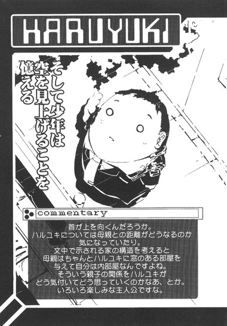
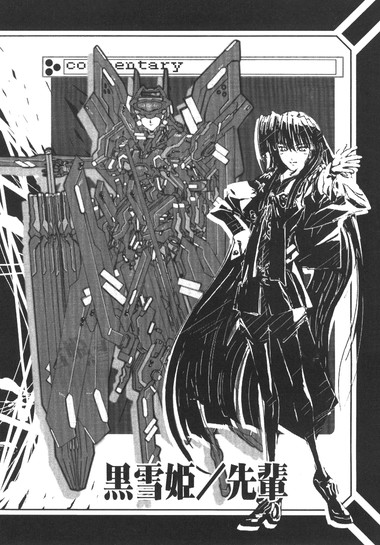

| [川原礫]アクセル・ワールド01 | |
| 川原礫 | |
| (2015) | |
|
アクセル・ワールド１ ─黒雪姫の帰還─
川原 礫
|
底本データ
一頁17行 一行42文字 段組１段
「二重山括弧」は「山括弧」に置換え注略。
アクセル・ワールド１
─黒雪姫の帰還─
どんなに時代が進んでも、この世から「いじめられっ子」は無くならない。デブな中学生・ハルユキもその一人だった。
彼が唯一心を安らげる時間は、学内ローカルネットに設置されたスカッシュゲームをプレイしているときだけ。仮想の自分を使って〈速さ〉を競うその地味なゲームが、ハルユキは好きだった。
季節は秋。相変わらずの日常を過ごしていたハルユキだが、校内一の美貌と気品を持つ少女〈黒雪姫〉との出会いによって、彼の人生は一変する。
少女が転送してきた謎のソフトウェアを介し、ハルユキは〈加速世界〉の存在を知る。それは中学内格差の最底辺である彼が、姫を護る騎士〈バーストリンカー〉となった瞬間だった。
ウェブ上でカリスマ的人気を誇る作家が、ついに電撃大賞〈大賞〉受賞しデビュー！実力派が描く未来系青春エンタテイメント登場！
川原 礫
群馬県高崎市出身、東京都練馬区在住。ストーリーはほぼ全て、荒川を自転車で走りながら考えているので、真冬と梅雨の季節には執筆スピードがガタ落ちする。好物はチーズ系のもの全般とアルミ系のもの全般。苦手はネギの青いとこと向かい風と上り坂。
イラスト：ＨＩＭＡ
10月３日生まれ。挿絵は今回が初のイラストレーター。「電撃萌王」小冊子への寄稿を見た文庫編集者が、今回の挿絵依頼をオファーしたことがきっかけ。本業仕事の合間を縫って、ブログやＳＮＳサイトなどでイラストを発表している。
アクセル・ワールド 01
黒雪姫の帰還
■黒雪姫（クロユキヒメ）＝梅郷中学の副生徒会長。清楚怜悧なお嬢様。学内アバターは自作プログラムの『黒揚羽蝶』。
■ハルユキ＝有田春雪（アリタ・ハルユキ）。梅郷中学一年生。いじめられっ子で太り気味。ゲームは得意だが、内向的。学内アバターは『ピンクのブタ』。
■チユリ＝倉嶋千百合（クラシマ・チユリ）。ハルユキの幼馴染。お節介焼きな元気娘。学内アバターは『銀色の猫』。
■タクム＝黛拓武（マユズミ・タクム）。ハルユキ、チユリとは幼少期からの知り合い。現在はハルユキたちとは異なる中学に通っている。剣道部所属の美形少年。
■荒谷（アラヤ）＝梅郷中のヤンキー。ハルユキいじめの主犯格。
■ニューロリンカー＝脳と量子無線接続し、映像や音声など、あらゆる五感をサポートする携帯端末。
■ブレイン・バースト＝黒雪姫からハルユキに転送されたニューロリンカー内のアプリケーション。
■学内ローカルネット＝梅郷中学内に構築されたローカルエリアネットワーク。出席確認や授業などに利用され、梅郷中の生徒は常時接続が義務となっている。
■グローバル接続＝世界中のネットと接続する行為。梅郷中学内ではグローバル接続は禁止されており、その代わりに学内ローカルネットが提供されている。
１
仮想黒板の右上に、黄色い手紙マークが点滅した。
授業中にぼんやりしていたハルユキは、思わず首を縮めながら、両眼の焦点を移動させた。
途端、視界いっぱいに広がる深緑色の黒板がスッと半透明に薄れ、整然と並ぶ生徒たちの背中と、その向こうに立つ教師の姿が鮮明化する。
教室、同級生、そして教師は現実の存在だが、透過する黒板とそこにびっしり板書された数式はそうではない。教師が空中に書きつけた数字と記号を、ハルユキの首の後ろに装着された〈ニューロリンカー〉が脳内で直接映像化しているのだ。
初老の数学教師は、どこかやり難そうに、何も持たない指先を彼にだけ見える黒板に走らせながらぼそぼそと公式の解説を続けている。その声も、現実の音としてはとてもハルユキの耳に届くボリュームではないが、教師の首に巻きつくニューロリンカーが増幅・鮮明化し、ハルユキに送り込んでくる。
視線を近くに戻すと、先ほどよりも数式の増えた黒板が再び実体化した。どうやら受信したメールは、教師が宿題の詰まった圧縮ファイルを配布したものではなさそうだ。となれば、グローバルネットから隔離されている現在、送り主は同じ学校の生徒ということになる。
女子の誰かが、校則を破って好意的メッセージを送ってきたのかも、などという期待は、中学校に入学してからのこの半年間でとうに捨てた。メールをそのまま、視界左下すみのゴミ箱にドロップしてしまいたいとハルユキは心底思ったが、そんなことをすれば後でどんな目に遭うか知れない。
嫌々ながら、教師が背中を向けたスキを覗い、右手を宙に上げて（この動作は仮想ではなく現実のものだ）メールアイコンを指先でクリックする。
瞬間、ぶびばぼるぶびる！ という品性の欠片もないサウンドと、原色の洪水のようなグラフィックがハルユキの聴覚と視覚にぶちまけられた。続いて、文字ではなく音声でメッセージ本文が再生される。
【ブタくんに今日のコマンドを命令する！（バックにぎゃはははという複数の笑い声）焼きそばパン二個と、クリームメロンパン一個と、いちごヨーグルト三個を昼休み開始から五分以内に屋上まで持って来い！遅刻したら肉まんの刑！チクったらチャーシューの刑だかんな！（再び爆笑）】
──左頬に感じる粘つくような視線の方向を見るまい、とハルユキは意志力を振り絞って首を固定した。見れば間違いなく荒谷とその手下Ａ、Ｂの嘲笑にさらなる屈辱を与えられるからだ。
授業中にこんなメールを録音したり視聴覚エフェクトを掛けたりすることは勿論できないので、これは事前に作成しておいたものだろう。何という暇な連中か、おまけに何だよ『コマンドを命令』って、意味ダブってんだよバーカバーカ!!
と、脳内では罵れるものの、それを声に出すことは勿論、メールで返信することすらハルユキにはできない。荒谷が、いかに時代が進もうと絶滅しないゴキブリ級のバカだとすれば、そいつにイジメられるままになっている自分は輪を掛けた愚か者だからだ。
実際、ほんの少しの度胸と行動力さえあれば、このメールを含めて保存しておいた数十件の〈証拠品〉を学校に提出して、連中を処罰させることは容易いだろう。
しかし、ハルユキはどうしてもその先を想像してしまう。
いかにニューロリンカーが国民一人に一台と言われるまでに普及し、生活の半分が仮想ネットワークで行われるようになったと言っても、所詮人間は〈生身の肉体〉という枷によってローレベルに規定され続ける存在でしかない。三度三度お腹も空くしトイレにも行く、そして──殴られれば痛いし、痛くて泣くのは死ぬほど惨めだ。
リンカースキルが進学や出世を決める、なんていうのは巨大ネットワーク企業のイメージ戦略に過ぎない。人間の価値を決めるのは結局、外見や腕力といった原始的なパラメータだけだ。
それが、小学五年生のときに体重六十キロを超え、五十メートル走で十秒を切ったことのないハルユキが十三歳にして行き着いた結論だった。
朝、母親にニューロリンカーへチャージしてもらった昼食代の五百円は、荒谷たちにパンとジュースを奢らされて完全に足が出てしまった。小遣いを貯めた全財産の七千円ちょっとが残ってはいるが、これを使ってしまうと今月出るリンカー用ゲームソフトが買えない。
ハルユキの巨体は燃費が異常に悪く、一食でも抜こうものなら空腹で眩暈がしてくるほどだが、今日ばかりは耐えるしかない。それに、少なくとも〈完全ダイブ〉できる昼休み中だけならしのぐ術も残されている。
丸い体を限界まで縮め、ハルユキが向かったのは専門教室ばかり並ぶ第二校舎だった。現在では、理科の実験から家庭科の調理実習までが仮想授業で行われているためこの棟は用無しになりつつあり、近寄る者は少ない。とくに、昼休みには生徒の姿はまったくない。
埃っぽい廊下の隅にある男子トイレが、ハルユキの専用隠れ家だ。とぼとぼと逃げ込んだ先で、ため息とともに足を止め、ハルユキは洗面台の上の鏡を見やった。
曇ったガラスの向こうから見返すのは、もしこれがテレビドラマなら、あまりにもベタすぎるだろうと突っ込みたくなるような〈太ったいじめられっ子〉。
癖の強い髪はあちこちに跳ねあがり、両頬の曲線にシャープさは欠片もない。だぶついた首回りに、制服のネクタイと銀色のニューロリンカーが食い込む様はまるで絞首刑だ。
この外見を何とかしようと、ほぼ絶食及び無茶な走り込みにまい進した時期もある。しかしその結果、昼休み中に貧血で倒れ、女子生徒数人の弁当を巻き添えにするという最悪な伝説を作ってしまった。
以来、ハルユキは現実の自分を捨てる──少なくとも学生のあいだは──ことに決めたのだ。
鏡からはコンマ一秒で目を離し、トイレのさらに奥へ進むと、端っこの個室に入る、しっかり鍵をかけ、蓋を下ろしたままの便器に腰を下ろす。体の下でプラスチックがみしみし軋むのにももう慣れた。背中を水洗タンクに預け、力を抜くと、目をつぶる。
唱えるのは、重苦しい体から魂のみを解き放つ魔法の呪文──。
「ダイレクト・リンク」
音声コマンドを受け取ったニューロリンカーが、量子接続レベルを視聴覚モードから全感覚モードへと引き上げ、ハルユキの体から重さと胃を絞るような空腹感が消えた。
便座の硬さ、制服の窮屈さも消失する。遠くの校庭から響いてくる生徒たちの歓声、トイレに満ちる洗浄剤の匂い、そして目の前ののっぺりとしたドアまでも、黒い闇に溶けてなくなる。
〈完全ダイブ〉。
重力感覚すらも切断され、ハルユキは暗闇のなかを落下した。
しかしすぐに、柔らかな浮遊感と虹色の光が全身を包んだ。両手と両足の先端から、フルダイブ時に用いられる〈仮想体〉が生成されていく。
黒いひづめ状の手足。ぷっくりした四肢と、ボールのような胴体は鮮やかな桃色。見ることはできないが、顔の中央には平らな鼻が突き出し、大きな耳が垂れ下がっているはずだ。つまり、ひと言で形容すれば、ピンクのブタである。
コミカルなアバター姿で、すとん、と降り立った先は、いかにも文部科学省推薦といったデザインのメルヘンチックな森の中だった。
巨大な茸がそこかしこに生え、ひときわ眩しく陽がさす円形の草地の中央には、水晶のような泉が湧き出ている。外周には、内部が空洞となった巨大な樹木が輪をつくってそびえ立ち、その内側は歓談やレクリエーションに使えるよう、何層にも分かれて階段で繋がっている。
この仮想空間が、ハルユキの通う杉並区立梅郷中学校の学内ローカルネットだ。
森を行き交ったり三々五々固まって笑い声を上げているのは、これもほとんどが人間ではなかった。二足歩行するコミカルな動物が半数、あとは羽を生やした（と言っても飛べはしないが）妖精あり、ブリキのロボットあり、ローブの魔法使いあり。全て、ローカルネットにダイブしている梅郷中の生徒・教師のアバターである。
生徒のアバターは、数多用意された素体から自由に選択・カスタマイズできる。根気さえあれば、用意されたエディタを駆使して完全オリジナルの姿を一から組むことも可能だ。所詮は中学生の技術及びセンスなのではあるが、それでも四月にハルユキが披露した自作の黒い騎士アバターは大きな注目を浴びた。
──のも刹那の栄華だった。ハルユキはため息まじりに、現在の己の姿を見下ろした。ブラックナイトのアバターは瞬く間に荒谷が巻き上げていき、ハルユキにはこのデフォルトのブタの使用を強制したのだ。
もっとも、独自性という点では桃色豚も負けてはいない。こんな自虐的なボディを選択する者はいないからだ。現実サイドと同様、丸っこい体を懸命に縮めたハルユキは、小走りで一本の樹を目指した。
と、中央の泉のほとりに、一際大きな人だかりができているのに気付いた。走りながら視線を送ったハルユキは、思わず足の進みを緩めた。生徒の輪の中央に、なかなか目撃することのできないレアなアバターが見えたのだ。
デフォルトセットにあるものではない。透明な宝石がちりばめられた、漆黒のドレス。手には畳んだ黒い日傘。背中には、虹色のラインが走る黒揚羽蝶の翅。
長いストレートの髪に縁取られた、雪のように白い顔は、これが自作だとは信じられない完璧な美しさだ。ハルユキも到底かなわない、プロとしても通用しそうなデザインスキルである。
華奢な体をしどけなく巨大茸にもたれさせ、物憂げな表情で周囲のアバターたちの言葉を聴いている彼女が、生徒会で副会長を務める二年生の女子生徒であることをハルユキは知っていた。驚くべきことにその美貌は、現実の容姿をほぼ完璧に再現したものであり、ゆえに献ぜられた通り名が──。
〈スノー・ブラック〉。〈黒雪姫〉。
あのような存在と自分が、梅郷中の生徒であるという共通項をひとつにせよ持っていることすらハルユキには嘘っぽく思える。こうして仮想の視線を向けているだけで、自意識を苛む矮小感がいや増す気がして、無理やりに首を正面に戻す。
全力ダッシュで駆け込んだ先は、レクリエーションルームが設置されている大樹の一本だった。簡単に言えばゲームコーナーだが、もちろん市販ソフトのようなＲＰＧや戦争ゲームなどは一切ない。クイズやパズルなどの知育系、または健全なスポーツゲームばかりだが、それでも多くの生徒たちが各コーナーに群がり、歓声を上げている。
彼らは皆、教室の自分の机や学食から完全ダイブしている。その間、生身の体は無防備に放置されているわけだが、ダイブ中の人間に悪戯するのは明らかなマナー違反なので、気にする者はハルユキ以外にはいない。教室からローカルネットにダイブし、戻ってきたら、制服のズボンが脱がされていたのは入学して一ヶ月も経たない頃だったか。
現実の肉体をトイレに隠し、そして仮想空間ですら人の目から逃れるべく、樹の幹に刻まれた階段を駆け上がる。上に行けばいくほど、設置されたゲームは人気のないものになっていく。
野球、バスケ、ゴルフ、テニスと通り過ぎ、卓球のフロアも無視してたどり着いたのは、〈バーチャル・スカッシュ・ゲーム〉のコーナーだった。
生徒は一人も居ない。人気がない理由は明らかだ。スカッシュというのは、テニスに似てはいるが、ラケットでボールを打ち込む先は上下左右正面が硬い壁に囲まれた空間であり、跳ね返ってきた球を黙々と一人でリターンし続ける、とことん孤独なスポーツだからだ。
本来ハルユキが好むゲームジャンルは、マシンガンを抱えて戦場を駆け回る主観射撃もので、それでなら本場の連中とも互角以上にやり合える腕前だ。もちろん日本でも人気のジャンルなのだが、まさか学校のネットにそんなものが用意されているわけもないし、それに──小学校の頃、クラスの男子ほぼ全員をハンドガン一丁で撃ち殺し、翌日から手酷いイジメにあった苦々しい思い出もある。以降ハルユキは、学校の奴らとはジャンルにかかわらず二度と同じゲームをしないと誓っている。
がらんとしたコートの右端に歩み寄り、操作パネルに片手をかざす。ハルユキの生徒ＩＤが入力され、セーブされているレベルとハイスコアが読み出される。
ハルユキは、一学期の中ほどから昼休みはひたすらこのゲームで時間を潰してきた。結果、スコアはあきれるような数字に達しつつある。さすがに飽きてきた気もするが、ここ以外に行く場所があるわけでもない。パネルから湧き上がったラケットを、黒いひづめのついた桃色の右手でしっかりと握る。
ゲームスタート、の文字に続いて、どこからともなくボールが降ってくる。それを、今日一日の鬱屈を込めたラケットで思い切り叩く。
ちかっ、と一瞬の閃きを残して、レーザーのようにボールがすっ飛び、床と正面の壁にぶつかって戻ってきた。ほとんど視覚以上の反射で捕捉し、脳が自動的に導く最適解に従って、一歩左に動きながらバックハンドで打ち返す。
現実のハルユキには、無論こんな動きはできない。しかしここはあらゆるナマのしがらみから解き放たれた電子の世界だ。ボールを認識し、体を動かすのはただ脳とニューロリンカー間を往復する量子信号のみ。
ボールはたちまち実体を失い、コートに閃くおぼろな軌跡でしかなくなる。ぽごん、ぽごんという効果音が一秒間に何度も繰り返され、機関銃のように響く。それでも、ハルユキは豚の体を縦横無尽に跳躍させ、ラケットを全方位に唸らせ続ける。
くそ──現実なんて要るか。
極限のゲームスピードに挑みながらも無心にはなれず、脳裏を怨嗟に満ちた叫びが貫く。
なぜ、本物の教室や学校なんていう下らないものが必要なんだ。人間はもう仮想世界だけで生きていけるし、実際そうしている大人は腐るほどいる。過去には、人間の意識をまるごと量子データに置き換え、本物の異世界を構築しようという実験まで行われたほどだ。
それなのに、集団生活を学び、情操を育てるため、なんて馬鹿みたいな理由で子供はひとまとめに現実の檻にぶちこまれる。荒谷たちはいいだろう、適度にストレスを解消し、小遣いも節約できるんだから。でも、僕は──これ以上、どうすればいいんだ。
ぴぽん、と音がして、視界の隅でゲームレベルがひとつ上がった。
いきなりボールが加速する。反射角度も不規則になり、予想外の方向から曲線を描いて襲い掛かってくる。
ハルユキの反応が徐々に遅れはじめる。
畜生、もっと──もっと加速しろ。
仮想世界も、現実すらも、あらゆる壁をぶち抜いて、誰もいない場所へ行けるほど──
速く！
すかっ、とラケットが空を切った。光線と化したボールがハルユキの頬を掠め、背後へ抜けて、消滅した。情けなくもコミカルな効果音とともに、ゲームオーバーの文字が降ってきて、コートでぼよんぼよんと弾む。
点滅するハイスコアには目もくれず、ハルユキはうなだれたままゲームを再スタートしようとパネルに向き直った。
突然の声が、ハルユキの神聖な隠れ家を震わせたのは、その時だった。
「あ──っ!! こんなトコにこもってたのね!!」
耳が、というより脳がキーンと痺れるほどの甲高い叫び声。ぎくり、と背中を強張らせながら振り向いたハルユキが見たのは、同じく動物型の生徒アバターだった。
と言っても、ハルユキのブタのような滑稽さは微塵もない。しなやかな細身を、紫がかった銀の毛皮に包んだネコだ。片方の耳と尻尾の先に、濃いブルーのリボンを結んでいる。ポリゴンを一から組んだものではないが、相当に各所のパラメータをいじり込んである。
金色の虹彩を持つ瞳に怒りの色を浮かべ、ネコは小さな牙の生えた口を大きく開けてもう一度叫んだ。
「ハルが最近、昼休みのあいだずーっと居ないから探し回ってたのよ！ゲームはいいけど、何もこんなマイナーなのやらなくても、下でみんなとやればいいじゃない！」
「......オレの勝手だろ、ほっとけよ」
どうにかそれだけ言い返して、ハルユキはコートに向き直ろうとした。しかし銀のネコはひょいと首を伸ばし、ゲームオーバー表示を一瞥すると、さらに高い声で喚いた。
「えーっ、何よこれ......レベル１５２、スコア２６３万!?あんた......」
──すごいじゃない！
などという台詞を浅ましくも一瞬期待したハルユキを、ネコはあっさりと裏切った。
「バカじゃないの!? ごはんも食べずに何やってんのよ！今すぐ落ちなさい!!」
「......やだよ、まだ昼休み三十分もあるじゃないか。お前こそどっかいけよ」
「あーそう、そういう態度とるんだったら、あたしも実力を行使するからね」
「やれるもんならやってみろ」
ぼそぼそと言い返し、ハルユキはラケットを握りなおした。学内ネットのアバターに、〈当たり判定〉はない。不適切な行為を防止するという名目で、生徒は他の生徒の仮想体を触れないのだ。もちろん、他人を無理やりログアウトさせるなど論外だ。
ネコ型アバターは、細い舌を限界まで突き出してべーっとやってから、一声叫んだ。
「リンク・アウト！」
即座に、光の渦と鈴に似た音を残して姿がかき消える。
ようやく煩いのが消えたと、僅かな寂しさを短い鼻息で吹き散らした、その瞬間。
がつん！ と、少々洒落にならない衝撃が頭を襲い、周囲の光景何もかもが消え去った。暗闇の向こうから、点状の光が引き伸ばされるように、現実の風景が戻ってくる。
ずしりと圧し掛かる自重を感じながら、ハルユキは懸命に瞬きし、目の焦点を合わせた。
元の、男子トイレの個室だ。しかし、眼前にあるべきブルーグレーのドアの代わりに、ハルユキは思わぬものを見た。
「おま......なん......!?」
すぐ目の前で仁王立ちになっているのは、ひとりの女子生徒だった。ブレザーのリボンの色は、同じ一年生であること示す緑。
ハルユキとは、重量比３：１を切ると思われるほどに小柄だ。ショートカットの前髪を右横に持ち上げ、青のピンで留めている。猫科めいた小さな輪郭に、不釣合いに大きな瞳が、怒りに燃えてハルユキを睨んでいる。
左手には小ぶりのバスケット。そして右手はまっすぐハルユキの頭上まで伸ばされ、小さな拳を固く握っていた。それを見て、ハルユキはようやく自分がなぜ完全ダイブから突如切断されたのか理解した。女子生徒があのゲンコツでハルユキの頭をどつき、その衝撃でニューロリンカーの安全機構が働いて自動リンクアウトしたのだ。
通常、セーフティは肩を揺すられたり大声で呼びかけられたりするだけで発動するし、神経質な女子は周囲一メートル以内に誰かが接近した途端リンクアウトするように設定したりもする。ハルユキが脳天をぶん殴られるまで闖入者に気付かなかったのは、トイレの個室に体を隠し、セーフティレベルを最低にまで落としていたからだ。
「お......お前なあ!!」
驚きあきれつつ、ハルユキはこの学校で唯一パニクらずに会話できる女子に向かって叫んだ。
「何やってんだよ！ ここ男子トイレだぞ！ 鍵かかってんのに......バカじゃねえの!!」
「バカはおまえじゃ」
ハルユキの幼馴染にしてスカートのまま男子トイレの仕切り壁を乗り越える剛の者、倉嶋千百合は、ぶすっとした声で言い返すと右手を戻し、後ろ手にドアの鍵を開けた。
身軽な動作でぴょん、と個室から飛び出る。栗色の髪にすべる日光に思わず目を細めるハルユキを、チユリはようやく僅かに見せた笑顔とともに促した。
「ほら、とっとと出てきなさいよ」
「............わーったよ」
ため息を呑み込み、ハルユキは便座の蓋を軋ませながら体を起こした。出入り口に向かうチユリを追いながら、もう一つの疑問について尋ねる。
「......なんでここが判ったんだ」
答えはすぐには返ってこなかった。男子トイレから首だけ出して外の様子を確認したチユリは、するりと廊下に出てから、短く言った。
「あたしも屋上にいたの。だから後つけた」
ということは──。
「......見てたのか」
廊下に一歩踏み出しかけた足を止め、ハルユキは低く呟いた。
チユリは言葉を探すように俯き、背中を奥の壁に預けてから、ようやくこくりと頷いた。
「......あたし、あいつらの事にはもう口出ししない。ハルがそれでいいって決めたんなら......しょうがないから。でも、ご飯は食べたほうがいいよ。体に悪いよ」
どこか無理したような笑みを浮かべ、チユリは左手のバスケットを差し出した。
「あたし、お弁当つくってきた。味は保証できないけどさ」
──惨めだ、とハルユキは思った。
チユリの言葉と行為のなかに、憐れみ以上の感情を探そうとしてしまう自分の心が、どうしようもなく情けなかった。
なぜなら、チユリには、れっきとした彼氏が居るのだ。あらゆる面でハルユキと対照的な、もう一人の幼馴染が。
自分の口が勝手に動き、妙に平板な声を放つのを、ハルユキは聴いた。
「......タクに作ったやつの余りかよ」
チユリの顔が、さっと曇った。きつく寄せられる眉の下の瞳を見ることができず、ハルユキは視線を廊下に落とした。
「ちがうよ、タッくんのとこは給食だもん。これ......サンドイッチ、ポテトサラダとハムチーズだけだよ。ハル、好きでしょ」
視界に入ってきた白いバスケットを、ハルユキは右手でそっと押し戻そうとした。
しかし、現実世界の緩慢な肉体は、ハルユキの意思とかけ離れた急激な動きでバスケットをチユリの手から叩き落とした。床にぶつかった拍子に蓋がはずれ、水色のクッキングペーパーの内側から、三角に切られたサンドイッチが一つ、二つ飛び出して形を崩した。
「あっ......」
反射的に謝ろうとしたが、頭の奥がかあっと熱くなり、言うべき言葉は形にならなかった。顔を上げることすらできず、俯いたまま後ずさると、ハルユキは一声叫んで身を翻した。
「い......いらねーよ!!」
今すぐにでもこの場所からログアウトしたい、ハルユキは痛切にそう思ったが、しかし勿論それは不可能だった。せめて懸命に走ったが、現実の肉体はどうしようもなく鈍重で、背後で小さくすすりあげる声から逃れることはできなかった。
最悪な気分で午後の授業とホームルームを聞き流し、ハルユキは逃げるように教室を飛び出した。
二つ隣のチユリの教室、あるいは校門、あるいは帰り道のどこかで彼女を待って謝るべきだという声を意識の埒外に押しやり、もう一つの隠れ場所である図書室へと駆け込む。
本来、図書室などという空間はとうにその役目を終えている。しかし、大人の中には学校そのものと同じようにペーパーメディアの本も子供の教育に必要だと考える連中がいて、資源と空間の無駄としか思えない真新しい背表紙が書架に並べられているのだ。
もっとも、そのおかげで学校内に貴重なパーソナルスペースが確保できるのだから文句は言えない。カムフラージュにハードカバーを二、三冊抱えて壁際の閲覧ブースに閉じこもったハルユキは、狭い椅子に体を押し込むと、リンカーが認識できるぎりぎりの音量で完全ダイブを命じた。
授業が終わってから数分しか経っていないだけあって、学内ネットは閑散としていた。いまのうちにいつもの場所に引きこもるべく、高速で草地を横切り樹の幹を登る。
バーチャル・スカッシュコーナーも当然無人だった。本当は、こんな単純な球当てではなく、血みどろの戦争もので胸のもやもやを一時でもふっ飛ばしたいところだが、グローバルネットには接続できずゲームアプリの起動も制限されている学校内では止むを得ない。
空腹はもう限界を超えていたが、それでもすぐに帰宅する気にはならなかった。帰り道でチユリに遭遇したら、どんな顔で何を言えばいいのかまったく判らない。いや、謝ればいいのだが、自分の口を意思に従わせられる自信がそもそもない。
──あのときも、そうだったな。
昔、同じようにチユリを泣かせてしまったときのことを思い出しそうになり、ハルユキはきつく目をつぶった。そのまま操作パネルに右手をかざし、ログインする。
手探りでラケットを掴み、体の向きを変え、コートに正対した。
目を開け、落下してくるボールに、あらゆる鬱屈を叩きつけようとして──。
ハルユキは、全身を凍りつかせた。
コートの中央に表示されている原色の立体フォントが、記憶と異なる数字を表示させていた。
「レベル......１６６!?」
ハルユキがつい数時間前に更新したレベルを、１０以上も上回っている。
一体何故、スコアは生徒ＩＤごとに管理されているはず、と一瞬思ってから、すぐに悟った。あのとき、チユリのげんこつによってハルユキは強制ログアウトさせられたため、ゲームがそのまま保持されたのだ。だから、誰かがその続きでプレイを再開し、スコアを塗り替えることは可能だ。しかし。
自分以外の誰がこんなとんでもない点を!?
ハルユキの、崩壊寸前のプライドをどうにか維持させているもの、それは完全ダイブ環境下でのＶＲゲーム・テクニックだ。勿論、頭の良さが勝敗を左右するクイズやボードゲームは除かれるが、反射速度がものを言うガンシューティングやアクション、レースゲームなら、この学校で自分に勝てる奴はいないという自負がハルユキにはあった。
それをひけらかしたことはない。自分が目立ってもろくなことがないのは、小学校の頃から厭と言うほど学習している。あえて確認するまでもないとこれまでは思っていたのだが──この、スカッシュゲームの恐るべき得点は......。
その時。
背後で、声がした。チユリではない。女性だが、もっと低く、絹のように滑らかな響き。
「あの馬鹿げたスコアを出したのはキミか」
おそるおそる振り向いたハルユキの目の前に立っていたのは。
闇に銀をちりばめたドレス。杖、あるいは剣のように床に突かれた傘。純白の肌と漆黒の瞳──〈黒雪姫〉。
アバターでありながらデジタル臭さのかけらもない、一種凄絶な美貌を僅かに傾け、学校一の有名人は音もなく前に進み出た。
全身でそこにだけ色彩のある紅い唇にかすかな微笑を浮かべ、黒雪姫は続けて言った。
「もっと先へ......〈加速〉したくはないか、少年」
その気があるなら、明日の昼休みにラウンジに来い。
たったそれだけを言い残して、黒雪姫はあっけなくログアウトした。
アバターがハルユキの視界に存在した時間は十秒に満たなかったろう。ローカルネットサーバーのバグか、いっそ幻覚を見たのだとすら思える、余りにもあり得なさ過ぎる出来事だったが、しかし、コート上に浮かび続ける恐るべきスコアはたしかな現実だった。
もう、ハイスコア更新に挑戦する気すら起こらず、ダイブを終了したハルユキはそのまま図書室の閲覧ブースでぼんやりと座り続けた。耳の奥では、三つの台詞だけが無限に連続再生されていた。黒雪姫の口調は女子中学生としては異質だったが、あの圧倒的存在感とミックスされると違和感は皆無で、むしろ男子だけでなく女子生徒にも絶大な人気がある理由の一端なのだろうと思えた。
やがてふわふわした足取りで学校を出て、家路をたどる間も、体はほとんど自動操縦のありさまだった。ニューロリンカーが視聴覚モードで表示する交通予測ナビがなければ、二、三度車に轢かれていたかもしれない。
高円寺の高層マンションにある無人の自宅に帰り着くと、ハルユキはまっさきに冷凍ピザを温め、炭酸飲料と一緒に平らげた。両親はずいぶん昔に離婚し、今は母親と一緒に暮らしているが、毎夜零時を回らないと帰ってこないので登校間際に昼食代をもらう一瞬しか顔を合わせない。
すきっ腹をジャンクフードで満たし、自分の部屋に引っ込む。いつもならまずグローバルネットの巡回コースをチェックして、その後ヨーロッパあたりの戦場を数時間駆け回り、余力で宿題を片付けてから寝るのだが、今日に限っては何をする気も湧いてこない。
余りにも色々なことがあり過ぎたせいか、脳が腫れているかのように重く、ハルユキは着替えてニューロリンカーを外すなりどすんとベッドに倒れこんだ。
眠りは、しかし、とても安らかとは言いがたいものだった。荒谷たちの嘲笑、チユリの涙、そして黒雪姫の謎めいた言葉が繰り返し夢に現れ、ハルユキを翻弄した。
もっと先へ──〈加速〉したくはないか。
夢のなかで、黒雪姫はアバターではなく現実の副生徒会長の姿だった。全校集会の壇上で超然とした無表情を保つ彼女しか見たことはないはずなのに、なぜか夢ではどこか誘うような小悪魔的な微笑をその唇に浮かべ、ハルユキの耳に囁くのだった。こっちへ来い、と。
２
そう、全部夢だったのだ。昨日の、ローカルネットでの遭遇も含めて。
翌水曜日、いつものように憂鬱な顔で登校したハルユキは、そう思いながら教室に入った。
既視感溢れる授業に、繰り返される荒谷たちの悪戯メール。二日連続で昼飯をタカられるのは初めてだったが、指定されたのは昨日と同じ焼きそばパンとクリームメロンパンだった。どんだけ好きなんだよ、と思いながらメールを閉じたハルユキは、昼休みのチャイムとともに席を立った。
のろのろした歩調で向かったのは、しかし荒谷たちに呼び出された屋上ではなく、校舎一階、学生食堂に隣接したラウンジだった。
安物の長テーブルがぎっちりと並ぶ学食とは違い、半円形のラウンジには瀟洒な白い丸テーブルが余裕を持って配置されている。大きな採光ガラスから、秋に色づく中庭の木々を一望できる、間違いなく梅郷中学校で最も上等な空間だ。
ゆえに、一年生は使用できない不文律がある。テーブルを囲む生徒たちのリボンとネクタイは全て青（二年生）か臙脂（三年生）で、緑はまったく見えない。
上級生たちの半数はコーヒーや紅茶のカップ片手に談笑し、半数は高い背もたれつきの椅子に体を預けて目を閉じている。眠っているのではなく学内ネットに完全ダイブしているのだ。
ハルユキはまず、ラウンジの入り口の観葉植物にどうにか巨体を隠し、内部をうかがった。
居るわけはない、昨日のアレは夢だったのだから、半ば以上そう確信していた──のだが。
「............居るじゃん......」
思わずごくりと空気を呑む。ラウンジの最奥、窓際のテーブルに、ひときわ目立つ集団があった。二年と三年が混在して六名、よくよく目を凝らすと全ての顔に見覚えがある。全員が現生徒会のメンバーだろう、男子も女子も方向性に差はあれ揃って眉目秀麗だ。
その中でも最大の存在感を放っているのが、物憂げにハードカバーの頁を捲る青リボンの女子生徒だった。腰近くまであるまっすぐな髪は、いまどき珍しいほどの漆黒。ダークグレーのプリーツスカートから覗く脚は、これも黒のストッキングに包まれている。そしてどうしたことか、ブレザーの下の開襟シャツまでが光沢のある黒だ。間違いない──梅郷中学校一の有名人〈黒雪姫〉。
ラウンジ入り口から奥のテーブルまでは、直線で二十メートルもないだろう。しかし、その距離はハルユキにはほとんど無限にも等しく感じられた。上級生のあいだを突っ切ってあそこまで行くなどという冒険は到底できそうもなかった。
回れ右をして帰ろう。そして学食の販売コーナーでパンとジュースを買い、屋上の荒谷たちに届ける。その後第二校舎のトイレにこもり、ローカルネットの一人用ゲームで空しく時間を潰す。
──くそ。畜生。行ってやる。
ハルユキは歯を食いしばると、観葉植物の陰から出て、ラウンジへと足を踏み入れた。
周囲のテーブルから集まる上級生の視線には、これは被害妄想ではなく確かな非難と不快の色が含まれていた。入学当初ならいざ知らず、二学期の半ばともなれば全ての一年生が立ち入り禁止の慣習法を知っているはずだからだ。
しかし幸い、声に出して咎めようという者はいなかった。がくがく震える両脚で懸命に重い体を運び、テーブルの間を縫って、ハルユキはほとんど息も絶えだえになりながら、ついに生徒会役員たちが占拠する最奥部へと辿り着いた。
最初に顔を上げたのは、最も手前に座る二年生だった。ふわふわした髪を揺らして首をかしげた女子生徒は、僅かな訝しさの混じる笑顔をハルユキに向け、優しい声で言った。
「あら......何か御用？」
御用です。とも言えず、ハルユキは口ごもった。
「ええと......あの......えー......」
その時には、残る役員たちの四人までが皆ハルユキを見ていた。彼らの顔に悪意はなかったが、周囲のテーブルから向けられる不快の視線はもはや耐えがたく、緊張のあまり卒倒しそうになったとき、ようやく最後の一人が本から顔を上げた。
初めて間近から肉眼で見る黒雪姫の顔は、やはり昨日見た（はずの）アバターの数倍は美しかった。切りそろえた前髪の奥、くっきりした眉の下で、虹彩までも黒く見える瞳が冴えざえとした光を放っている。アバターを黒い薔薇に喩えるなら、こちらは黒水仙か。そんなものがあるのかどうかは知らないが。
その美貌に、この見苦しい一年は何、という表情が浮かぶのをハルユキは覚悟した。
しかし心底驚いたことに、黒雪姫は色の薄い唇に見覚えのある微笑を浮かべると短く言った。
「来たな、少年」
ぱたりと音を立ててハードカバーを閉じ、棒立ちのままのハルユキに手招きしながら、視線をちらりとテーブルの役員たちに走らせる。
「用は私だ。済まない、そこ空けてもらえるかな」
後半は、隣に座る三年の男子に向けたものだった。短髪長身の上級生は、面白がるような表情を浮かべて立ち上がると、掌で椅子をハルユキに示した。
もごもごと礼を口にして、ハルユキは丸い体を限界まで縮め腰を下ろした。華奢な椅子が盛大に軋んだが、黒雪姫はまるで気にするふうもなく、ブレザーの左ポケットを探ると束ねた細長いものを取り出した。
それは一本のケーブルだった。銀の細線でシールドされたコードの両端に、小さなプラグが付いている。左手で長い髪を後ろに持ち上げ、びっくりするほど細い首に装着されたニューロリンカー（当然のようにピアノブラック塗装だった）の端子に右手でプラグの片方を挿入すると、黒雪姫は何気ない仕草でもう一方のプラグをハルユキに差し出した。
今度こそ、事の成り行きを見守っていたラウンジじゅうの生徒たちから、大きなざわめきが巻き起こった。中には、嘘だろとか、いやぁーそんなーとか悲鳴じみたものまで混じっている。
度肝を抜かれたのは、ハルユキも同様だった。額にぶわっと汗が浮き上がる。
〈有線直結通信〉。
略して直結と呼ばれる行為を、黒雪姫はハルユキに促したのだ。ニューロリンカーは通常、無線とその場のネットワークサーバーを通してのみ相互通信を行い、そこには何重ものセキュリティが介在する。しかし、有線で直結した場合は、防壁の九割までは無力化する。ある程度のリンカースキルを持つ者なら、相手のプライベートメモリを覗き見たり、悪意あるプログラムを仕掛けることすら可能だ。
ゆえに通常、直結するのは最も信頼できる相手──家族、もしくは恋人に限られる。逆に言うと、公共の場で直結している男女は九十九％まで付き合っているということになる。ケーブルの長さがその親密度を表すという技術的根拠のない俗習まで存在するのだ。
いま黒雪姫が差し出しているⅩＳＢケーブルは約二メートルはあるが、しかしこの場合長さなど問題ではない。きらきら光る銀色の端子をまじまじと凝視しながら、ハルユキはどうにか声を絞り出し、尋ねた。
「......あ、あの、どうすれば......」
「キミの首に挿す以外に使い道はなかろう」
間髪入れずにそう断言されてしまう。ハルユキは卒倒しそうになりながらも、震える指先でプラグを受け取り、手探りで自分のニューロリンカーに突き刺した。
途端、眼前に点滅する〈ワイヤード・コネクション〉の警告表示。それが薄れると同時に、ラウンジの光景から、目の前の黒雪姫の姿だけが鮮やかに浮き上がった。
微かな笑みの浮かぶ唇はぴくりとも動かないのに、ハルユキの脳裏に滑らかな声が響いた。
『わざわざ足労願ってすまなかったな、有田春雪君。思考発声はできるかな？』
唇を動かさずリンカーのみを通して会話する技術のことだ。ハルユキは頷き、言葉を返した。
『はい。あの......これは、一体、どういうことなんですか？手の込んだ、その......悪戯とかなんですか？』
怒るかと思ったが、黒雪姫は小さく首をかしげると、ふむ、と呟いた。
『そうだな......ある意味ではそのとおりかもしれない。なぜなら私は、これからキミのニューロリンカーに、ひとつのアプリケーションソフトを送信する。それを受け入れれば、いまのキミの現実は完膚なきまでに破壊され、思いもよらぬ形に再構成されるからだ』
『......げ、現実を......破壊......？』
ハルユキは呆然と繰り返した。
もう、テーブルで成り行きを興味深そうに見つめる生徒会の面々も、周囲でざわめく生徒たちも、まるで視界に入らなかった。ただ黒雪姫の言葉が、何度も脳裏でリフレインした。
漆黒をまとう上級生は、そんなハルユキの様子に再び笑みをかたちづくり、右手を持ち上げると、しなやかな白い指先でさっと何かを滑らせる仕草をした。
ぽーん、というビープ音。
【BB2039.exe を実行しますか？ ＹＥＳ／ＮＯ】というホロ・ダイアログ。
見慣れたシステム表示のはずなのに、その窓はまるで独自の意志を秘めてハルユキに決断を迫っているかのように思えた。
常識的には、よく知らない人間から直結回線経由で送り込まれた正体不明のアプリを実行するなど無思慮もいいところだ。今すぐケーブルを引き抜いて当然の場面だろう。しかし、ハルユキはなぜかそうできなかった。代わりに、椅子の上で縮こまる自分の体を見下ろした。
──現実。僕の、リアル。
鈍重な体。冴えない容貌。繰り返される苛めと、ネットへの逃避。そして何より、その状況を変えようともしない自分。このままでいい、どうせ何も変わらないと諦めている僕自身。
ハルユキは視線を動かし、黒雪姫の闇色の瞳を見つめた。
そしてコンマ五秒後、右手を持ち上げ、ＹＥＳのボタンに指先を突き刺した。僅かな驚きの色が白い貌に浮かぶのを見て、ほんの少しの満足感が胸にぽたりと落ちた。
『望む、ところです。この現実が......壊れるなら』
そう呟いたのと、ほとんど同時に。
視界いっぱいに、巨大な焔が噴き上がった。
思わず体を強張らせたハルユキを取り巻くように荒れ狂った火焔の流れは、やがて体の前に結集し、ひとつのタイトルロゴを作り出した。デザインセンスは決して新しいものではない。前世紀の末に流行した、ある種の対戦型ゲームを思い起こさせる荒々しさ。
現れた文字は──〈BRAIN BURST〉。
これが、ハルユキと、ハルユキの認識する現実の全てを変革するひとつのプログラムとの出会いだった。
インストールは三十秒近くも続いた。ニューロリンカー用アプリとしてはかなり巨大だ。
燃え盛るタイトルロゴの下に表示されたインジケータ・バーがようやく一〇〇％に到達するのを、ハルユキは息を呑んで見つめた。現実を──破壊すると、黒雪姫は言ったのだ。それは具体的に何を示しているのか。
インジケータが消え、ロゴも燃え尽きるように消滅した。オレンジ色の残り火が、小さな英語フォントで〈ウェルカム・トゥ・ジ・アクセラレーテッド・ワールド〉という文字を作り、これもすぐに火花となって散った。どういう意味だ──加速、世界？
ハルユキはそのまま十秒近く呼吸を止め、何かが起こるのを待った。
しかし、自分の体にも、周囲の光景にも、変化の兆しすら訪れる気配はなかった。相変わらず制服の下では汗がだらだらだし、周りのテーブルから浴びせられる非難の視線は増強するいっぽうだ。
細長く息を吐き出しながら、ハルユキは訝しさとともに黒雪姫を見た。
『あの......この〈ブレイン・バースト〉ってプログラムは、一体......』
思考発声でそう尋ねたが、黒衣の上級生は微笑を消さぬまま、ハルユキの疑問とは離れたことを囁いた。
『無事にインストールできたようだな。充分な適性があることは確信していたが』
『て、適性？ このプログラムのですか？』
『そうさ。〈ブレイン・バースト〉は、高レベルの脳神経反応速度を持つ者でなければそもそもインストールできない。例えば、バーチャルゲームで馬鹿げたスコアを出せるほどの、な。キミが幻の炎を見たとき、プログラムは脳の応答をチェックしていたのだ。適性が足りなければ、そもそもタイトルロゴすら見ることは叶わん。しかし......それにしても少しだけ驚かされたぞ。かつての私は、この怪しげなプログラムを受け入れるかどうか二分近く迷ったというのに。キミを説得するために考えていた台詞が無駄になってしまった』
『は、はあ......すみません。でも、その、何も......起こらないみたいなんですが。常駐じゃなく選択起動型のアプリですか？』
「まあ、そう焦るな。これからキミには、少々心の準備をしてもらわねばならん。具体的な機能の説明はそのあとでもよかろう。なに、時間はたっぷりあるからな』
ハルユキはちらりと、視界の右下端に継続表示されている時計を眺めた。すでに昼休みは半分が過ぎ去ろうとしている。たっぷり、と言うほど時間があるとは思えない。
周囲の、好奇と嫌悪が入り混じった雰囲気を痛いほど感じながら、ハルユキは身を乗り出した。体の下で椅子がぎしっと軋んだ。
聞きなれた音だが、自分の醜さ、滑稽さを椅子までもが笑っている気がして、ハルユキは唇を噛んだ。こんな現実の自分に愛着などあろうはずもない。変われるなら、それがたとえどんな変化であろうとも受け入れる。
『......心の準備ならもうできてます。教えてください、このプログラムは......』
そこまで言いかけた時。
ハルユキが背を向けているラウンジの入り口から、最も聞きたくない声が響き渡った。
「てめぇ、ブ......有田！ バックレてんじゃねえぞ!!」
反射的にびくんと体を竦ませ、ハルユキは椅子から腰を浮かせた。振り向いた先に、顔を赤くして立っているのは、昼休みは屋上から出てこないはずの荒谷だった。
ハルユキが表情を驚愕から恐怖へと変化させるのと同期して、荒谷の顔も激怒から不審へと変わった。ハルユキが立ち上がったことによって、これまで巨体の陰に完全に隠れていた黒雪姫の華奢な姿と、そのリンカーから伸びてハルユキに繋がるケーブルが露わになったのだ。
凍りつきながらも、ハルユキは生徒会の面々を除く周囲の生徒たちの雰囲気が微妙に変化したのを敏感に察知した。同じ緑のネクタイをしている大柄な荒谷と、縦に小さく横に大きいハルユキの関係は、全員が瞬時に悟っただろう。しかし生徒たちが放ったのは、荒谷への非難ではもちろんなく、あーやっぱりね、という納得の気配だった。
やめろ──今はやめてくれ。
ハルユキは懸命にそう念じた。黒雪姫に、自分がイジメられているのだなどという事を知られるのは絶対に厭だった。用事が終わったら、すぐにパンを買って屋上に行くからおとなしく待っていてくれ、そう伝えるつもりで、ハルユキは荒谷に向けて強張った笑みを浮かべた。
それを見た荒谷の顔が、一層の憤激に赤黒く染まった。ブタぁ、と唇が無音で動くのを、ハルユキはぞっとしながら見た。学校一の有名人と直結した状態でハルユキが浮かべた笑みの意味を、奴は完璧に誤解したのだ。
吊り上げた目をぎらぎらと光らせ、荒谷は無言で学食とラウンジを隔てる生け垣を潜った。かかとを潰した上履きをぺたぺた鳴らしながら、一直線に近づいてくる。その背後に手下ＡとＢも、こちらはやや緊張した顔で続く。
もう駄目だ、と思いながらハルユキは一歩あとずさった。
荒谷は、同じ十三歳とは思えぬ長身に、空手をやっているとかでがっちりした筋肉をまとっている。その上から丈の短いブレザーと、逆にやけに長い薄紫のシャツを身につけ、ズボンもぞろりと太い。白っぽい金に染めた髪は剣山のように逆立ち、ごく細い眉と両耳のピアスに彩られたツリ目は剣呑の一言だ。
梅郷中学校は私立の進学校だが、少子化極まるこの時代、入学試験を設けている中学はほとんどない。ゆえに荒谷のような武闘派が、『楽にシメよう』と思って入ってくることもある。
そんな手合いに、入学初日にあっさりシメられたハルユキは、すぐ目の前に立ち止まり伸し掛からんばかりに見下ろしてくる荒谷を縮み上がりながら見つめた。
「ナメてんじゃねーぞ」
捻じ曲げられた唇から発せられた台詞に、ハルユキが、卑屈な謝罪を口にしようとした寸前。
背後から、黒雪姫の、涼しげな肉声が抑揚ゆたかに響いた。
「キミはたしか、アラヤ君だったな」
それを聞いた荒谷が、一瞬の驚き顔を経て、媚びるような笑みを浮かべた。こんな奴でも、〈あの黒雪姫〉に名前を覚えられていたというのは嬉しいらしい。
しかし、続いた言葉は、荒谷だけでなくハルユキをも愕然とさせるものだった。
「有田君に話は聞いているよ。間違って動物園からこの中学に送られてきたんじゃないか、とな」
荒谷のアゴががくんと落ち、それがわなわなと震えるのを、ハルユキは呆然と見つめた。
「な......な......なん......」
荒谷が口走るのとまったく同じことを、ハルユキも叫びたかった。
な──何言ってるんだアンタ！
しかしその思考を音声にするひまもなく、荒谷が凄まじい怒号を放った。
「ンだとテメェコラァ殺っぞブタァァァァ!!」
びくーん、と縮み上がったハルユキの眼前で、荒谷が右拳を固め、高く振りかぶった。
そして同時に──脳内で、鋭い声がハルユキに命じた。
『今だ、叫べ！ 〈バースト・リンク〉!!』
その短いコマンドを、ハルユキは、自分が実音声で喚いたのかそれとも思考音声で念じたのか判らなかった。しかし、自分の体の隅々にまで、声が震動となって染み渡るのをはっきりと感じた。
バースト・リンク!!
バシイイイイッ!! という衝撃音が、世界を揺るがした。
あらゆる色彩が一瞬で消滅し、透きとおるブルーのみが広がった。周りのラウンジも、成り行きを凝視する生徒たちも、そして目の前の荒谷までもが、モノトーンの青に染まった。
そして、全てが、静止した。
一秒後に自分を殴り飛ばすはずの荒谷の拳が、数十センチ先に凍り付いているのをハルユキは唖然と見つめた。
「う......うわっ!!」
思わず叫び、一歩飛びすさる。
そのアクションの結果、ハルユキはさらに信じがたいものを見た。
自分の背中だ。荒谷と同じように青一色に変じた自分の、丸っこい背中が、滑稽に縮み上がった姿勢のまま不自然に停止している。まるで肉体から魂だけが離脱してしまったかのようだ。
なら、今の自分はどうなっているんだ!? と驚愕しつつ見下ろすと、そこにあったのは見慣れたピンクブタだった。間違いなく、ローカルネットでハルユキが使用しているアバターだ。
もう何がなにやら訳が判らず、ハルユキはふらふらと振り向いた。
眼にしたのは、これまた奇怪な光景だった。
ラウンジの椅子には、ぴたりと膝を揃え背筋を伸ばした黒雪姫が優雅に座っている。しかしその体も、首から伸びるケーブルも、全て水晶のような透過度のある青に染まっている。
そして隣に、黒のドレスに畳んだ日傘、揚羽蝶の翅をまとったアバターが謎めいた笑みを浮かべて立っていた。
「な......何なんですかこれ!?」
ハルユキは堪らず喚きたてた。
「完全ダイブ!? それとも......幽体離脱ですか!?」
「ふふ、そのどちらでもないよ」
愉快そうな口調で、黒雪姫のアバターが告げた。
「我々は今〈ブレイン・バースト〉プログラムの機能下にある。〈加速〉しているのだ」
「か......かそく......？」
「そう。周囲が静止したように見えるが実は違う。我々の意識が超高速で動いているんだよ」
黒雪姫は、ドレスの裾を縁取る銀の珠をきらめかせながら数歩移動し、青く凍る現実のハルユキと荒谷の傍らで止まった。傘の先で、右ストレートパンチの軌道上にめる荒谷の拳を指す。
「この拳も、視認はできないがいまもごくごくゆっくりと移動している......時計の短針のようにな。このままずっと待っていれば、やがてこの八十センチほどを通過し、こっちにいるキミの頬にじわじわメリ込むのが見られるだろう」
「じょ、冗談じゃないですよ。いやそうじゃなくて......ちょ、ちょっと待ってください」
ハルユキは、ブタの両手で頭を抱え、必死に情報を整理した。
「え、ええとですね......じゃあ、別に僕や先輩の魂が自分の体から抜け出てしまったってわけじゃあないんですね？あくまで思考は本来のアタマの中で行われてるってことですか？」
「呑み込みが早いな。その通りだ」
「でも、そんなの変じゃないですか！ 思考と感覚が加速しただけだっていうなら、こんな......幽体離脱みたいに移動したり、自分の背中を見たり、そもそも先輩と会話だってできるわけないですよ！」
「うむ、もっともな疑問だ、ハルユキ君」
教師のように頷くと、黒雪姫は縦にロールした黒髪を揺らしてテーブルの横まで移動した。
「我々が今視ているこの青い世界はリアルタイムの現実だが、しかし眼球で光学的に視認しているのではない。ちょっとこのテーブルの裏側を見てみたまえ」
「は、はあ......」
ハルユキは現実よりもさらに小さなブタボディを屈めて、青いテーブルの下を覗いた。
「あ、あれっ」
妙だ。テーブルは木製で、表面には縦に細い板目が走っている。しかし裏面は、まるでプラスチックのようにのっぺりと一切のテクスチャがないのだ。
「なんだこれ......まるで、ポリゴン......？」
顔を上げたハルユキに、黒雪姫は軽く頷きかけた。
「その通りだ。この青い世界は、ラウンジに複数存在するソーシャルカメラが捉えた画像から再構成された３Ｄ映像を、ニューロリンカー経由で脳が視ているものだよ。カメラの死角になっている部分は推測補完されている。だから、そこの女子のスカートを覗こうとしても無駄だ」
ソーシャルカメラというのは、正式名称ソーシャル・セキュリティ・サーベイランス・カメラというもので、治安維持を目的に日本国内にびっしり設置してある、政府の映像監視網のことだ。たとえ私立の中学といえどもカメラ設置を拒むことはできず、そのデータは国家レベルの厳重な防壁に守られ、一般民がのぞき見することは絶対に不可能──と言われているのだが。
そんな理屈を思い浮かべながらも、ハルユキは反射的にテーブルの下に伸びる生徒会役員の女子の脚を追い、その優美なラインがスカートの線で消滅しているのを確かめてしまった。
慌てて立ち上がったハルユキを、黒雪姫はじろりと一瞥した。
「私の脚は見るなよ。カメラの視界に入ってるからな」
「み......見ませんよ」
苦労して視線を固定しながら、ハルユキは首を振った。
「ま、まあ、今見てるものの理屈はなんとなく解りました。ここはリアルタイムの現実を３Ｄ映像化した世界で......僕らはアバターを代行体として、周りを見たり直結回線経由で喋ったりしてるってことですね？」
「そうだ。今は便宜的に君の学内ローカルネット用アバターが流用されているが」
「できるなら、他のがいいですけど」
呟き、ハルユキは大きく息を吐いた。ブタの頭を振って思考を整理し、もう一度黒雪姫のアバターを見る。
「でも......これでやっと半分ですよね。知りたいのはここからです。......〈加速〉って一体何なんです？こんな時間停止みたいな機能がニューロリンカーにあるなんて、聞いたことないですよ！」
「当然だ、ニューロリンカーに秘められた加速機能を引き出せるのは、〈ブレイン・バースト〉というプログラムを持っているか、持っていた者だけだ」
黒雪姫は呟くように言い、左手を上げると、凍結する現実のハルユキの首に巻きつくＸＬサイズのニューロリンカーをそっとつついた。
「ハルユキ君、キミはニューロリンカーの作動原理を知っているか？」
細い指が〈自分〉の首に触れるのを見て、わけもなくドキッとしながらもハルユキは頷いた。
「は、はい......とおりいっぺんの知識だけですけど。脳細胞と量子レベルで無線接続して、映像や音や感触を送り込んだり、逆に現実の五感をキャンセルする......」
「そうだ。つまり二〇二〇年代のヘッドギア型ＶＲ機器、あるいは三〇年代のインプラント型とは原理が根本的に異なる。量子接続は、生理学的メカニズムではないのだ。ゆえに、脳細胞に負荷をかけることなく、とんでもないムチャができる......ことに気付いた者が居た」
「ムチャ......とは？」
ハルユキの疑問に、黒雪姫はやや見当はずれとも思える問いを返した。
「キミは二〇年頃のＰＣに触れたことがあるかな？」
「え、ええ、一応。自宅にもあります」
「ならば、ＰＣの基準動作周波数を何と呼んでいたか知っているだろう」
「ベースクロック......ですか」
黒雪姫は満足そうに頷いた。
「そう......マザーボード上の振動子が時計のように刻む信号を、設定倍率にしたがって増幅しＣＰＵを駆動していた。そしてまた人間の脳、我々の意識も同じ仕組みで動いているのだ」
「え......!?」
ハルユキは目を丸くし、大きなブタ鼻からぶふーっと息を吐いた。
「ま、まさか。僕らのどこに振動子があるっていうんです」
「ここだ」
黒雪姫は即答し、現実の青いハルユキに正面から抱きつくと、いたずらっぽい上目遣いになりながら左手で背中の中心をつついた。
「な......、な、何するんですか」
「今、キミのクロックが少し上がったぞ。もう分かったろう......心臓だ！心臓は、ただ血液を送り出すだけのポンプではない。その鼓動によって、思考の駆動速度を決定する基準クロック発生装置なのだ」
息を呑み、ハルユキはブタボディの胸を押さえた。黒雪姫はまるでからかうように、尚も心臓のあたりに触れながら続けた。
「たとえ体が静正していようと、状況次第では心臓の鼓動はいくらでも速くなる......レーシングドライバーのようにな。何故か。それは、思考を──状況認識力、そして判断力を〈加速〉する必要があるからだ。あるいは、互いに触れ合う恋人たちのように。一分一秒を、より濃密に体験するために〈加速〉する」
黒雪姫は、現実のハルユキの胸にあてた指先を、ゆっくり上に動かし首で止めた。
「心臓が一度どくんと脈打つと、発生した量子パルス信号は中枢神経をさかのぼり、脳を、つまり思考を駆動する。ならば──その信号を首のニューロリンカーで乗っ取り、増幅してやればどうなると思う」
ぞくっ、と背筋に戦慄がはしるのを、ハルユキは感じた。
「思考が......加速する？」
「そう、ニューロリンカーならそれができる。肉体や脳細胞に一切の悪影響を与えることなく、な。いまこの瞬間、我々のニューロリンカーは、心臓がたった一度の鼓動で発振したクロックを増幅し、無線量子信号に乗せて脳に送り込んでいるのだ。そのレートは、実に一千倍に達する！」
「いっせん......ば......い」
告げられた言葉を呆然と繰り返すことしか、もうハルユキにはできなかった。麻痺しかけた意識に、黒雪姫の淀みない声がいっそうの衝撃を与えた。
「思考を一千倍に加速する。それはつまり、現実の一秒を、千秒......割り算をすれば十六分四十秒として体感するということだ」
Ｆ１レーサーどころの話ではない。もはやテクノロジーというよりも、〈時間停止の魔術〉に等しい。
しかし、その驚異的な現象がはたして具体的に何を可能にするのか、についてハルユキが思い巡らす前に、黒雪姫が何かに気付いたように「おっと」と呟いた。
「......？」
「いや、すまん。説明に夢中になって、少し時間を使いすぎてしまったな。すっかり忘れていたが、現実のキミは今まさにぶっとばされつつあるんだった」
「げっ......」
ハルユキは慌てて足を動かし、青く凍る自分の向こう側へと回り込んだ。
確かに、会話に費やした約五分（またはコンマ三秒ほど）のあいだに、荒谷のパンチはずいぶんと移動していた。リアルハルユキの丸いほっぺたまでは、もう五十センチ弱しかない。
荒谷の顔は、これが天井に隠されたソーシャルカメラの映像から生成されたものだとは信じられない再現性で、凶暴な興奮もあらわに唇を歪めている。
一体何が楽しいんだ。──いや、そりゃ楽しいだろうな。拳の向かう先に、虚ろな表情で漫然と立つ僕は、まさにザコキャラと呼ぶにふさわしい。
陰鬱な思考を脳裏に過ぎらせながら、ハルユキは黒雪姫に向き直った。
「......あの、この〈加速〉って、いつまで続くんですか？」
「理論上は無限だ。だが、〈ブレイン・バースト〉プログラム上の制限によって、キミが加速していられるのは最大で体感三十分、現実においては一・八秒だ」
涼しげに返された黒雪姫の言葉に、ハルユキはピンクブタのくりくりした眼を剥き出した。このまま現実の自分が二秒近くも凍りついていたら、荒谷のパンチは確実に残る距離を移動し、鼻筋にじわじわとめり込み──。
「......な、殴られちゃうじゃないですか！」
コマ送りでぶっ飛ぶ自分の姿を想像し、ハルユキは叫んだ。が、黒雪姫は軽く笑い、説明を付け加えた。
「はは、心配するな。もちろん、加速状態を任意に停止することは可能だよ」
「あ、ああ......そうですか。それなら、現実に戻ってからこのパンチを避けることも......」
「容易いな。ふふ、それが〈加速〉の最も解り易い使い方だ。生身では不可能な反射速度で状況を見極め、熟慮してから、加速を解除して悠々と対処できる」
言うとおり、これまで散々殴られた際には避けることはおろか、恐怖のあまり見ることすらできなかった荒谷のパンチの軌道とその狙いが、〈加速〉中の今なら手にとるように判る。
加速を解除すると同時に、左にほんの十五センチほど動けばいいはずだ。ごくりと唾を飲みながらもそう頭に刻み込み、ハルユキは解除のためのコマンドを尋ねようと黒雪姫を見た。
しかし、黒衣の麗人は、ハルユキよりも先に軽い口調でとんでもないことを言った。
「だが、避けるな。ここはあえてぶっとばされようじゃないか、ハルユキ君」
「ぶ............」
ブタ鼻をしばしわななかせてから、ハルユキは叫んだ。
「い、厭ですよ！ 痛いじゃないですか」
「どっちがだ」
「え......？ ど、どっちって......」
「痛いのは、体なのか心なのかと訊いている」
黒雪姫のアバターから、微笑が消えた。ハルユキの答えを待たず、黒いハイヒールがかつっと前に踏み出された。
ハルユキのブタボディよりも、五十センチ近く高い痩身を屈め、黒雪姫はごく至近距離から目を覗き込んできた。ハルユキは息を呑んで棒立ちになった。
「キミが、この荒谷という生徒に殴られるのは初めてではあるまい」
「は......はい」
イジメの件は絶対知られたくないと思っていたのに、なぜかハルユキは頷いていた。
「なのに、この生徒がこれまで処分されなかったのには、二つの理由があるはずだ。一つはもちろん、キミが泣き寝入りしてきたこと。そしてもう一つは、荒谷が暴力や恐喝の現場を、巧妙にソーシャルカメラの視界から外していたこと」
確かに、ハルユキが直接的なイジメ行為を受けたのは、常に屋上の排気施設の陰や校舎裏といった生徒の近寄らぬ場所だった。しかしあれは、人の目を避けていたのではなく、カメラを避けていたということか。
黒雪姫は難しい表情になり、すっと体を伸ばした。
「......残念ながら、当校の二年や三年にも、こいつと同種の生徒が少ないながらも存在する。彼らにもそれなりのネットワークがあり、ソーシャルカメラ視界警告アプリなどという違法なものも流通しているようだ。連中は、カメラの視界内では決して尻尾を出さない......新入りのこいつも、それは厳しく命じられているはずだ」
氷のような視線で、青く染まる荒谷の顔を一瞥した黒雪姫は、凄みのある静かな声で続けた。
「だが、所詮はまだ子供だ。先ほどの私の挑発で我を忘れ、こんなカメラが山ほどある場所で暴力行為に出た。いいか、これはキミにとってチャンスなのだ、ハルユキ君。このパンチを回避するのは容易だが、そうすれば荒谷は我にかえり、この場から消えてしまうだろう。こいつに受けるべき罰を受けさせる機会は、再び限りなく遠ざかる」
──そして、荒谷は改めてハルユキを痛めつけるはずだ。その報復が、これまでの遊び半分のものではなくなるであろうことは、たやすく想像できた。ぶるり、と背中を震わせながら、ハルユキは現実の自分と、その顔に近づきつつある荒谷の拳を見た。
骨ばったその右手は岩のようにごつごつと尖り、殴られれば泣くほど痛い。この半年で、嫌というほど味わった痛みだ。しかし──。
本当に血を流していたのは肉体ではなく心だ。ずたずたに引きちぎられたプライドのほうだ。
「......あの」
ハルユキは躊躇いながら、黒雪姫に問いかけた。
「〈ブレイン・バースト〉を上手く使えば、ケンカでこいつに勝てますか」
一切の表情を消した美貌が、まっすぐにハルユキを凝視した。
「──勝てるだろうよ。キミはもう、非加速者たちを遥か超える力を持つ〈バーストリンカー〉だ。一発も殴られることなく、好き放題叩きのめせるさ、キミがそう望むなら」
望むとも。望まないわけがあるか。
荒谷の空手技を華麗に避けまくり、人相をブタより醜く変えてやる。鼻を潰し、前歯を全部叩き折り、土下座して泣き喚くその頭から自慢の金髪を一本残らず引き抜いてやる。
ぎり、と奥歯を食いしばり、大きく息を吐いて、ハルユキは震える声で黒雪姫に告げた。
「......いえ、やめときます。大人しく殴られますよ......せっかくのチャンスですから」
「............ふ」
黒雪姫は、どこか満足そうに笑うと、ゆっくりと頷いた。
「賢明な選択だ。ま、どうせなら被害を最小に、効果を最大にしようじゃないか。〈加速〉が切れたら、自分から右後方に思い切り跳ぶのだ。顔を右に回して拳を受け流すのを忘れるな」
「は......はあ」
ハルユキは、現実の自分のすぐ後ろに移動すると、荒谷のパンチの軌道を確認した。確かに、顔の向きを変えながら跳べば、いかな空手技といえど威力の大半は殺せそうだ。
頷いてから視線を動かし、跳ぶ先の状況も確かめる。左にはテーブルがあるが、右後ろには大きくスペースが空き、中庭を望む大窓まで障害物はない。たった一人の人間を除いては。
「あ、いや......だめですよ。ここからそっちに跳んだら、先輩の体に衝突しちゃいます」
立ち上がっているハルユキと、椅子に座るリアル黒雪姫との距離はたった一メートルだ。ハルユキの巨体に轢かれたら、華奢な体がどうなってしまうか知れたものではない。
しかし、黒ドレスのアバターは軽く肩をすくめただけだった。
「かまわん、そのほうが効果的だろう。心配するな、ちゃんと避けるから怪我はしないよ」
「......は、はい......」
確かに、事前に解っていればそれも可能かもしれない。やむなく頷く。
「そろそろ本格的に時間がないぞ。さ、早く現実の自分に重なれ」
ぽん、と背中を押され、ハルユキは一歩前に出ると、青い自分にブタのアバターを重ね合わせた。背後では黒雪姫も椅子に座ったようで、声の位置が低くなった。
「よし、それでは加速解除のコマンドを教える。上手くやれよ──〈バースト・アウト〉！」
バースト・アウト！
ハルユキは一杯に息を吸い、思い切り叫んだ。
きぃぃぃん、というジェット機のような音が、遠くから近づいてきて周囲の静寂を破る。青い世界が、徐々に本来の色を取り戻していく。
視界の左側で、停止していた荒谷の拳が少しずつ動き出す。カタツムリのようにのろのろした動きから、じわじわと増速し、ハルユキの頬に迫る。
ハルユキは、言われたとおり両脚で右後ろ方向へと飛ぼうとしながら、懸命に首を右に回した。ぐうううっと接近してきたパンチが、皮膚に触れ、わずかにめり込み──。
そして、世界が戻った。
わっ、と周囲の騒音が押し寄せてくる中、ハルユキは左頬をがつぶよんと拳が抉るのを感じた。頬の内側に歯が食い込み、唇が引き攣れる感覚。多少は血が出そうだが、しかしこれまで何度も食らった空手パンチに比べれば確かに半分くらいの痛みだ。
だが、同時にハルユキの巨体は映画のように派手に宙に飛んでいた。
うまく避けてくれ！ と念じながら、背中から後ろの椅子に激突する。何やらいい匂いと、柔らかな髪の感触が訪れたのもつかの間。
ガターンと椅子が倒れる音、そして直後に、がつん!!という不吉な音がした。
背中から床に落ちたハルユキは一瞬息が詰まり、空気を求めて喘ぎながらも、必死に首を廻らして、衝突を回避したはずの黒雪姫の様子を確認した。
見開いた両眼が捉えたのは、頭をラウンジの採光ガラスに凭れさせ、壊れた人形のように手足を投げ出して瞼を閉じる華奢な姿だった。
乱れた前髪の下、透き通るほど白い額に、つう、と一筋の血が流れた。
「あ............あっ」
悲鳴を呑み込みながら、ハルユキは立ち上がろうとした。だが、その寸前──。
『動くな!!』
直結されたままのリンカーを通して、黒雪姫の思考音声がハルユキの意識を打った。反射的に、仰向けに倒れた格好のまま体を凍りつかせてハルユキは言葉を返した。
『で、でも......血が!!』
『心配ない、少し切っただけだ。言ったろう、最大の効果を狙うと。これでもう、荒谷はキミの前には現れない。二度とな』
言われるまま、ハルユキは視線だけを左から右へと動かした。
右拳をまっすぐ振りぬいたままの荒谷が、ぽかんとした表情でハルユキたちを見下ろしていた。その顔から、徐々に血の気が引いていき、薄い唇が二度、三度と痙攣するように震えた。
しん、とした静寂に包まれたラウンジに──。
「......きゃあああああ!!」
周りのテーブルの女子生徒たちの凄まじい悲鳴が響き渡った。
荒谷と手下ＡＢは、生徒会役員の男子によって取り押さえられる間もまるで抵抗しなかった。真っ青な顔でがくがく脚を震わせる三人を、血相変えて駆けつけてきた教師たちが引き摺りながら連行していき、黒雪姫もまた生徒会の女子に抱えられるようにして病院に直行した。
ハルユキ自身は保健室で軽い手当てを受けただけだが、校医の手で消毒されパッチを貼られるあいだも、直結ケーブルが抜かれる直前に黒雪姫が発した言葉が、残響となって耳奥に漂っていた。
『──おっと、言い忘れた。明日登校するまで、絶対にニューロリンカーを外すな。しかし、グローバル接続は一秒たりともしてはいけない。いいか、絶対だ。約束だぞ』
指示の真意を推測することなどまったくできなかった。保健室で午後の二時間を過ごすあいだもずっと、奇妙な乖離感覚が全身を包んでいた。昨日と今日のたった二日間で自分に起きた多くの出来事を、どう整理して呑み込んでいいのか解らない。
しかし少なくとも、もう下駄箱から靴がなくなっていたり、あるいは靴に異物が入っていたりということを心配する必要はなさそうだった。機械的に上履きをスニーカーに履き替え、校舎から出たところで、ハルユキは言われたとおりニューロリンカーをネットから切断した。
これにどんな意味があるのだろう、と再び考えながら校門を目指して歩き出したとき。
「ハル」
小さな声が耳に届き、ハルユキはぴたっと脚を止めた。
周りを見回すと、夕焼けに染まった校舎の壁に影を落として立つ小さな姿に気付いた。思わず顔が強張るのを意識しながら、ハルユキは相手の名前を呼んだ。
「......チユ」
忘れていたわけではないが、無理やり意識から追い出していた昨日の出来事が脳裏に一瞬で再生される。うわ、どうしよう、いやまず謝るんだそれしかない、とパニクるうちに、難しい顔をした倉嶋千百合がざしざしと校庭の合成軟質舗装を踏みながら近づいてきた。
「あ......あの......きのうは、その」
「ハル、昼休みのこと聞いたよ」
ハルユキのしどろもどろな言葉をばっさり切って、チユリが言った。
「え？ 昼......あ、ああ」
「あいつらに殴られて、ものすごい吹っ飛んだって......それ、その怪我？大丈夫？」
太い眉をぎゅっとしかめてチユリが顔を近づけたので、ハルユキは思わず左手で口元のパッチを覆った。まさか、派手に飛んだのは自分でしたことだ、とも言えない。
「う......うん、大丈夫。ちょっと切っただけだって。ほかに怪我もないし」
「......そう、良かった」
まだやけに強張った顔に、かすかに笑みを浮かべてから、チユリはちらりと周りを見た。昼休みの一件で、ハルユキはたちまち校内の話題のタネになってしまったらしく、下校する生徒たちは皆じろじろと遠慮ない視線を浴びせていく。
「じゃあ、たまには一緒かえろ」
硬い声でチユリはそう言い、答えを待たずに歩きはじめた。
たまには、って中学に入ってから一度もそんなことしてないじゃん、とハルユキは思ったが、ここで嫌だと叫んで走り去ったら昨日の愚行の繰り返しだ。そう、どうあれ少なくとも昨日の一件については謝らなくてはならない。
背丈に似合わぬ大きな歩幅ですたすた歩くチユリに小走りで追いつくと、ハルユキは微妙な距離を取って横に並んだ。そのまま校門をくぐり、乗用車のインホイールモーターの音だけが静かに響く大通りの歩道を進む。
いつもなら、学校を出た途端、自動的に周囲を移動する人・自転車・自動車が視界にカラーシンボルで表示されるので眼を瞑っても歩けるのだが、グローバルネット切断中の今はナビは使えない。いったい何故黒雪姫はあんな指示をしたのか、とまたも考えたその瞬間、右横のチユリがまさにその名前を口に出したのでハルユキはあやうく飛び上がりかけた。
「二年の黒雪姫さんと、直結してたって、ホント？」
「えっ!? な、なん──」
なんで知ってるのか、と言いかけて、そりゃそうだと思い直す。荒谷のパンチよりも、その一件のほうが、生徒たちに与えたインパクトは大きいのだろう。
「......うん、まあ......」
頷いたハルユキを見ようともせず、チユリは小さく唇を突き出すとさらに歩調を速めた。その様子が、最大級の不機嫌を示していることを長い付き合いのハルユキはよく知っていて、なんでだともう一度思ったが、今度もまたすぐにそりゃそうだと自答した。手作りの弁当を廊下に叩き落とした馬鹿者が、謝りもせずに他の女子と妙な行為に及んでいればチユリでなくとも怒って当然だ。
「で、でも、別に変な意味じゃないって。その、ちょっとアプリをコピーしてもらっただけで」
十月なのに、背中に嫌な汗をどーっとかきながらハルユキは弁解した。しかしチユリの表情は和らがず、やはりこれはまず何よりサンドイッチの件を謝らなければ！と決意したハルユキは、懸命に脳内で台詞を組み立てた。
「そ、それより、その......昨日の......」
ようやくそこまで口にした時、よく通る声が前方から響いてハルユキは続きを呑み込んだ。
「おーい、ハル、チーちゃん！ 偶然だな、今帰り？」
ぴた、とチユリが脚を止め、ハルユキも顔を上げた。環状七号線にかかるエスカレーターのたもとに、にこやかな笑顔で手を上げる同年代の少年が見えた。
制服は、梅郷中のものとは異なるブルーグレーの詰襟。右手には古式ゆかしい黒革の学生カバンを提げ、肩に剣道用の竹刀ケースを掛けている。少し長めの髪は清潔感のある真ん中分けで、その下の顔がまた、爽やかという形容がこれ以上似合う奴もいるまいというスッキリした美男子だ。
「あ......、タッくん」
チユリが、ぱちぱちと何度か瞬きしてから、にっこり笑った。
さっきまであんなに不機嫌だったくせに。と思ってから、この短い時間で三度目の『そりゃそうだ』を、ハルユキは内心で呟いた。──ムカつくサンドイッチ落とし男と歩いているときに、偶然彼氏に会えたんだから。
ハルユキとチユリの幼馴染である黛拓武は、竹刀ケースを揺らして小走りに近づいてくると、ハルユキに明朗快活な笑顔を向けた。
「おっす、ハル！ 久しぶり。」
「ッス、タク。久しぶり......だっけ？」
自分より十センチ高いところにあるタクムの顔を見上げながら、ハルユキは言った。
「そうだよ、リアルじゃもう二週間会ってないぞ。お前、マンションの行事出てこないから」
「出るかよ、運動会なんて」
顔をしかめてそう言い返すと、タクムは相変わらずだなあと笑う。
三人は、北高円寺に建つ複合高層マンションで同じ年に生まれた。しかし、それだけの理由では、ハルユキにない全てを持っているこの少年とはとても仲良くはなれなかったろう。
皮肉にも、タクムはあまりにも勉強ができすぎて新宿区にある小中高一貫の名門校に入ったため、逆にハルユキは彼と屈託なく付き合えるようになった。タクムに、地元の公立小学校でたちまちイジメの標的となった自分の惨めな姿を見られずに済んだからだ。
同じ小学校に進んだチユリには、イジメの件は絶対にタクムには言うなと口止め（あるいは懇願）した。もし知れば、タクムはハルユキを救おうと、悪餓鬼連中を呼び出して竹刀でしばき倒すくらいのことはしただろう。
しかしそれでイジメがなくなっても、やはりハルユキはもうタクムとは友達でいられなくなる気がしたのだ。
「そう言えば......」
三人並んで歩きながら、ハルユキは自分から口を開いた。学校ではほとんどしないことだ。
「こないだの都大会の動画、ネットで見たぞ。すげーなタク、一年でもう優勝かよ」
「まぐれ、どまぐれだよ」
頭をかきながら、タクムはくすぐったそうに笑う。
「苦手なやつが準決勝で消えてくれたからさ。それに、チーちゃんも応援にきてくれたしね」
「えーっ、あ、あたし!?」
タクムの向こう側で、チユリが目を丸くして叫んだ。
「あたしなんて、別にそんな、すみっこで見てただけだし......」
「ははは、何言ってるんだよ。ぶっとばせー、とかすごい声出してたじゃないか」
愉快そうにタクムが笑い声を上げる。
「その上、負けたらお弁当あげないなんて言うしさ。あれ、本気の目だったよねチーちゃん」
「あーもう、聞こえない！ きこえなーい」
両耳をふさいで歩調を速めるチユリを見ながら、ハルユキは右ひじでタクムの体をつついた。
「なーんだよ、あの決勝戦の気合入りっぷりはそういう訳だったのかよ」
「いや、まあね、ははは」
タクムと一緒に笑いながら──。
やっぱり、これでよかったんだ、とハルユキは思った。
二年前の選択は間違っていなかった。今こうして、昔と変わらず三人で話せているんだから。この関係は壊したくない。
その時、反撃するような軽い調子で、タクムが言った。
「ハルだってきのう、チーちゃん手作りのお弁当食べたんだろ？」
「えっ、いや、その、あれはその」
突然強張ったチユリの背中を見て、ハルユキは軽く恐慌した。しまったまだ謝ってなかった、どうする今謝るべきか、それとも帰ってからメールで──。
いや、待て。
なんでタクムが知っているんだ。
ハルユキの脚がもつれ、転びそうになるのを「おっと」とタクムが支えた。しかしそれを意識することもできず、脳内では熱気を帯びた思考だけが駆け巡った。
あのサンドイッチは、ハルユキが荒谷たちに昼食代を巻き上げられていることを知ってチユリが作ってきたものだ。決して料理は得意でないはずなのになぜ、と思ったのだが、まさかタクムのアドバイスだったのだろうか。
とすれば、つまりチユリはタクムに相談したのだ。ハルユキがイジメにあっていることを。そうでなければ、今の台詞が出てくるはずがない。
かあっ、と頭のなかが白熱し、ハルユキは無意識のうちに右肘を掴むタクムの手を振り払っていた。
「お、おい、ハル──？」
訝しげにタクムが言ったが、その顔を見上げることがハルユキにはできなかった。視線を彷徨わせると、凍りついたような表情のチユリと目が合った。唇が動き、何かを言いかけたようだったが、それより早くハルユキは叫んでいた。
「あっ......悪ぃ、ちょっと見たい番組あったんだ！先に帰るよ、タク、またな！」
そのまま走り出す。脚がやけに絡まり何度も転びそうになったが、ハルユキは懸命に駆けた。
二人はまた相談するだろうか。どうすればハルユキを救ってあげられるかと。
その会話の内容を想像するだけで、内臓がねじ切れそうな感覚に襲われる。せっかく奇跡的な出来事で荒谷が消えたというのに、もうとっくにタクムに知られていたとは、皮肉にしても出来すぎだ。
自宅マンションのエントランスを通過し、エレベータに飛び込むまで、ハルユキは一度も脚を止めることなく走りつづけた。
その夜、ハルユキが見た夢は、間違いなく記憶にある限り最悪と言うべきものだった。
小学校の頃の悪餓鬼連中や、荒谷と手下ＡＢ、それに名も知らぬアウトローな学生たちが、入れ替わり立ち替わり現れてはハルユキを痛めつけた。
少し離れたところから、チユリとタクムが手を繋いで眺めていた。全身の痛みより、二人の顔に浮かぶ憐れみの表情のほうがハルユキには耐えがたかった。
夢が進行するにつれ、見物人は増えていった。二人の隣に母親が現れ、ずいぶん昔に家を出ていった父親も登場し、マンションの住民たちやクラスメートまでも、ぐるりと人垣をつくって地に這うハルユキを見下ろした。
もう、彼らの顔にあるのは憐れみではなく嘲笑だった。醜く惨めなハルユキを、無数の人間たちが指をさしてあざ笑った。
嫌だ。もうここは嫌だ。
そう思って、はるか暗い空を見上げると、そこに何者かの影があった。夜より黒い翼を広げ、軽やかに飛翔する一羽の鳥。
僕もそこに行きたい。もっと高く。遠く。
飛びたい。
彼方まで。
『──それが、君の望みか？』
３
はっ、とハルユキは目を開けた。
窓から差し込む白い光に、時計を見ると午前六時半を指している。なんと十二時間ちかくも寝ていた計算だ。
全身は寝汗でびっしょりで、悪夢の残滓がぬるぬると皮膚にまとわりついているようだった。そのくせ、夢の内容はいっこうに思い出せなかった。
昨日、黒雪姫が最後に発した言葉がおぼろげに蘇る。
夜通しニューロリンカーを外すな、という指示は、まさか夢と何か関係があるのだろうか。
ぼんやり考えながらシャワーを浴び、制服に着替えたハルユキは、キッチンでシリアルとオレンジジュースの朝食をひとり食べた。食器を洗浄機にしまい、登校前の一儀式をすませるために母親の寝室をノックする。
「......いってきます」
薄暗い室内に声をかけると、ベッドからかすれた声が不明瞭に聞こえた。昨夜ずいぶんと飲んできたらしい。
母親が、手元の端末を操作してハルユキのニューロリンカーに五百円をチャージしてくれるのを待っていると、不意に声が苛立ちの色を帯びた。
「ハルユキ、リンカーが切れてる」
あっ、しまった、と慌てて首元に手をやる。何か忘れているような気がしながらも、ニューロリンカーをグローバル接続すると、すぐにちゃりーんという効果音とともに電子マネー残高が加算された。
「いってきます」
ふたたび声をかけたが、もう返事はなかった。そっと寝室のドアを閉め、玄関でスニーカーを履くと、ハルユキは自宅を出た。
エレベータで一階に降り、ろくに顔を覚えていない住民たちにもごもご挨拶しながらエントランスを通過する。
自動ドアをくぐり、マンションの前庭へ足を踏み入れた、ほんの三秒後。
バシイイイッ!! という、あの音がハルユキの脳内いっぱいに響いた。
世界が暗転した。朝日に輝いていた町並みが、一瞬で夜闇に沈んだ。
何だ!? 〈加速〉!? しかし──なぜ、勝手に!?
息を呑んだハルユキの眼前に、見覚えのある燃えるフォントで、アルファベットが並んだ。
【ＨＥＲＥ ＣＯＭＥＳ Ａ ＮＥＷ ＣＨＡＬＬＥＮＧＥＲ!!】
どこかで見たような文言だった。が、記憶をたどる間もなく炎文字は燃え尽き、視界の上部に、さらに不思議なものが現れた。
まず中央に、【１８００】の数字。そして左右に、青いバーがぐいーっと伸びる。その下に、少し細い緑色のバーが続く。
最後に、視界中央に炎の文字で──【ＦＩＧＨＴ!!】
数字が、１７９９へ変化した。
どうしていいのか解らず、ハルユキはしばらく四桁の数字がカウントを刻んでいく様子をただ見つめた。
千八百秒。三十分。どこかで聞いた数字だ。そう──黒雪姫が言っていた、〈加速〉のタイムリミットが確かその長さではなかったか。
だが今回、ハルユキは加速開始コマンドである〈バースト・リンク〉のバの字も口にしていない。世界の色だって、青一色ではなくフルカラーだ。だいたいチャレンジャーだのファイトだの、意味がわからない。
状況を少しでも把握しようと、必死に周囲を見回すと、すぐにあることに気付いた。
十月のさわやかな朝日はあとかたもなく消えてしまったが、まわりの地形は記憶に染みついた自宅前のままなのだ。片側二車線の道路、その向かいに並ぶコンビニやオフィスビル、振り返れば出てきたばかりの高層マンションが闇を衝いてそびえている。
しかし、新宿方面への車線をびっしり埋めていたはずのクルマの群れや、歩道に溢れる通勤通学者は軒並み消えてしまっている。それどころか、道路はそこかしこでひび割れ陥没し、ガードレールや標識はひん曲がり、建物のガラスは派手に割れている。
少し離れた交差点には、まるでバリケードのように瓦礫が積み上がり、巨大なドラム缶から何かが燃える炎がちらちら上がっていた。破壊の跡はハルユキの自宅マンションにも色濃く、コンクリートの柱が崩れ落ちたり、外壁に大穴が開いていたりとひどい有様だ。
いますぐ自宅に取って返し、部屋の様子を確かめたい、という衝動に駆られ、ハルユキはふらりと数歩移動すると、瓦礫の間からエントランスの中を覗き込んだ。
そして、唖然と眼を見開いた。建物の内部は、まるでゲーム内のポリゴン建造物に頭を突っ込んでしまった時のような、灰色ののっぺりした平面だけが箱状に広がっていたのだ。いや──まるで、ではない。そのものだ。
ここは現実であり現実ではない。ハルユキはいま〈加速〉機能下でバーチャルネットに完全ダイブしており、周囲の光景は、ソーシャルカメラの映像から再構成された３Ｄ映像なのだ。昨日ラウンジで見た、青く凍った世界と同じように。
とは言え、これほど精細な仮想空間をハルユキは見たことがなかった。画素のピッチなど到底見分けられない。足元に転がる小石一つすら、圧倒的なディティールで造り込まれている。
となれば、自分の体はどうなっているのか、とハルユキは視線を落とした。
見慣れた桃色ブタのアバターがそこにあることを予想していたのだが──。
「......な......んだこれ」
唖然として、思わず声を漏らす。
視界に入ったのは、脚も、胴も、両腕も、針金のように細く、磨かれたように銀色の体だった。まるでロボット──しかし、ゲームやアニメのような戦闘的イメージはかけらもない。
慌てて顔に手をやってみると、鼻や口の感触はなく、ヘルメットのようになめらかな曲線だけが硬い指先に滑った。咄嗟に周囲を見回し、マンション前の道路を隔てた雑居ビルの壁面にひび割れた窓を見つけると、カシャンカシャンと足音を鳴らしながら走り寄る。
大きなガラスに映った姿は、まさしく全身これ金属のロボットだった。体はとことん細く、小さく、流線型の頭ばかりが不恰好に大きい。一言でいえば──とても、ザコっぽい。
せめて額にツノがあるとか......両眼が金色にビコーンと光ったりしろよ。
と、誰とも知れぬアバターデザイナーにハルユキが思わず文句をつけた、その時。
ガラスに映る自分の背後、道路を渡った向こう側に、うごめく複数の人影が見えた。
びくっ、と金属ボディを竦ませながら振り返る。いつの間に現れたのか、破壊されたコンビニの軒下に立ちこちらを見ている姿が三つばかりあった。闇にまぎれてシルエットしか判らないが、みなハルユキより随分と大きい。
人影は顔を寄せ合い、何か話している様子だった。ハルユキは思わず耳をそばだてた。
「......んだか、妙にビクついた奴だなぁ」
「名前も記憶にないよねー、初心者かな？」
「けどメタルカラーだぜ。ちょっとはヤルんじゃねえ？」
あいつら──ＮＰＣじゃない。
ハルユキは直感した。あの物腰、口調、間違いなくプログラムではなく生身の人間だ。
だが、ここは〈加速〉されたバーチャルネットなのだ。つまり彼らも、ハルユキや黒雪姫と同じくブレイン・バーストをインストールした者たちだ、ということになる。
ならば、この状況がいったい何なのか知っているだろう。とりあえずあの三人に事情を訊いてみよう、ハルユキはそう思って、おずおずと道路に踏み出し中央の白線まで進んだ。
不意に、新しい視線と気配を感じた。足を止め、さっと視線を走らせる。
いる。三人どころではない。どこから現れたのか、廃ビルの屋上、瓦礫のてっぺん、全方位から奇怪なシルエットたちがハルユキを見ている。しかしそれ以上近寄るでもなく、ただ──そう、何かを待っている雰囲気。
ハルユキは途方にくれ、道路の真ん中で視線だけを動かした。視界上側のカウントはいつの間にか１６２０まで減少している。数字の左右に伸びる二本ずつのバーには変化なく──。
いや、今までは気付かなかったが、左右のバーの下に小さなアルファベットが並んでいる。
左側の文字は〈シルバー・クロウ〉と読める。そして右側のは、〈アッシュ・ローラー〉。
この画面構成、見覚えがある、すごく。
ハルユキは強烈な既視感覚とともにそう思った。
新しいものじゃない──ハルユキが生まれるより三十年以上も昔、一九〇〇年代の末に日本のアミューズメントセンターを席巻した、ある種のゲームプログラム。つい最近も、何かを見てこんな感想を持った気がする。あれは......。
立ち尽くし、記憶をひっくり返していたハルユキは、突然背後で響いた爆音に飛び上がった。
「......!?」
振り向こうとしてバランスを崩し、がしゃんと尻餅をついたハルユキの眼前に、一際巨大なシルエットが屹立していた。
バイクだ。それも、見慣れたモータードライブ型ではない......ずいぶん前に法律で禁止された内燃機関をハラワタのように抱え込み、そこからドッドッドッと重い震動を響かせている。
フロントフォークがやけっぱちのように長く、それに挟まれたタイヤも冗談みたいに太い。灰色のごついトレッドから、かすかに焦げ臭い匂いが漂ってくる。
ハルユキは視線を上向けて、大げさに湾曲したハンドルの向こう、革のシートにまたがるライダーの姿をおそるおそる捉えた。
全身を鋲を打った黒レザーに包み、両足のブーツを踏ん張って両腕を胸で組んでいる。頭も黒のヘルメットに包まれているが、シールドは骸骨を模したど派手な代物だ。
その奥から、軋るような声が漏れるのを、ハルユキは呆然と聴いた。
「ひさびさの〈世紀末〉ステージだぜ、ラァァァァッ、キィィィィ～」
組んだ腕の片方から、人差し指をつきたてて左右に振る。
「オマケに相手がピカピカのニュービー。メガラァァァァァッキ──！」
骸骨ライダーは、右のブーツを持ち上げるとハンドルに載せ、器用にひとこすりした。途端、どぼばるろおおおおん！という轟音が鳴り響き、ハルユキを再び飛び上がらせた。
どう見ても、友好的な相手ではなさそうだった。というよりも、先ほどの連想が正しければ、ここは〈対戦ステージ〉であり──そしてこのライダーは──。
「う......うわ......」
ハルユキはじりじりと後ずさりし、振り向き、
「うわ──────」
ロボットの細い脚をがしょがしょがしょと鳴らして、懸命に走り出した。
「ヒャハハハハハァ!! 逃げろにげろぉ!!」
背後でもう一度エンジンが咆哮し、耳をつんざくようなタイヤの空転音が続き──ほんの一秒後、背中にものすごい衝撃と鈍痛を感じて、ハルユキは闇夜のなかぽーんと高く舞い上がった。
同時に、視界左上、〈シルバー・クロウ〉のほうの青いバーがぐぐいっと縮んだ。
それを見て、くるくる宙を回転しながらもハルユキは、あーやっぱりね、と思った。
つまりこれは〈対戦ゲーム〉であり、僕は右も左も判らない初心者、そして相手は勝手知ったるベテランプレイヤー。
勝てるわけねー。
『ははは、さっそく狩られたか。私との約束を守らんからだぞ、少年』
昼休み。
昨日と同じように、ラウンジでハルユキと直結した黒雪姫は、前髪の下に治癒促進パッチの覗く頭を揺らしながら思念だけで器用に笑った。怪我のほうは、出血こそ派手だったが単なる裂傷に留まったらしい。ありったけの語彙を連ねて用意してきたお礼と謝罪の言葉は、右手の一振りで留められてしまった。
『わ......笑い事じゃないです。死ぬかと思いましたよ......そりゃ、うっかりニューロリンカーをグローバル接続した僕が悪いですけど......』
ぶちぶち言うハルユキを愉快そうに眺め、テーブルから持ち上げたティーカップに唇をつける。その隣には手付かずの海老グラタンが置かれ、ハルユキの前の大盛りポークカレー同様熱々の湯気を立てている。
同じテーブルに座る生徒会役員たちはもう盛んに箸やスプーンを動かしていて、ハルユキの胃がかすかに情けない音を立てたが、黒雪姫の講義あるいはお説教はしばらく終わりそうもなかった。
『──だがまあ、これで、私が言葉で説明する手間が省かれたわけだ。授業料は少々高かったが、もうキミにも解っただろう』
『何が......ですか』
『〈ブレイン・バースト〉プログラムの正体さ。大掛かりな陰謀なぞではなく、ただの──』
ハルユキはかっくんと頷き、黒雪姫の途切れた声に続くべき単語を思考に上せた。
『ただの、対戦格闘ゲーム。それも現実を舞台にした遭遇戦。とんでもないっすよ......』
『ふふ、確かにとんでもなく人騒がせな話ではあるな』
『思考の〈加速〉なんていう物凄いテクノロジーを使って、一体何をするのかと思ったら対格ゲーっすか！もう三十年も前にすたれきったジャンルじゃないですか！』
すると、黒雪姫は少し考えるように小首をかしげ、どこか皮肉そうな笑みを滲ませた。
『うーん、その言い方はちょっと違うかな。ハルユキ君、我々バーストリンカーは格闘ゲームで遊ぶために〈加速〉しているのではない。その逆、〈加速〉し続けるために戦っているのだ。そうせざるを得ないのだよ、それがこのプログラムの嫌らしいところさ』
『それは......どういう意味ですか？』
『ン......この先は、実地に説明したほうがいいかな。ちょっと〈加速〉してみたまえ』
『は、はあ......』
ハルユキは大盛りカレーへの未練を断ち切り、言われるままに椅子の上で姿勢を正すと、加速コマンドを口のなかで叫んだ。
バースト・リンク！
ばしっ、というあの音が体と意識を叩き、周囲の生徒たちがぴたっとその動きを止めた。同時にあらゆる色彩が失われ、透明感のある青に置き換わる。
目の前の黒雪姫も同じように停止したが、すぐに清楚な制服姿から、幽体離脱するように妖艶な黒ドレスのアバターが立ち上がった。ハルユキもピンクブタの体で椅子から降りると、あとに残る現実の自分の丸っこい姿が目に入らぬよう前に出た。
「で......どうするんです？」
「視界の左側に、新しいアイコンが増えていないか？」
言われるまま視線を動かすと、確かにいくつか並んだアプリ起動アイコンの中に、燃え上がるＢのマークが新規登録されていることに気付いた。左手を持ち上げそれをクリックする。
「それが、対戦格闘ゲームソフト〈ブレイン・バースト〉のメニュー画面だ。自分のステータスや戦績の閲覧、さらに周囲のバーストリンカーを検索して対戦を挑むことができる。マッチメイキングのボタンを押してみろ」
頷き、ハルユキはメニュー最下のボタンをクリックした。即座に新たなウィンドウが開き、一瞬のサーチング表示に続いてネームリストが現れる。
と言っても、そこにある名前はたった二つだ。今朝も見た、ハルユキ自身を指すのであろう〈シルバー・クロウ〉と──そしてもうひとつ。〈ブラック・ロータス〉。
これが黒雪姫の、バーストリンカーとしての名であることをハルユキはまったく疑わなかったが、確認のつもりでちらりと顔を上げた。予想通り黒揚羽蝶のアバターは軽く頷いて言った。
「今、我々はグローバルネットからは切断され、学内ローカルネットにのみ接続しているゆえ、リストにはキミと私しかいない──はずだ」
「はい......ブラック・ロータスさん」
綺麗な名前だ、とか、あなたにぴったりです、とか言いたかったが勿論そんな台詞をするりと発音できるわけもなく、ハルユキのブタ鼻がふがふが動いただけだった。
「よし。それでは、私の名前をクリックし、対戦を申し込んでみろ」
「え......ええ!?」
「何も本当に戦おうって訳じゃない。タイムアップでドローにするだけだ」
軽く苦笑し、黒雪姫はさあ、とハルユキを促した。
同一フィールドに数万人が接続する大規模戦闘ゲームも珍しくないこの時代に、いまどき一対一か、と思いながらリストの名前をそっとクリックし、現れたポップアップメニューから【ＤＵＥＬ】を選ぶ。さらに浮かんだＹＥＳ／ＮＯダイアログから──【ＹＥＳ】。
瞬間、ふたたび世界の様相が変化した。
青く停止したラウンジから、全ての生徒たちが一斉に消える。柱やテーブルが、色を取り戻しながらまるで風化するように朽ちていき、ガラスにも厚く埃がこびりつく。
そして空が、さあっと深いオレンジ色に染まった。どこからか乾いた風が吹いてきて、床のあちこちから伸びた名も知れぬ草を揺らした。
見覚えのある１８００の数字が、ばしっと視界上部に刻まれた。左右に青いバーが伸び、最後に──【ＦＩＧＨＴ!!】の炎文字。
「ほう......〈黄昏〉ステージか。レアなのを引いたな」
きょろきょろ周囲を見回していたハルユキの傍らで、黒雪姫の声が響いた。
「ステージ属性は、よく燃える、すぐ壊れる、意外に暗い、だ」
「は、はあ......」
頷きながらも、ハルユキは自分の体を確認した。するといつの間にかピンクブタの体は、あの細い銀のロボットに変化していた。
となれば黒雪姫はどのような姿になっているのかと思いながら視線を向けたが、目の前に立っていたのは、これまでと一切変わらない黒ドレスのアバターだった。
「それがキミのデュエルアバターだな。〈シルバー・クロウ〉、いい名前じゃないか。色もいい。フォルムも好きだな、私は」
黒雪姫の手が伸ばされ、銀色のつるつる頭をなでなでした。
その確かな接触感覚は、ハルユキに改めてここが〈接触禁止〉というお子様な倫理保護コードなど存在しない、本物の仮想現実であることを意識させた。
「ど、どうも......なんかザコっぽいですけど。造り直しは、できない......ですよね。これ、デザインやネーミングは誰がしたんです？そもそも、デュエルアバターって何なんですか？」
「その名のとおり、対戦専用のアバターさ。デザインしたのは、ブレイン・バースト・プログラムであり、キミ自身でもある。──キミはゆうべ、とても長く、怖い夢を見ただろう？」
「......はい」
内容は思い出せないが、それが物凄い悪夢だったことだけは感覚的に憶えている。思わずロボットの細っこい二の腕を硬い掌で擦る。
「プログラムが、キミの深層イメージにアクセスしたせいだ。ブレイン・バーストは、所持者の欲望や恐怖や強迫観念を切り刻み、濾し取って、デュエルアバターを造り上げるのだ」
「僕の......イメージ。恐怖と......欲望」
呟き、ハルユキは改めて自分の体を見下ろした。
「これが......この小さくてひ弱でツルツルの体を、僕が望んだってことですか？そりゃ確かに、もっと痩せてたらなーとは常々思ってますけど......それにしたって、もうちょっとこうヒーローっぽく......」
「ははは、そう単純なものじゃないさ。プログラムが読み取るのは、理想像ではなく劣等感なのだ。キミの場合、あのピンクのブタくんがそのままデュエルアバターにならなかっただけでも幸運と思うべきかもしれないぞ。もっとも、私はあれも好きだがね」
「や......やめてください。僕は嫌いです」
とっとと学内ネット用に新しい黒騎士アバターを組もう、と思いながらハルユキは尋ねた。
「でも、ということは、先輩のその学内アバターもブレイン・バーストが作ったものだったんですか？それが、先輩の劣等感の象徴？そんなに綺麗なのに......」
「いや......」
かすかに瞳を翳らせ、黒雪姫は顔を伏せた。
「これは、私自身がエディタで組んだものだ。私は......わけあっていま、本来のデュエルアバターを封印しているのだ。理由はいずれ話す、時がくればな」
「封印......？」
「残念ながら、私のデュエルアバターは醜いよ。醜悪の極みだ。それが封印の理由ではないがね......ま、私のことはいい」
肩をすくめ、黒雪姫はすぐにいつもの謎めいた表情に戻ってしまった。再び白い手で、ハルユキのヘルメット頭をすりっと撫でる。
「キミは今朝、グローバルネット経由で他のバーストリンカーに対戦をふっかけられ、出来立てのこのアバターで戦った。そしてけちょんけちょんに負けた。そうだな？」
「......う、まあ、その通りです。パーフェクト負けです」
「対戦が終わったあとのリザルト画面を、よく見ておいただろうな？」
ハルユキは、登校前に突然放り出された〈対戦ステージ〉のことを嫌々ながら思い出した。あの暗闇の廃墟で、下品なバイクにまたがった骸骨ヘルメットのライダーに、散々撥ねられ轢かれ吹っ飛ばされて、ハルユキの体力ゲージはあっというまに消し飛んでしまったのだ。
情けない効果音とともに、目の前に【ＹＯＵＬＯＯＳＥ】の文字が現れ、そして──。
「たしか......僕の名前と、レベル１って表示、それに変な数字が出ました。バースト......ポイント、だったかな。それが、99から89に減ったんです」
「よし、よく覚えていたな。バーストポイント！それだ、それこそが我々をこの無慈悲な戦場へと駆り立てるのだ」
叫ぶようにそう言うと、黒雪姫は窓ガラスのほうに数歩すすみ、くるりと振り向いた。両手で持った傘がカツッ！と床に突きたてられ、ひび割れた敷石が小さな破片を飛ばした。
「バーストポイントは、すなわち、我々〈加速〉ができる回数だよ。一度加速するとポイントが１減少する。インストール直後の初期値は１００ポイントだが、キミは昨日ラウンジで一度加速したため、１ポイントを消費していた。そしてさっき、さらに１ポイントを使ったことになる」
「げっ......。そ、それどうやってチャージするんですか。まさかリアルマネー課金ですか」
「違う」
黒雪姫はばっさり否定した。
「バーストポイントを増やす方法はただ一つ、〈対戦〉で勝つことだ。勝てばポイントが、同レベル対戦ならば10増える。しかし負ければ10減る。今朝のキミのように」
すっ、と顔を窓の外の夕焼け空に向けて、黒雪姫は呟くように続けた。
「〈加速〉はとてつもなく強い力だ。喧嘩に勝つことは勿論、試験で満点を取ったり、ある種のギャンブルやスポーツで大勝することも容易い。このあいだの夏の甲子園で、本塁打の大会新記録を打ち立てた一年生選手はハイレベルのバーストリンカーだ」
「......な......」
唖然とするハルユキに、どこか悲しげな視線がちらりと投げられる。
「ゆえに、一度この禁断の蜜を味わった我々は、永遠に〈加速〉し続けるしかない。そのためのバーストポイントを得るべく、永遠に戦い続けるしかないんだよ」
「......ちょ......ちょっと待ってください」
ええー、あの天才強打者がバーストリンカーだって。
いやそうではなく──黒雪姫の話に、少しおかしいところがなかったか。
ハルユキは懸命に考え、口を開いた。
「あ......あの、さっき、対戦に勝てば10アップ負ければ10ダウンて言いましたよね。てことは......そのほかに、〈加速〉で消費されるポイントもあるんだから、全バーストリンカーの持つ総ポイントは減る一方じゃないですか。つまり、対戦が弱い人は当然ポイントがゼロになることも......。なったら、どうなるんです......？」
「さすが、理解が早いな。簡単なことだ。〈ブレイン・バースト〉を失う」
黒雪姫は、闇色の瞳に燃えるような色を浮かべてまっすぐにハルユキを見た。
「プログラムが自動的にアンインストールされ、二度と再インストールすることはできない。ニューロリンカーを機種変更しても無駄だ、固有脳波で識別されるからな。ポイントを全て奪われた者は、二度と〈加速〉することはできないのだ」
寒々とした声音でそう告げてから、もっとも、と言い添えた。
「キミのように、新人として参戦してくる者もいるから、パイは減少一方というわけでもないがな。それでも現在は、傾向としては微減だが」
しかしハルユキには、付け加えられた言葉はほとんど聞こえなかった。
「ブレイン・バーストを......失う」
たった二、三度〈加速〉の力を味わっただけなのに、想像しただけで背中がぞうっと凍った。加速できなくなる、というだけではない。ハルユキにとっては、もともと別世界の住人である黒雪姫とのたった一つの接点が失われるということでもあるのだ。
改めて、あのドクロライダーに狩られた10ポイントがいかに重いものだったかを悟る。
「さて......どうする、ハルユキ君」
囁くようにそう問う声に、ハルユキは顔を上げた。
「どうする......って......？」
「今ならまだ戻れるぞ。〈加速〉も〈対戦〉もない、普通の世界に。キミをいじめる馬鹿者ももう現れない、それは私が生徒会役員として保証しよう」
「......ぼ......僕は......」
──加速とか、ブレイン・バーストとか関係ない。ただ、あなたと離れたくないだけだ。
などと言うことは勿論できなかった。かわりに、銀の拳をかしゃっと握り締めて答えた。
「......僕は、まだ、先輩に返すべきものがありますから」
「ほう？」
「あなたは、僕にブレイン・バーストをくれて、あの地獄から引っ張り出してくれた。それが、僕の初期１００ポイントを奪うためじゃない、ってことくらいは分かります。そうなら、いくらでもうまい言い方がありますもんね。......なら、あなたには何か、僕にさせたいことがあるはずです。スカッシュゲームのハイスコアをチェックしたり、加速について一からレクチャーしたりするほどの手間をかけるだけの目的が。そうでしょう？」
「......ふむ。的確な推論だ」
かすかに微笑む美しいアバターを、ハルユキは銀面ごしにまっすぐ見つめた。
「僕は......僕は、ほんとは、先輩とこうして話せるような人間じゃないんです。かっこ悪いし、ぷよぷよだし、泣き虫だし、たった二人の友達を恨んだり妬んだり、すぐ走って逃げたり、ほんとだめなやつなんだ。最低なんです」
何を言ってるんだ僕は、と思ったが、言葉は溢れるように出てきて止まらなかった。鏡のように表情のないアバターなのがまだしも救いだった。
「それなのに、あの黒雪姫先輩が、声をかけたり、直結してくれたりして、それが、ただ僕がちょっとゲームが上手かったからだけなのは分かってますけど、その他に理由なんてないって分かってますけど、ぼ、僕はそれだけじゃ嫌っていうか、その」
ほんとに僕は何を言う気なんだ、もっと整理してから言えよ、ああこんな時こそ加速すべきか、いやもうしてるんだった。
とてつもないパニックに陥りながら、ハルユキは尚も胸のうちを吐露せずにはいられなかった。
「だから......だから僕は、先輩の期待に応えたい。あなたのかけてくれた......じ、慈悲に、ちゃんと報いたい。何ができるかわかりませんけど、あなたが今困っているなら、そのためにできるあらゆることをしたい。だから僕は......ブレイン・バーストをアンインストールしません。戦います......バーストリンカーとして」
なんだよ、最後のひと言だけでよかったじゃん！いったい僕は何を言ってしまったんだ。
言葉を吐き出し終えたハルユキは、羞恥のあまり細い仮想体をいっそう縮め、俯いた。
どうせ、何を勘違いしてるのかしらこの自意識過剰君は。と思われたに違いないと覚悟したその直後、ぽつりと放たれた言葉が聴覚を震わせた。
「慈悲......なんて言葉を使うな」
はっ、とわずかに上向けた視線が捉えたのは、この数日で最も感情をあらわにしてくしゃりと歪められた顔だった。
「私は愚かで無力な中学生でしかない。キミと同じ場所に立ち、同じ空気を吸っている同じ人間なんだ。ましてやこのステージでは、キミと私はまったく対等なバーストリンカー同士。距離を作っているのはキミのほうだよ。このたかが仮想の二メートルが、キミにはそんなに遠いのか？」
す、と音もなく白い右手が差し出された。
遠いです。
ハルユキは、胸のうちでそう呟いた。
あなたのような、全てを持っている人の視界に入る、それですら僕のような人種にとってはどれほどの恐怖なのか、あなたには分からない。僕は下僕でいい。あなたの命令どおり動ける駒になれれば、それだけで望外の幸せなんだ。ここでその手を取ったら、僕はしてはいけない期待をしてしまう。あとで必ず、二倍の後悔となって返ってくるに違いない毒入りの期待を。
チユリとタクムのこともそうだ。あの二人にとって、愉快なふとっちょの友達でさえあれば僕は満足だった。憐れまれたり、同情されたりだけしなければ、それ以上のポジションは絶対望まないのに。
ハルユキの口から零れた声は、仮想の夕暮れを渡る木枯らしのように乾いていた。
「......先輩は、僕を地獄から救い出してくれた。それは......僕にとっては一生分の幸せです。これ以上は何も望みません、絶対」
「......そうか」
呟きとともに、黒雪姫の手が下ろされた。
硬く重い沈黙が、しばしステージを支配した。それを破ったのは、いままでと何ら変わらぬように思える滑らかな声だった。
「キミの志は、ありがたく受け取ろう。確かに私は、現在少しばかり厄介な問題を抱えている。その解決に、キミの手を借りたい」
ハルユキは、小さく息をつきながらこくりと首を動かした。
「ええ、僕にできることなら、なんでも。何をすればいいんですか？」
「まずは、〈対戦〉の仕方を学んでもらう。体力ゲージの下に表示された自分の名前をクリックしてみたまえ。〈インスト〉が開き、キミのデュエルアバターに設定された通常技及び必殺技の全身コマンドを確認できる」
「ひ......必殺技？」
伸ばしかけた手をとめ、ハルユキはおうむ返しに訊いた。
「うん。プログラムは、デュエルアバターを創造するときに、その属性に従って既定量のポテンシャルを各パラメータに割り振る。攻撃力に秀でたタイプ、防御が堅いタイプ、そして必殺技で一発逆転を狙うピーキーなタイプもある。だが、大原則として同じレベルのデュエルアバター同士ならばその総ポテンシャルはまったく等価だ。キミは初めての対戦で惨敗したが、それは相手が強かったからではない。ただキミが、戦い方を知らなかっただけなのだ」
あのバイク男〈アッシュ・ローラー〉は、ハルユキと同じレベル１だった。あれほど圧倒的に思えた相手なのに、ほんとうは〈シルバー・クロウ〉と同じ戦闘力だったのだろうか。
だとすれば、この小さく細っこいロボットのアバターには、さぞかし物凄い必殺技が設定されているに違いない。ハルユキはどきどきしながら銀の指を伸ばし、自分の名前を押した。
効果音とともに半透明の窓が開く。
シンプルな人型のアニメーションで体の動きが示され、その右に技名が表記されている。
まず一つ、腰溜めに右拳をかまえ、突き出すモーション。通常技〈パンチ〉。
そして二つ目。右脚を引き、前に蹴り出すモーション、通常技〈キック〉。
そして最後に、必殺技──両腕をクロスさせ、大きく左右に開き、よいしょと頭を突き出す、その名も〈ヘッドバット〉。
それだけだった。それ以外には何もなかった。
「......あの」
ハルユキは呆然と呟いた。
「通常技の、パンチと、キック......それと、必殺技が、ただの頭突きしかないんですが」
「ほう？」
それを聞いた黒雪姫は、右手の指先を頤に添え、首を傾げた。表情は変わらなかったように思えたが、それ以上見ていることができず、ハルユキはさっと俯いた。黒い瞳に浮かんでいるであろう失望の色を想像するだけで、全身がかあっと熱くなった。
意識せぬうちに、口が勝手に動いていた。
「いや、いいんです。なんか、予想してましたから。このアバター、見た目でもうダメダメ感あふれてますもんね。すいません、ご期待に添えなくて。いいですよ、僕のことはもうほっといてくれても。はずれクジだったと思ってください」
「この......馬鹿者!!」
びくっ、と体を震わせて、ハルユキは顔を上げた。いつの間にか目の前まで近づいていた黒雪姫が、柳眉を吊り上げ烈火のごとき双眸で見下ろしていた。
「キミの生き方については何も言うまい、所詮は同じ中学生だからな。しかしブレイン・バーストに関しては、私はキミより六年以上も先輩なのだ。私は言ったはずだぞ、あらゆるデュエルアバターは等しいポテンシャルを持つと。もう忘れたのか」
「で......でも、だって、実際技がパンチとキックと頭突きしか......」
「ならば、それを補うに足る強さがどこかに必ずある」
わずかに視線を和らげ、黒雪姫は諭すように続けた。
「そのデュエルアバターを生み出したのはキミの心なんだ。キミが信じてやらなくてどうする」
僕がいちばん信じられない人間、それは僕自身なんです。
と胸中で呟きながらも、ハルユキは頷いていた。
「......すみませんでした。信じます......自分はともかく、あなたの言葉だけは」
それを聞いた黒雪姫の顔がわずかに綻び──ただの苦笑ではあったが──ハルユキは小さく肩の力を抜いた。
「キミは、戦い方より先に学ばねばならないものがあるようだな。強さというのは......」
わずかな間。微苦笑が、仄かに哀切な色合いを帯びる。
「強さというのはな、決して結果としての勝利だけを意味する言葉ではないよ。私は、それを学ぶのに余りにも長い時間を費やした。そして学んだときには、もう遅過ぎた」
静かに綴られた言葉の真意を、ハルユキは理解できなかった。首をかしげ、訊き返そうとしたが、その間を与えず黒雪姫はさっと身を翻してしまった。
「ン、そろそろ時間か」
見れば、千八百秒もあったタイムカウントは、わずかに二十秒を残すのみとなっていた。
「では、次のレクチャーは体験授業といくか」
「は......え......？ どういう......？」
きょとんとするハルユキに、黒雪姫は不敵な笑みを浮かべてみせた。
「無論、返してもらいに行くのだ。キミの10ポイントを」
直後、ドローのリザルト画面を経て〈対戦〉が終了し、同時に〈加速〉も解けた。
現実のラウンジに復帰した途端、黒雪姫はハルユキに発言の機会を与えぬままぷちっと直結ケーブルを引き抜いてしまった。
「さて！ 食事にしよう有田君。冷めてしまうぞ」
にっこり笑って、テーブルから小さなスプーンを取り上げる。やむなくハルユキも、自分の前に置かれたカレーライスの皿に手を伸ばした。体感時間ではもう三十分以上前にカウンターから運んできたものだが、まだほかほかと湯気を上げていて、胃がきゅうっと縮む。
周囲のテーブルからは、昨日と同じ非難の視線がハルユキに集中照射されていて、どうせなら学食のスミッコに持っていってから食べたいと思ったが空腹には勝てなかった。はぐはぐと三口ばかりかき込んだところで、同じテーブルに座る上級生が黒雪姫に話しかける声が聞こえ、ハルユキはむぐっと喉を詰まらせた。
「姫、そろそろ教えてくれないかしら？ 私たちはもう好奇心で死んでしまいそうだわ。こちらの殿方は、あなたとどういう関係であると理解すればいいのかしら」
さっ、と視線だけ上げると、発言の主は昨日も見た、ふわふわした髪型の生徒会役員だった。確か二年生の書記だ。
「ふむ」
黒雪姫は、グラタン皿の脇にスプーンを置くと、優雅な手つきでティーカップを持ち上げ、少し考える様子を見せた。周囲の生徒たちが一斉に静まり返った。
「端的に言えば、私が告白し、彼がフッたのだ」
悲鳴と驚愕の叫びが世界に満ちた。
スプーンを咥え、カレーを抱えて、ハルユキは走って逃げた。
「あ......あのですねえ!!」
午後の二時間を、針のような視線を浴びながらやり過ごしたハルユキは、校門に向かって歩く黒雪姫の右斜め後方から押し殺した声で抗議した。
「何考えてんですか!! 僕またイジメられますよ！イジメられますからね絶対!!」
「堂々たる宣言だな」
ふふっと笑ってから、黒雪姫はすまし顔で続けた。
「私は事実を言ったまでじゃないか。それに、キミも満更でもなさそうだったぞ」
言いながらさっと自分の仮想デスクトップを操作し、指先を弾く仕草を見せる。ローカルネット経由で即座にファイルが受信され、ハルユキの視界にアイコンが点滅した。クリックすると、眼前に大きな画像が展開された。
カレーのスプーンを口に突っ込んだまま、ぽかんと間抜け顔を晒す自分の写真。
それを見た途端、ハルユキは叫んだ。
「うぎゃあ!!」
即座にファイルをゴミ箱に叩き込む。
「いいい、いつの間にこんな視界スクショ撮ったんですか！早業にもほどがありますよ!!」
「何、ほんの記念だ」
そんなやりとりをする間も、周りからは現実的殺傷力を持っているとしか思えない視線がハルユキに照射されている。今更のように肩を縮めるが、到底黒雪姫の細身の陰には隠れられない。
「もう少し胸を張れ。この学校に、私にフられた男子は多くともその逆はキミだけなんだぞ」
「だから、僕がいつそんなことをしましたか！」
「その言い方はひどいな。また傷ついちゃうな。......っと、そんなことより」
そんなことの一語で問題をペンディングし、黒雪姫は表情を改めると小声で言った。
「校門を出れば、キミのニューロリンカーはグローバル接続される。ここを含む〈杉並第三戦区》に居るバーストリンカーなら、誰でもキミに対戦を強制できるわけだ。ふっかけられる前に加速し、マッチングリストから〈アッシュ・ローラー〉を探して挑め」
「え......エリア？ 対戦できる範囲に、限りがあるってことですか？」
ハルユキの問いに、黒雪姫は小さく頷いた。
「それはそうさ。東京の反対側にいる奴と対戦になっても、遭遇する前に三十分が過ぎてしまう。......いずれは、多人数が無制限に接続できる集団戦用フィールドへと踏み出すことにもなろうが、それはレベル４を超えてからの話だ。今は目の前の戦いだけに集中しろ」
わずかに鋭さを増した声で、レクチャーが締めくくられた。
「先に言っておくが、負けたからって即リマッチとはいかないぞ、同じ相手に挑戦できるのは一日一回だからな。私もギャラリーには行くが、残念ながら手助けはできん。......そうしょぼくれた顔をするな、メールに書いたとおりに戦えば負けはしないさ」
「は......、はい」
ごくっ、と喉をならし、ハルユキは頷いた。脳内に、六時間目の授業中に送られてきたテキストメールの文面をコピー＆ペーストする。
「これが本当のデビュー戦だ、〈シルバー・クロウ〉。グッドラック」
ぽんと背中を押され、ハルユキは戦塵吹き荒れる歩道へと足を踏み出した。
４
戦場はまたしても、深夜の廃墟をかがり火が照らし出す〈世紀末〉ステージだった。
ハルユキは小さいアバターをいっそう縮めて、環七にかかる歩道橋の上に身を潜ませていた。
前回の対戦のときはパニクりすぎて気付かなかったが、視界には残り時間と体力ゲージのほかに、小さな水色の三角形が表示されている。敵の大まかな方向を示すガイドカーソルだ。
三角は、広い道路のまっすぐ北を指したままかすかに震えるのみだ。と言っても、敵、〈アッシュ・ローラー〉がどこか遠くでじっとしているというわけではなく、おそらく一直線に急接近中なのだ。カーソルは距離までは教えてくれない。
ハルユキは、黒雪姫から送られてきた攻略メールの文面を脳裏でたどった。
【キミからの情報を検討した結果、アッシュ・ローラーには大きな弱点が二つある。まず一つは、移動時に大きな音を立てること】
確かにそうだ。前回だって、ちゃんと周囲に気をくばっていれば、あのドコドコやかましいガソリンエンジンの騒音はかなり遠くから聞き取れたはずなのだ。
今回は同じ轍を踏むわけにはいかない。息を殺し、懸命に耳をそばだてる。と──。
............きた！
カーソルは相変わらず微動だにしないが、傍若無人な重低音がハルユキの聴覚に触れた。無人の環七を、エンジン全開バリバリ爆走中らしい。さぞかし楽しかろう、もし現実のあいつもバイク乗りなら、日ごろあの渋滞のなかをローパワーな電スクでとろとろ走っているのだろうから。そのうえチャレンジャーが、つい今朝方パーフェクト勝ちしたニュービーとくれば尚更。
でも今度は、少なくとも完勝はないぞ。なぜなら、ファーストアタックは僕なんだからな。
ハルユキはぐっと奥歯を噛み締め、水色のカーソルを睨んだ。
相変わらずぴたりと北に向いたままだが、敵の接近度合いはエンジン音で判る。だが、向こうはそうはいかないはずだ。一直線に高速接近する状況では、カーソルの向きが変わるのは、交錯したまさにその瞬間でしかないのだから。
歩道橋の床にぴったり腹ばいになったまま、ハルユキは懸命に高円寺駅方向に下る坂を睨んだ。爆音はどんどん高まり、振動すらも体に感じるほど──。
見えた。
ヘッドライトはさすがに消しているが、赤いかがり火がちかりとクロームメッキに反射するのが確かに見えた。交差点まで上ってくるのに、あと十五──いや十秒か。
奇襲のチャンスはたった一度。しかし、ハルユキの武器は、通常技のパンチ及びキックのみ。つまり、歩道橋から飛び降りて体ごとぶつかっていくしかない。
怖い。そんなことが、僕にできるわけない。
と一瞬思ってしまった自分を、ハルユキは内心で罵った。
馬鹿言ってんじゃない。今の僕は重量過多な有田春雪十三歳ではなく、バーストリンカー〈シルバー・クロウ〉だ。そしてここは現実ではなく仮想のゲームフィールドだ。僕がこれまで、ありったけの時間と情熱を注ぎ込んできた世界。むしろこちらが僕にとってのリアルだと言い切れるほどに。
なら、僕は負けない。というより──今度はこっちが楽勝してやるこのガイコツ野郎！
「うわあああ！」
喚き声を上げ、ハルユキは体を起こすと一息に鉄柵を乗り越え、跳んだ。
時速百キロ以上ですっ飛んでくるバイクの乗り手に、高所から飛び降りて蹴りを命中させるというのは、恐らくハルユキが思っていた以上に至難の業だったろう。
しかし、バーチャルスカッシュの視認もむずかしいボールをひたすら叩き続けてきたハルユキには、アッシュ・ローラーの髑髏ヘルメットは大きすぎる目標物だった。空中で右脚を突き出し、広げた両手で姿勢を制御しながら、ハルユキは銀の矢となって突進した。
「......おわ!?」
という叫びが、かすかに髑髏のフェイスシールドの下から漏れたような気がした。
しかしその時には、銀甲に覆われたかかとが、見事に髑髏のど真ん中に命中していた。
バキャアアアン!! という物凄い衝撃音とともに、シールドが放射状にひび割れた。がくんとライダーの首が後ろに曲がり、ハルユキはその顔の上をすべるように通過すると、アスファルトの路面に墜落しごろごろと転がった。
一瞬目が回ったが、すぐに顔を上げて後ろを確認する。
バイクは、前後のブレーキローターから大量の火花を散らしながら右斜め方向に吹っ飛んでいき、路肩の瓦礫の山に突っ込んでようやく停止した。乗り手の体が、反動でどすんとタンクに突っ伏し、同時にぷすんと情けない音を立ててエンジンが止まった。
「......や、やった」
呟き、ぐっと右手を握り締めてから、ハルユキは双方の体力ゲージを確認した。
シルバー・クロウのほうは、高所落下ダメージを適用されたようで五％ほど減少している。対するアッシュ・ローラーはまさに被害甚大、飛び蹴りとクラッシュの双方で大ダメージを負ったと見えてゲージが二〇％以上も削れ、色も少し紫がかっている。
ファースト・アタックは完璧に成功と言っていい。しかし長々とクリティカルヒットの余韻に浸っている場合ではない。
ハルユキは立ち上がると、前もって眼をつけておいた道路左側の五階建てビルディングを目指して走り出した。黒雪姫いわく、世紀末ステージは路上がメインフィールドなので建築物には入れない。しかし建物の外階段はその限りではない。
ビルの壁面には、半ば崩れたような非常階段がおまけ程度に張り付いていた。そこに飛び込むと、ハルユキは一息に屋上まで駆け上った。
【アッシュ・ローラーの弱点その二。それは、デュエルアバターのポテンシャルのほとんどをバイクにつぎ込んでいることだ。ライダー本人の戦闘力はゼロに等しいはずだ。だからキミは、まず初撃でダメージを与えてから、バイクの登ってこられない建物の屋上に移動するのだ】
それが、黒雪姫がハルユキに与えた作戦だった。
ダメージ量で優位に立ったまま階段を上れば、あとはタイムアップまで待つだけで勝てる。あるいはライダーがバイクから降りて上ってきても、パンチとキックだけで楽々叩きのめせる。
見ようによっては卑怯な戦略とも言えるだろう。しかし実際のところ、ハルユキはこういうクレバーに弱点を突く勝ち方というのが大好きなのだ。むしろそれがゲームの本質だろうとすら思う。
とりあえず屋上から、今朝のアッシュ・ローラーのヒャハハハァ笑いを倍返ししてやろうとハルユキは縁まで移動した。
下を覗き込むと、クラッシュしたバイクがようやくエンジンを再点火したところだった。息切れのようなアイドリング音を響かせる車体が、ずぼっと瓦轢から引っ張り出される。
さて何と挑発してやろう、とハルユキが少し考えたとき、どこからかひそひそ声が聞こえた。
「へえー、やるじゃないあのちっちゃい子」
「今朝とは大違いだな。〈親〉は誰なのかね」
視線を向けると、少し離れた隣のビルの屋上、巨大な貯水タンクのへりに座ってこちらを見下ろすシルエットがあった。〈ギャラリー〉だ。
バーストリンカーの〈対戦〉は、現実世界においては最大でもたった一・八秒の出来事でしかないため、誰かが戦闘を始めてから加速したのでは間に合わない。そこで、興味のあるバーストリンカーや友達などの名前を登録しておき、そいつが対戦を始めたら自分も自動で加速し、戦場にダイブして観戦できるという機能があるらしい。その際はポイントは消費しないということだった。
周囲を見回すと、いつの間にかあちこちの屋上や路地にたたずむ人影を見つけることができた。彼らがハルユキをマークしているはずはないので、アッシュ・ローラーのほうをチェックしていたリンカーたちなのだろう。
しかしこの中で一人だけ、シルバー・クロウの名を登録しているギャラリーが存在するはずだ。もちろん〈ブラック・ロータス〉こと黒雪姫である。
さてどこにいるのだろうときょろきょろしていると、タンクに座っている二人組みの片方が、ハルユキに向けてひらりと手を振った。
「このデュエルに勝ったら、君も登録させてもらうわね。がんばってねボウヤ」
「ま、そう簡単ではないと思うがね」
もう片方の台詞に、ハルユキは内心で答えた。
残念ながら、この先はあまり燃える展開じゃないですよ、たぶんタイムアップですから。
という気持ちを込めて小さく肩をすくめ、再び視線を路上に戻す。
そして、驚愕のあまり凍りついた。
遥か眼下に豆粒のように見えるアッシュ・ローラーのバイクが、いつの間にかビルの壁面に前輪を立てかけていたのだ。
ちょ......な、何する気なのアンタ。
返事は、甲高い激怒の叫びだった。
「い────い気になってんじゃねーぞハゲ!!俺様のⅤツインサウンドで踊らせてやんよ!!」
ぼがぁぁぁん!! とエンジンが咆哮し、クロームのマフラーから排気炎がほとばしった。
直後、巨大なアメリカンバイクは、猛烈な勢いでビルの壁面をまっすぐに登攀しはじめた。
「げっ......」
銀面の下で目をむき出し、ハルユキが一歩退いた──そのわずか二秒後。手を伸ばせば届きそうな距離を、爆音と焦げ臭さを振りまきながら鉄塊が垂直に横切った。
ばるおおおおん！ と一際高らかにエンジンを吹かし、屋上の縁から二メートル近くも高く飛びあがったバイクは、そのままハルユキめがけて落下してきた。
「うわわわ!!」
慌ててさらに数歩バックダッシュする。
凄まじい衝撃音とともに灰色のリアタイヤが屋上のコンクリートを叩いた。放射状にひび割れが走り、飛び散った破片がいくつかハルユキの装甲に弾けた。その瞬間、自分の体力ゲージがほんの一ドット程度ではあるが削れ、ハルユキは改めて驚いた。
普通の対戦ゲームなら、ダメージはシステムに規定された方法でしか発生しないはずだ。やはり、この〈ブレイン・バースト〉はただのゲームではないのだ。現実と区別できないほどに高度なグラフィックとサウンド、そして執拗なまでのリアリズム。
この世界での戦闘を勝ち抜くための鍵は、きっとそこにある。
内心にそう刻みつけながら、ハルユキは己より遥かに経験を積んでいるであろう敵を見上げた。
バイクを器用に直立させたまま、アッシュ・ローラーはじろりとハルユキを見下ろし、金属質の甲高い声でしゃべり始めた。
「実はさぁー、俺様、けさテメーに勝ったおかげでようやく３００ポイント貯まってさぁー、レベル２になったんだよぉー」
ガンメタのヘルメットの髑髏シールドはすでに破壊され、素顔の一部があらわになっていた。さぞかしコワモテならんと思いきや、そこにあったのはどちらかと言えば理数系っぽい、線の細い少年の顔だった。
デュエルアバターは劣等感の顕現、という黒雪姫の言葉がちらりと脳裏を過ぎる。
薄い唇を引きつらせるように笑みを浮かべたアッシュ・ローラーは、一度アクセルをあおってから言葉を続けた。
「レベルアップボーナス何にするか超迷ったけどさぁー、必殺技も走行速度アップも蹴って壁面走行能力にしたんだよね。いやー、俺様、超～～正～～解～～」
ハンドルから両手を離し、二本の人差し指をびしっとハルユキに向けて、
「そしてオマエ、ギガ・ア────ン・ラッキィ～～～～」
そんなの言われるまでもなく知ってるさ。
胸中でそう毒づいたが、ハルユキもただ黙って聞いていたわけではなかった。周囲を懸命に眺め、黒雪姫のメールを思い出し、なんとか状況を打開する策がないか知恵を絞っていたのだ。
【もし初撃、あるいは退避に失敗し、バイクに乗ったままのアッシュ・ローラーと正面戦闘になってしまった場合は、残念ながらキミが勝利する可能性はかなり低くなる。なぜなら──】
続けて、黒雪姫はデュエルアバターの〈相性〉について書いていた。
バーストリンカーに自動的に付与される英語名には、必ず色を示す単語が含まれている。
その色によって、デュエルアバターが持つ属性をおおよそ把握することができる。
〈青系統〉は近距離直接攻撃、〈赤系統〉は遠距離直接攻撃、〈黄系統〉は間接攻撃。紫や緑のような中間色は、二つの系統にまたがった属性を持つ。また、それらカラーサークルに分布する色とは別に金属の名を冠した〈メタルカラー〉というものがあり、これは攻撃ではなく防御能力に秀でた属性である。
【キミの〈シルバー〉を含むメタルカラーはかなりレアであり、強力な色系統でもある。切断・貫通・炎熱・毒攻撃に耐性を持ち、また硬質の体を用いた近距離攻撃力も決して低くないからだ。だが、勿論弱点も存在する。腐食攻撃はほとんど天敵だし、打撃攻撃にも弱い】
シルバー・クロウの属性をそう分析した黒雪姫は、続けて見たこともないはずのアッシュ・ローラーについても詳細に言及した。
【対するアッシュ・ローラーの〈アッシュ〉は、カラーサークル上では緑よりの青に属する色だ。彩度が低いのは、その攻撃の特殊性を示している。タイヤは明らかな武器ではないので判りにくいが、恐らく属性は近距離打撃型だ。つまりキミの装甲は、アッシュ・ローラーの突進に対してほとんど無力なのだ。そこで、正面戦闘となってしまった場合の対応はただ一つ】
──残り時間ぜんぶ、ひたすら避け続けろ。
と、言われても。
ハルユキは絶望的な気分で、ビルの屋上の広さを確認した。
タテもヨコも二十メートルもあるまい。黒雪姫の避けまくれ作戦は、当然だだっぴろい無人の環七道での戦闘を想定したもので、バイクが壁を登ってきた場合は考慮していないだろう。つまりハルユキは、結果的に自分から不利な場所に逃げ込んでしまったことになる。
バイクの突進力からして、非常階段まで走って逃げるのは無理だろう。ではダメージ覚悟で屋上から飛び降りるか？しかしそれで、今のアッシュ・ローラー以上にゲージを減らしてしまっては元も子もない。
打開策を思いつくことができず、立ち尽くすハルユキに向けて、機馬上の騎手は勝ち誇った笑いを高らかに放った。
「ヒャハハハ！ 打つ手ナシかぁこのツルピカボーズ！じゃあこっちから行くぜ!!」
どるおおっ!! と内燃機関が猛り、空転した後輪から青い煙が上がった。
どすんと前輪が接地し、巨大なバイクは一直線にハルユキ目掛けて突っ込んできた。
「うわっ!!」
悲鳴とともに右に跳んだが、あまりにも距離がなさ過ぎた。足先をタイヤがかすめ、体力ゲージががくっと減少する。同時に、痺れるような衝撃に加えて一瞬の痛みがハルユキの神経を駆け巡った。
バーチャルゲームで、〈痛覚〉を再現することは随分昔に法律で禁止されたはずだ。やはりこれはただの遊びではない。仮想であり、同時に現実の戦いなのだ。
バイクはほんの三メートルほど行き過ぎた場所で物凄いスキール音を響かせながらスピンターンし、再度の突進態勢に入った。
何か、なにかないか。一発逆転の秘策、起死回生の──
そうだ、必殺技！
たとえ名前がただの〈ヘッドバット〉であっても、もしかしたら岩をも砕く威力があるかもしれないじゃないか。
ハルユキは一縷の望みを託し、インストのシルエットに表示されていた通り、両腕を体の前でがしっと交差させた。次いで、上体を思い切り仰け反らせながら、腕を一杯に開く。
みょんみょんみょんというやや冴えない効果音とともに、自分のツルピカ頭が白い輝きを帯び始めるのをハルユキは意識した。周囲のギャラリーたちが、おおっ、とざわめく。
......いける!!
確信し、ハルユキはまっすぐ突っ込んでくる巨大なバイクを睨んだ。
「うおおおお!!」
叫びながら、輝く頭をバイクのヘッドライト目掛けて突き出し──。
それが命中する遥か前に、ごつい前輪に轢かれて仰向けに倒れ、コンクリートに人型の穴を開けてめりこんだ。頭のエフェクト光が宙に拡散して消え、必殺技ゲージだけが空しく消滅した。
どっ、というギャラリーたちの爆笑が、ステージを揺らした。それに混じって、一人の呟きが耳に届いた。
「残念、終わりみたいね」
ハルユキの全身が、慣れ親しんだ屈辱の熱にかあっと包まれた。
畜生。ちくしょう。バーチャルゲームの中なら、僕はヒーローだったはずなのに。キャラが弱すぎるんだ。何だよ必殺技が当たりもしないヘッドバットだけって、やってられるか。
起き上がったものの、ふて腐れて、すぐ座り込もうとしたハルユキの視界に──。
はるか彼方、一際高いビルの屋上に、独りぽつんと立ってこちらを見るシルエットが入った。
夜風に揺れる、ロールした髪。ふわりとしたドレス。透けるような蝶の翅。
米粒よりも小さなその人影の、表情は見えなかった。しかし、注がれる厳しいまなざしを、ハルユキは確かに感じた。
だめだ──投げちゃ駄目なんだ。
負けるにしても、足掻いて足掻いて、見苦しく負けろ。せめてそれくらいできなきゃ、あの人の駒にすらなれない。
屈辱を振り払い、ハルユキはあらゆる知識と経験を総動員させて懸命に考えた。
仮想でありながら現実。それがこのゲーム、〈ブレイン・バースト〉最大の特徴だ。圧倒的なディティール、そしてリアリティ。ならば、あのアッシュ・ローラーのバイクも、ただ見た目だけのポリゴンではないはずだ。精緻に再現されているがゆえの弱点もきっとある。
バイク──それも前世紀のガソリンエンジン型の特徴って何だ。
うるさい。ガス臭い。それらは遭遇前までは弱点となりうるが、この状況では関係ない。
ガソリンが切れたら動かない。ならタンクに穴を開けられれば──いや、とてもそんなピンポイント攻撃は不可能だ。
他になにかないか。なにか──。
後輪で焦げ跡をつくりながらターンしたバイクが、三度ハルユキに黄色く輝く単眼を向けた。
その瞬間、ハルユキは鋭く息を呑んだ。
あった。あれだ。内燃機関バイクの特徴、そして弱点。
「ヒャ──ハハハハァ!! もっと踊れぇ────!!」
絶叫とともに、鉄の馬が疾駆する。
一度でいい。動いてくれ、シルバー・クロウ。あいつより速く。
奥歯を食いしばり、ハルユキは突っ込んでくるバイクを睨んだ。
そうだ──いかにあいつが速くたって、見えないほどじゃない。派手に避けようとするな、ぎりぎりの動きでかわすんだ。
「............ッ!!」
全集中力を振り絞り、ハルユキは跳ね飛ばされる寸前、五十センチだけ右にスライドした。
ちっ、とハンドルの端が体をかすめ、アッシュ・ローラーが目の前を通過した。
瞬間、ハルユキは両手を伸ばし、ダメージ覚悟でバイクの後輪を覆う黒いフェンダーの縁を掴んだ。指が引き抜かれそうな衝撃とともに、腕の各関節から火花が散り、体力ゲージが軽く凹む。
バイクの速度が僅かに落ちた。その隙を逃さず、ハルユキは床面に両脚を突っ張り、思い切り体を仰け反らせた。がりがり、と鋼の足がコンクリートを削り、ゲージが続けて減少した。
「ヒャッハァ──────ッ!!」
肩越しに振り向いたアッシュ・ローラーが、甲高い哄笑を放った。
「バァ────カ!! てめぇみてーなガリチビに、俺様のモンスター・マッシーンが止められっかよォォォ!!」
ライダーブーツがカン！ とフットペダルを蹴る。黒革のグローブがスロットルを煽る。
エンジンが吼え猛り、マフラーから炎が迸った。直後、アメリカンバイクは恐るべきトルクを発揮し、ハルユキを引き摺ったまま再加速し始めた。
ガリガリガリガリ!! と、自分の両の足裏が凄まじい擦過音を放つのを聞いた──のと同時に。
「ッ......チチチチチいてててて────!!」
まるで、足が粗い下し金でケズられていくような、いやそのものの熱と痛みに襲われ、ハルユキは悲鳴を上げた。
「キヒャヒャヒャヒャ！ 早く放さねーと、タッパがもりもり減ってくぞぉ──ッ!!」
アッシュ・ローラーの勝ち誇った声に、耳障りな金属音が重なる。銀の両脚が真っ赤に過熱し、体力ゲージは怖いほどの速度で減少していく。
しかし、ハルユキは両手を放さなかった。銀面の下で歯を食いしばり、熱と痛みに必死に耐えながら、愚直にバイクの尻にぶらさがり続ける。
ここが眼下の環七道の路面なら、シルバー・クロウの小さなボディはアッシュ・ローラーの言葉どおり、やがて細かい鉄屑となって消えてしまうかもしれない。だが、廃ビルの屋上という限られた空間で、永遠に直線的疾走を続けることはできないはずだ。
みるみる低い鉄柵が迫り、髑髏ライダーは「ひょおーっ」という奇声とともにバイクを傾けてスピンターンに入った。ブレーキローターが火花を吐き、太いタイヤが白煙を上げる。
「くううっ！」
遠心力で吹っ飛ばされそうになるのを、ハルユキは必死に堪えた。
もうすぐ。あと半秒後に、最初で最後のチャンスが来る。
エンジンが回転を落とし、バイクが回頭を終え、再度の猛ダッシュを開始しようとした──
その寸前。ほんの一瞬、シルバー・クロウの足底が床面をがっちりと捉えた。
「──おおおおお!!」
ハルユキは絶叫した。
同時に、あらん限りの力を振り絞り、両手で掴んだフェンダーを真上に引き上げた。膝や肘、肩がスパークし、残り二割ほどにも減った体力ゲージに最後の一削りを食らったが、細い両脚は巨大な荷重に耐え、真っ直ぐに伸びた。
コンマ一秒遅れて、太いリアタイヤが猛然と回転した。だがその運動エネルギーは、推進力に変わることはなかった。ぎりぎりのところで、トレッドが床面から離れていたからだ。
「お......おッ!?」
ハルユキのすぐ目の前で、背中を向けてシートにまたがるアッシュ・ローラーが叫んだ。慌てたように二度、三度と右手をしゃくる。
そのたびにエンジンが唸り、後輪が狂ったように回転する。しかしもう、鋼の車体はぴくりとも動かない。
これが、ハルユキの気付いた〈弱点〉だった。前後ホイールにモーターを内蔵した電動バイクと異なり、前時代の内燃機関バイクは、エンジンと繋がったチェーンによって後輪のみを駆動しているのだ。バイク全体を持ち上げるのは絶対に不可能だが、鋼鉄のロボアバターを突っ張らせてわずかにリアを浮かせるだけなら一時間でも続けられる。
「て......てめぇ！ コラァ!! 降ろせハゲぇぇ!!」
体を捻って肩越しにそう喚き散らすアッシュ・ローラーを、ハルユキは見上げた。そして、相手には見えないだろうがにんまりと笑った。
「嫌だね、悔しかったら前輪回してみろ」
非加速世界に複帰したハルユキは、午後の陽光を大きく吸い込み、長く吐き出した。
対戦はカウント６００を残して決着したので、現実では一秒そこそこしか経過していない計算だ。しかし両の掌は汗にじっとりと濡れ、痺れたように冷たくなっている。
強張った指先でニューロリンカーのグローバルネット切断ボタンを長押ししていると、いきなりバシーン！と背中を叩かれた。
「おい、やったな、シルバー・クロウ！ 正直こりゃあ負けたかと思ったぞ」
振り向いた先にあったのは、珍しく明確な笑顔を浮かべた黒雪姫の小さな顔だった。校門を出たところで並んで加速したのだから当然だが、ステージ内の彼女は遥か離れたビルの屋上から戦闘を見下ろしていたので少々混乱する。
あれが、僕とこの人の本当の距離なんだ。勘違いするなよ。
と自分に言い聞かせながら、ハルユキもぎこちない笑みを返した。
「ぼ......僕も、負けたと思いました」
「謙遜するな、見事な勝利だったぞ。私も、アッシュ・ローラーのバイクの内部構造までは一切考慮しなかった......キミのアバターの瞬発力があって初めて突けた弱点だろうがな。ともあれ、ポイントはきっちり取り返せたわけだ」
「いえ、それ以上です。２０ポイント加算されました、あいつレベル２になってましたから」
ぱちくりと瞬きした黒雪姫は、すぐに一層大きく顔をほころばせると、もう一度ハルユキの肩を叩いた。
「ハハハ、そうか、奴が壁を垂直走行したのはそのせいか」
「笑い事じゃないっすよ、ガクゼンとしましたよ」
「ふふふ、いや、済まなかった。しかしまあ、そのおかげで面白格好いい勝ち方ができたじゃないか。ギャラリーたちの話を小耳に挟んだが、アッシュ・ローラーをあんなふうに攻略したのはキミが初めてらしいぞ。見事な勝利だよ」
「は、はぁ......」
駆動輪を持ち上げられて二進も三進も行かなくなったアッシュ・ローラーは、しぶとく五分あまりもバイク上で喚き続けてからようやく降車した。
そこを逃すかとばかりに飛びかかったハルユキは、密接状態の肉弾戦に持ち込み、文字通りの鉄拳をふるって快勝したのだった。
「なかなかどうして〈パンチ〉も〈キック〉も様になっていたぞ。〈ヘッドバット〉はともかく、あれならオーソドックスな格闘タイプ相手ならそうそう遅れは取るまい。......っと、いつまで立ち話も何だな」
黒雪姫の言葉に改めて周囲を見ると、校門のまん前に立つ二人を、下校する生徒たちが歩きながら、あるいは立ち止まって好奇心も露わに眺めていた。
ヒィッ、と自分の陰に隠れるがごとく身を縮めたハルユキは、人垣の輪の奥にチユリの顔を見つけて息を詰めた。反射的にさっと顔を逸らす。
昨日、チユリとタクムの前から走って逃げた記憶はまだ生々しい。サンドイッチの件もまだ謝っていないのに、さらにあんなことをしてしまってはもう何をどこから修復していいのか見当もつかない。
いや──僕のせいじゃない。黙っていてくれってあんなに言ったのに、荒谷たちのことをタクムに話したチユリが悪いんだ。憐れんでくれ、可哀想に思ってくれなんて僕は頼んでない。
頑なに俯くハルユキに、少々いぶかしむように黒雪姫が言った。
「どうした、場所を移すならどこかそのへんの店に......、──ん？君は......」
「ハルをどうする気なんですか」
いきなり至近距離から響いたチユリの声に、ハルユキは跳び上がった。
ばっと顔を上げると、小柄な体を精一杯反らせて黒雪姫に対峙する幼馴染が目に飛び込んだ。
ハルユキだけに判る、最大級の負けん気を発揮しているときの角度で太い眉を固定したチユリは、低めの声でさらに言い募った。
「昨日ハルが暴力を振るわれたのは、先輩がちょっかい出したせいなんでしょう？なのにまだこんな風にハルを晒し者にして、どういうつもりなんですか？何か楽しいんですか？」
ひ──────。
何これ何だよこの状況どうすればいいんだ。
己のキャパシティを完全に超えた成り行きに全身を竦ませながらも、ハルユキは強張った口をどうにか動かした。
「お、おい、チユ......」
「ハルは黙ってて!!」
幼少のみぎりから記憶に刻まれた視線の一撃を食らえば、かつての手下としては直立不動で押し黙るしかない。
その超火力チユリビームを真正面から受け止めながらも、黒雪姫はさすがの貫禄を見せ、涼しい微笑とともに小さく首をかしげた。
「ン......、少々意味が解らないな。私が何か有田君の意に染まぬことをして楽しんでいると、そう糾弾しているのかな？」
「違いますか。ハルはこういうの嫌いなんです、目立ったりじろじろ見られたりするの。さっきからすごく困ってたじゃないですか、先輩には解らないでしょうけど」
「ふむ。なるほど確かに、私は有田君を彼の好まぬ状況に置いていたかもしれない。しかし、それを選ぶ選ばないは彼の意思だと思うがね。君に口を出す権利があるのかな」
「あります。この学校で、私がハルと一番長い友達ですから」
「ほう、友達......ね」
チユリの宣言を聞いたその途端、白い美貌に極冷気クロユキスマイルが浮かんだ。
「ならば、私のほうが優先度は高いな。もう噂は聞いているだろう、私は彼に告白して現在返事待ちだ。これから軽くデートするところだ」
ギャ──────。
だめだもうだめだ世界の終わりだ明日転校するしかない。
まるで加速したときのように、チユリと周囲の人並みがしーんと凍りついた。ハルユキもまた不自然な姿勢でフリーズし、汗だけがダラダラと額を流れた。
静寂のなか、黒雪姫は制服のポケットから純白のハンカチを取り出し、
「もうすぐ冬だというのに、おかしな奴だな」
ハルユキの汗をフキフキしてから、右腕にがっしと自分の腕をからめた。
「ではごきげんよう、友達くん」
そして、花道のごとく左右に並ぶ生徒たちの間を、ハルユキの巨体をずるずる引き摺りながら進みはじめた。
後ろ向きに引っ張られながら、ハルユキは幼馴染の顔が、呆然とした驚きから怒りゲージ三本ぶんの大爆発寸前へと変化するのを、恐怖とともに見つめた。
「くく繰り返しますが......な何考えてんですか!!」
幹線道路から煉瓦敷きの裏道へと入ったところで、ようやくハルユキは黒雪姫の腕から手を引き抜き、叫んだ。
「いいい言っときますけど、世の中には〈加速〉で解決できないこともあるんです!!」
「アハハハハ」
黒雪姫は心底愉快そうに笑った。
「ハハハ......早速そんなバーストリンカーの極意にたどり着いたのか、よかったじゃないか」
「よくないですいっこも！ 明日から不登校になったら先輩のせいですからね！」
「おや、キミだって満更でもなさそうな顔をしていたぞ。今度も視界スクショでばっちり撮ったが、見るか？」
「見ません！ ていうか捨ててください!!」
「ふふふ......」
かつかつとローファーの踵で耐磨耗煉瓦の舗装に歯切れよい音を立てながら、黒雪姫は尚もしばらく肩を小刻みに揺らして笑い続けた。やがて、小さく息を吐いて表情を改め、それにな、と続けた。
「ちょっと気になる......というか、確かめたいことがあったのでね」
「へ？ 気になる......って、チユリがですか」
「ほう、名前を呼び捨てする仲か」
「あっ、いえその、倉嶋です、倉嶋千百合、一年一組の」
「知っている。キミの一番の友達というのは初耳だが。と言うより、本当にただの友達なのか？」
疑わしそうな視線を浴びせられ、ハルユキはかくかくと首を縦に振った。
「そうです。幼馴染の腐れ縁てやつで......だってあいつ、彼氏いますから」
「ほう？ それにしては......いや......うむ、ふーむ」
「......何がふーむなんですか」
「いや何、現実世界の深みを再認識していただけだ」
「は、はあ......」
訳が分からずため息を呑み込んでから、ハルユキは、先刻少し引っかかったことを尋ねた。
「えと......さっき、チユリの名前をもう知ってた、って言いました？」
「その通りだ。まったくの偶然だが、彼女には、キミとは別の意味で注目していたのだ」
「ど、どういう意味でです？」
「ひと言では説明できん。私がキミを見出し加速世界へと誘った、その理由に直結しているからな。ま、お茶でも飲みながらゆっくり話そう。勝利祝いだ、ご馳走するよ」
そう言うと、黒雪姫は向きを変え、最初からそこを目指していたらしいコーヒーショップチェーンの店舗へと歩み入った。
まだ午後も浅い時間のせいか、幸い店内に客の姿はまばらだったが、黒雪姫が足を踏み入れた途端、少なからぬ視線がさっと集まるのをハルユキは感じた。それだけで、後に続くのが恐ろしくなる。
ただでさえ下校途中に──いや人生のあらゆる時間において女の子と二人きりでお茶を飲むなどという経験が絶無であるハルユキはたちまち脳が過負荷状態に陥り、ほとんど自動的に甘くて巨大な飲み物をオーダーし、おとなしくオゴってもらい、奥まったテーブル席にふらふらと嵌まり込んだ。直後、目の前に差し出されてきたケーブルを、自分のニューロリンカーに突き刺しながら考える。
うわあなんだこりゃ、これじゃまるでほんとにデート......。
には見えないだろうな、この組み合わせじゃあ。姉と弟？いやご主人様と鞄持ち？
『何考えてるかわかるぞ』
途端、じろりと睨まれてしまい、慌ててキャラメル風味の甘いやつをずぞぞっと吸い込む。
『い、いえ、何も。それよりさっきの、僕を加速世界に誘った理由というのを......』
『そんなに急ぐなよ。長い......話になるんだ』
上品な仕草で、あまり甘くなさそうな飲み物に唇をつけてから、黒雪姫は短いため息とともに軽く頬杖をついた。
窓から差し込む淡い黄色の光のなか、その姿は制服の中学生でありながら古い外国映画のワンシーンにも見えて、ハルユキは思わず絶句してしまう。まるで目の前に旧式の投射型スクリーンがあって、そこから直結ケーブルだけが伸びてきているかのような──。
いつしかぼんやりと見とれていたせいで、突然テーブル上の右手を軽く叩かれて、ハルユキは飛びあがりそうになった。
『ま、さっきは本当によく頑張ったな。改めて、初勝利おめでとう、ハルユキ君』
『はっ......はい、どうも、ありがとうございます。先輩のアドバイスのお陰です』
『いや、キミの即応力あってのことさ。あの調子なら、すぐにレベル２になれるだろう。あるいは今年中に３まで行けるかもしれん』
『は......はぁ......。正直、まだ想像もできないですが......』
危ういところで一勝をもぎとったばかりなのだ。今後、あんな厳しい戦いに何十回も勝たねばならないと言われても呆然とするだけだ。
と、黒雪姫がすっと微笑を消し、ハルユキの胸中を読んだかのように頷いた。
『うむ。実際、想像を絶する長い道のりだよ。総数一千と推定されるバーストリンカーの中でも、その先、レベル４に上がれる者は、かなり限られてくる。５、６となるとソロプレイではほぼ到達不可能だ。レベル７、８のバーストリンカーはもう、全てが巨大集団の指揮官クラスと思って間違いない』
『しゅ、集団？』
『他のオンラインゲームでもよくあるギルドやチームのようなものだ。我々は、〈軍団〉......〈レギオン〉と呼ぶがね。現在の加速世界は、六つの巨大レギオンに分割支配されている。それらを統べるのが、わずか六人のレベル９バーストリンカーたち......青、赤、黄、緑、紫、そして白の名を冠する〈純色の六王〉だ！』
突然、刃のような鋭さをまとった声が脳内に響き渡り、ハルユキは目を見開いた。視線に気付いた黒雪姫が、ぱちぱちと瞬きしてから淡く苦笑した。
『......大声を出してすまん』
『いえ......でも、六人、ですか』
バーストリンカーが千人も居ることにも驚かされたが、レベル９に達し得た者の少なさにはただ唖然とするしかない。
『僕もいろんなネットゲームやりましたけど、レベル上限に届いたプレイヤーがたったそれだけなんて聞いたことないですよ』
さぞかし気持ちいいだろうなあ、とのんきな羨望を交えてハルユキは呟いたが、それを聞いた黒雪姫はぴくりと片眉を動かし、首を横に振った。
『レベル９が上限だ、なんて私は言ってないぞ』
『え......じゃ、じゃあ、レベル10もいるんですか？何人......？』
答えは、再びの否定のジェスチャーだった。黒雪姫はもうひとくちコーヒーを含み、椅子の背もたれをかすかに鳴らして視線を宙に向けた。引っ張られた直結ケーブルが、ふたりの間できらきらと銀色に揺れる。
『ブレイン・バースト......正式名称〈Brain Burst 2039〉は、七年前に正体不明の製作者の手によってリリースされ、すでに幾度ものアップデートを経ている。しかしそれだけの時間が経過してなお、レベル10に到達したバーストリンカーは一人もいない。理由はひとえに......課せられたルールの過酷さ故、だ』
『対戦に、ものすごく勝たないといけないんですか？千勝とか......一万くらい？』
『いや、たったの五回でいい』
意外な言葉を口にした唇に、一瞬、どこか剣呑な笑みがよぎった。
『ただしその相手は、同じレベル９リンカーに限られる。そして、レベル９同士の戦いにもし一度でも負ければ、その瞬間全てのポイントを喪失し、ブレイン・バーストを強制アンインストールされる......』
絶句したハルユキに、黒雪姫は闇色の瞳をまっすぐに向けてきた。
『ハルユキ君。〈思考の加速〉などという驚異的現象を可能とするブレイン・バーストが、なぜ七年ものあいだ一般社会に秘匿され続け得たのか、不思議だとは思わないか？』
突然の問いにハルユキは途惑ったが、言われてみれば、それは大いに奇妙な話だ。バーストリンカーが一千人もいるなら、とっくの昔にどこからか秘密が漏れ、世間を驚愕させていてもいいはずではないか。
『そうさせているのは、ブレイン・バースト適性者となるための条件の厳しさなのだ』
『条件......？ ゲームがうまい、とか......？』
ハルユキの問いに、黒雪姫は苦笑で答えた。
『そんな曖昧な話ではないよ。最大の条件は、〈生まれたその直後から量子接続通信端末を常時装着し続けてきたこと〉だ。第一世代ニューロリンカーが市販されたのが十五年前......つまり、だ』
一瞬の間を置き、黒雪姫はゆっくりと先を告げた。
『バーストリンカーに大人はいないのだ。最年長の者でもわずか十五歳、ほんの子供さ。子供であるがゆえに、バーストリンカーでいる間はその特権を何が何でも守ろうとするし、強制アンインストールされたあとは大人に何を言っても信じてもらえない』
艶やかな唇に、一瞬ではあるが、皮肉げな笑みが横切る。
『そしてまた、子供ゆえの甘い幻想をも共有している。二年前の夏......幼き王たちは皆、ほとんど同時にレベル９に達した。直後システム・メッセージによりレベル10へと至るための残酷なルールを知った。結果、彼らは血みどろの抗争に突入したか？──否だ。王たちが選んだのは、永い停滞だった。先に進むことよりも、自分たちだけの箱庭の維持を優先した。つまり......加速世界をそれぞれのレギオンで分割統治すると定め、領土の不可侵条約を結んだのだ。まったく、茶番もいいところさ。自分たちは、レベル９に達するために無数のリンカーを狩ってきたというのに』
ごくり、とハルユキは唾を飲んだ。からからに渇いた喉に痛みが走り、溶けかけたキャラメルフラッペを大きく啜ってから、おそるおそる思念を送る。
『つまり、先輩の目的というのは、その〈純色の六王〉たちに挑むことなんですか......？』
それを聞いた黒雪姫は、ふっと謎めいた笑いを浮かべた。
『いや、それはもうやった』
『は......!?』
『六王は......かつては〈純色の七王〉だったんだよ。ライバルでありながら、強い絆で結ばれた、七人の少年少女たちさ。互いに無数の対戦を繰り返し、同じくらい勝ったり負けたりして、しかし一片の憎しみも抱くことはなかった。〈黒の王〉が皆を裏切り、狩ろうとした、二年前のあの夜まで』
黒の──王。
つまりそのアバターネームには......ブラックの冠が......。
目を見開き、呼吸を止めたハルユキをじっと見つめ、黒雪姫はゆっくり頷いた。
『そう......この私だ。黒の王ブラック・ロータスは、皆がレベル９に到達したのちにただ一人、和平の選択に異を唱えた。絆も、友情も、敬意も全て棄て去り、七人の総ポイントを賭けた戦いに突入すべしと主張した。そしてそれが退けられると──会議の円卓を、突如の鮮血に染めたのだ』
『な......何を......したんです』
『七人の王が一堂に会した最後の夜......と言っても、もちろんリアルで会っていたのではない。バーストリンカーは、極力現実での顔と名前を隠さねばならないからな』
それは何故、とハルユキは尋ねようとしたが、すぐに理由を察した。顔や名前が他のバーストリンカーに割れれば、最悪の場合〈現実での襲撃〉もあり得るからだ。ポイントをどうしても稼がねばならない状況に追い詰められた者なら、それくらいのことはするだろう。
ハルユキの心を読んだように黒雪姫も軽く頷き、続けた。
『その夜の会議は、七人全員が対戦者として同一フィールドに接続できる〈バトルロイヤルモード〉で行われた。私は......目の前で友情を説き不戦を訴える〈赤の王〉の不意をつき......』
艶やかな前髪の奥で、白い顔から表情が抜け落ちる。虚無を映す瞳を一点に固定し、黒雪姫はぽつんとその先を告げた。
『首を落とした。完璧なクリティカルヒット......彼は一瞬で全ゲージを失い、新ルールに従って全ポイントも失い、ゆえにブレイン・バーストそのものも喪った。現在の赤の王は二代目さ。そこから先は......まさしく地獄の具現化だったよ、ふふ。赤と恋仲だった紫は泣き叫び、青は怒り狂い、そんな彼らと私は名誉も敬意もない殺し合いを演じた。最初で最後の機会だと解っていたからね......なんとかあと四人の首を取ろうと死に物狂いになったが、さすがに無謀だったな......』
色の薄い唇が歪み、肉声の笑いがくっ、くっ、と漏れた。
『理性的判断力なんてものは消し飛んでいた。狂気に衝き動かされるまま私は戦い、しかしそれ以上一人も狩れず、だが斃されることもなく、気付けば三十分が過ぎてリンクアウトしていた。──以来二年、ひたすら逃げ隠れているというわけさ。いまの私は、加速世界最大の裏切り者であり、最高の賞金首であり、最低の臆病者だ』
『......なんで......』
独白のあまりの凄惨さにハルユキの思考は半ば麻痺し、単純な疑問だけが意識から放たれた。
『なんでそんなことを......？』
『友情より、名誉より、遥かに優先されるからだ......レベル10になることが。私はそのためだけに生きているとすら言っていい。──システムメッセージは、こうも告げていたんだよ。レベル10に達したバーストリンカーは、プログラム製作者と邂逅し、ブレイン・バーストが存在する本当の意味と、その目指す究極を知らされるだろう、と。私は......知りたい。どうしても知りたいのだ』
テーブルに両肘を突き、握り締めた両手に顔を隠した黒雪姫は、無限の深淵から響いてくるような重苦しい思念でハルユキに囁いた。
『思考を加速し、カネや、成績や、名声を手に入れる。本当にそんなものが我々の戦う意味であり、求める報酬であり、達し得る限界なのか？もっと......もっと先があるんじゃないのか......？この......人間という殻の......外側に............もっと............』
ああ──。
少し、ほんの少しだけだけど......解る。耐え難い〈地上〉から、遥か遠い〈空〉を仰ぎ見る、そのカンジ。
まるで刹那の思考までもが伝わったかのように、黒雪姫はゆらりと顔を上げ、切迫した光を浮かべた両の瞳でハルユキを見つめた。
しかしそれも一瞬のことで、両腕をぱたんとテーブルに倒した美貌の上級生は、乾いた笑みを浮かべて呟いた。
『......どうだ、呆れたか......それとも軽蔑したかな、ハルユキ君。私は、私の目的のためなら、いつかキミすらも犠牲にするかもしれん。これ以上協力はできない、というなら、それでも構わんよ。引きとめはしないし、キミのブレイン・バーストを奪いもしない』
ハルユキは、二秒ほど考えてから──。
おずおずと右手を伸ばし、黒雪姫の指先から一センチほど手前で止めて、言った。
『あの、ですね......。どんなゲームでも、エンディングを見るのを放棄して、その直前のマップを永遠にうろつきたいなんて奴がもしいたら、そいつはただのアホです。上のレベルがあるなら目指すのは当然......だって、そのためにブレイン・バーストは存在するんでしょう』
黒雪姫におもねるための嘘ではなかった。物心つく頃からの筋金入りのゲーマーとして、ハルユキは心の底から、真剣にそう思ったのだ。
黒雪姫は一瞬きょとんと目を丸くし、数秒後、小さく吹き出すように笑った。
「ふ、あはは......。何てことだ、キミはすでにして私よりもバーストリンカーだな。なるほどな......目指して当然、そう来たか......』
『わ......笑うとこじゃないです』
少しばかり傷つき、唇を尖らせてから、ハルユキは背筋を伸ばして続けた。
『と、ともかく、だから僕はこれからも先輩の手助けをしますよ。僕だって、いつかなりたいですし......レベル10に』
突然、卓上の黒雪姫の左手が動き、ぎゅっとハルユキの右手を握った。
『ありがとう』
泡を食うハルユキに、先刻までの虚ろな残響の失せた黒雪姫の思念が、暖かく注がれた。
『ありがとう、ハルユキ君。やはり......私の決断は間違ってなかった。キミを選んでよかったと、心から思うよ』
ここで、手を握り返し、瞳を見つめ合わせる──というような真似は、しかしハルユキには到底できないことだった。
そのかわりに、反射的に右手を引っ込め、亀のように首を縮めて、ハルユキは萎縮した思考音声でもごもごと言った。
『い、いえ、そんな......僕なんてどうせ、ろくに使えやしないですから......。そ、それより、早く本題っていうか、その......僕は何をすればいいんです......？』
短い沈黙のなか、じっと向けられる瞳に浮かぶのは、憐れみだろうか。
やがて、密やかなため息に続いて、黒雪姫は静かに言葉を発した。
『そうだな。ずいぶん前置きが長くなってしまったが......本題に入ろう。先ほど私は、二年間生きのびている、と言ったな？』
ハルユキも、溜めていた息を大きく吐き出しながら顔を上げ、冷静な表情に戻った黒雪姫にこっくりと頷いた。
『それは、怒り狂った王たち自身の、あるいは差し向けられる刺客の挑戦に勝ち抜いてきた、という意味ではない。そうではなく......私はこの二年間、一度たりともニューロリンカーをグローバルネットに接続していないのだ。マッチングリストに登録されなければ、挑戦も何もあったもんじゃないだろ？』
『げっ......ま......マジですか』
思わず呻いてしまう。ハルユキにとって、グローバルネットから情報を摂取するのは、水を飲み空気を吸うに等しい必須活動なのだ。それを断たれたら、比喩でなく枯死してしまうかも。
『大マジさ。別に、固定パネル端末でもサイトは閲覧できるしメールも読めるからな、２Ｄ画面は眼が疲れるけどな。慣れればどうということもない......だがな、グローバルネットは遮断できても、私は私の社会的身分ゆえに、どうしても毎日接続せねばならないネットがひとつだけあるのだ』
『み、身分......？ つまりお嬢様......いやお姫様？』
『バカモノ』
冷たい声で否定されてから、ようやくこの人も同じ中学生だったのだと思い至る。
『あ、ああ......そうか。梅郷中の学内ローカルネットですね。......って......え、ちょ、ちょっと待ってください。まさか......』
『そのまさかだ』
黒雪姫はぐいっとコーヒーを飲み干し、そのカップを握り潰した。
『二ヶ月前、夏休みが終わったその日、私は校内でローカルネットを通じて〈対戦〉を挑まれた。同じ梅郷中の誰かにな』
唖然としたハルユキを、続く言葉がさらに驚倒させた。
『そして、最悪なことに......その時点で私は本来のデュエルアバターを、観戦用のダミーアバターへと変更していた』
『ダミー......そんな機能があるんですか？』
『うむ。正体を隠してギャラリーしたい場合も多々あるからな。ただ、当然ダミーアバターに戦闘力は皆無だ。しかし問題はそこではなく......今にして思えばうかつの極みだが、私は、ダミーに、学内ローカルネット用のアバターを流用していたのだ。よもや、同じ学校にバーストリンカーが突如出現するなどとは予想もしていなかったのでな......』
一瞬途惑ってから、ハルユキはガタンと椅子を鳴らして軽く飛び上がった。
『え......それって、あの黒揚羽蝶の......!?』
脳裏に映し出された妖艶なアバターが、目の前の楚々とした制服姿にぴたりと重なる。
『あれを、敵に見られた......学内ネットで......？てことは......という、ことは......』
『察しがいいな。そうだ、彼奴は、この私が......』
黒雪姫はカップをトレイに放り出し、右手でぐっと胸元を押さえた。
『この現実の私が、〈ブラック・ロータス〉であると知ってしまった。バーストリンカー最大の禁忌、〈リアル割れ〉さ。私は、六王の刺客による現実での襲撃を恐れた』
現実での......襲撃。
ハルユキはすでに、その言葉に秘められた恐ろしさを推測していた。もし現実での身元を突き止めることができれば、極論、拉致監禁し暴力で脅してポイントを根こそぎ奪い取ることも可能なのだ。
もちろん重犯罪ではある。だが、〈普通のゲーム〉ですら、プレイヤー同士のトラブルから現実での殺傷事件に発展することもない話ではない。そして〈ブレイン・バースト〉は、ただのゲームではない。
ハルユキは息を詰めて黒雪姫の説明の続きを待った。しかし──。
『なのに......なかったのだ、何も。襲撃どころか、接触の気配すら』
『え......？』
『私も大いに途惑ったが......となると、こう考えるよりない。敵は......独り占めする気なのだ。リアル割れしたのを幸い、大物賞金首である私をじわじわと追い詰め、所属レギオンには知らせずにポイントを全て自分だけで狩り尽くす気なんだよ』
『追い詰める......？』
首を傾げたハルユキをじろりと見て、黒雪姫は咳払いし、やけっぱちのように列挙した。
『トイレ中。着替え中。シャワー中。学校内でも精神的に無防備な瞬間は山ほどある。そこをピンポイントで狙って対戦を挑まれれば、とても万全な応戦はできん』
『シャ......わー、ちゅう』
思わず全てのシーンを想像してしまい、声を裏返らせたハルユキに再び冷たい一瞥が浴びせられる。が、幸いそれ以上の追及はなく、ため息混じりの言葉が続いた。
『実際、この二ヶ月で私は十回以上も奴ひとりに襲われている。今のところ露骨なタイミングばかりではないゆえ、どうにかドローで逃げ切っているがな』
『な......なるほど。何と言うか、随分とまあ強欲な奴ですね......。でも、ある意味不幸中の幸いと言うか......』
『まあ、現実での襲撃に比べれば、な。だが、そうなればなったで、私もダミーから本来のデュエルアバターに戻って奴を叩きのめすというわけにはいかん。敵にこれはムリだなどと思わせてしまえば、私のポイントを諦め、王たちが私の首に掛けているけちな報奨ポイントで手を打つかもしれんからな......』
『あ、ああ......そうか......うーん』
ハルユキは思わず唸った。八方ふさがりとはまさにこのことだ。
『じゃあ、でも、どうすりゃいいんです？ 逃げられないし、返り討ちにもできないなんて』
『知れたことだ。打開策はたった一つしかない。こちらも、奴のリアルを割るのだ。いったい何年何組のどいつが、私の知らないバーストリンカーなのか』
ぽん。と膝を打ちたい気分に、ハルユキは襲われた。互いが相手の身元を把握している状況なら、それぞれのブレイン・バーストを守るために、絶対に停戦せざるを得ないのだ。
『そうか、そうですね。それができれば、敵の動きは完全に封じられる。ていうか......それ、けっこう簡単じゃないです？たとえば朝礼とかで、全生徒が講堂に集まってるとき、加速して対戦を挑めばいいんだ。相手が出現した場所から、クラスと出席番号は割り出せる』
『ほう、大したものだ。私がそのテを思いつくのには、丸一日かかったぞ』
『......てことは......もうやったんですか？』
『やったとも。そして......愕然とした。あんなに驚いたのは久々のことだったよ』
『だ......誰だったんです......？』
『居なかった』
黒雪姫は、ハルユキが予想だにしなかった答えを口にした。
『マッチングリストには、私の名前しかなかったのだ。いいか、キミも知ってのとおり、梅郷中の生徒は、学内に居るあいだは一瞬たりともローカルネットから切断することは許されていない。出席確認や、授業自体もそのネット経由で行われるからな。もし切ろうものなら、即座に全校放送で警告される。それゆえに私も、敵の襲撃を遮断できないのだ。なのに......奴はリストに居なかった！』
『か、風邪で学校休んでたとか』
じろっとハルユキを見つめ、黒雪姫は軽く鼻を鳴らした。
『その日欠席した者が全員登校している日に確認したさ。それどころか、襲撃され、辛くもドローで逃げ切った直後にすら、リストに奴の名はなかった。つまり......信じがたいことだが、奴はブロックできるんだよ、何らかの手段でな。自分からは好き放題対戦を挑めるが、他のバーストリンカーからは一切乱入されない。加速世界の大原則を根底から吹き飛ばす、すさまじい特権だ。そんな事ができるのは......難攻不落であるはずのブレイン・バースト・プログラム本体の改変に成功するほどの超ハッカーか、あるいは──プログラム製作者その人と接点がある者......』
製作者と巡り合い、ブレイン・バーストの〈意味〉を知ることだけが生きる目的。黒雪姫は、さいぜんそう言った。ならば、その謎の敵の正体を看破することは、この人にとっては保身以上の重大事なのだ。
そう察したハルユキは、原因不明の疼きを胸のおくに感じながら、そっと呟いた。
『......つまり......先輩が、僕にさせたい事って言うのは......その敵の正体を突き止める手助け、なんですね』
悪魔からお姫様を護る騎士の役ではなく。
いや......当然じゃないか。馬鹿なことを考えるな。僕は獣を追う猟犬、あるいは土中のキノコを嗅ぎ当てる豚なんだ。
『ン......、まあ、そういうことだ』
ハルユキの刹那の葛藤に気付いたふうもなく、黒雪姫は小さく頷いた。
『実のところ、すでにかなりの情報は得ている。今解っていることを列挙するとだな......まず、敵の名前。奴のデュエルアバターは、〈シアン・パイル〉と言う。レベルは４』
『シアン......パイル......』
かなり──かっこいい。それに強そうだ。いや、レベル４というのは最初の壁だと黒雪姫も言っていた。つまり実際、強いのだ。
『属性は、かなり純粋な〈近接の青〉だ。ステージの薄い壁をパンチでぶち抜くのを何度も見たからな。翻って飛び道具はないようだ。だから私も今のところどうにか逃げ切れているのだが......正直、そろそろ限界だ。こちらの集中力が持たない』
それは、そうだろう。登校から下校までのどの瞬間に襲われるか判らない、などという状況は、ハルユキには恐らく三日と耐えられない。しかし黒雪姫は、疲労の影すらない明晰な思念で、言葉を続けた。
『さらに、これはあくまで推測なのだが......どうも、私だけではなく奴も追い詰められている、そんな気配がする』
『え......何に、ですか？』
『加速を喪う恐怖に。奴はおそらく、バーストポイント枯渇の危機に瀕しているのだ。ポイントに余裕のある者は、ふつうもっと対戦を対戦として楽しもうとするものだ。キミが戦ったアッシュ・ローラーのように』
『あ、ああ......確かに、あいつはえらい楽しんでましたけどね......』
『しかし、シアン・パイルにその余裕は微塵もない。無言で、なりふり構わず、ほとんど狂乱の体で私を追ってくる。あの気配は、喪失の恐怖に怯えるバーストリンカーに特有のものさ。王たちが私に掛けているケチな賞金では足りず、私が蓄積したポイント全てを欲するくらいだからな。......ま、だからどうだという話でもないが......』
『そう......ですね。まさか、全生徒にメンタルチェックを受けさせるわけにも行きませんし。判ってることっていうのは、それだけですか？』
何気なくハルユキはそう尋ねた──のだが。
不意に、黒雪姫の思考が微妙に強張った、ような気がした。はて、と思ったが、疑問を口にするより早く、黒雪姫がかぶりを振って言った。
『いや。もうひとつ、重大な情報源がある。......ガイドカーソルだ』
『へ？ あの、水色の矢印ですか？』
『そうだ。あれは、対戦開始直後から、敵の居る方向を指し示している。つまり......だな、シアン・パイルが出現する瞬間を見ることはできなくても、開始時のカーソルの方向を記憶しておけば、その直線軌道上のどこかに生身の敵が存在する......という理屈なのだ』
『あっ......ああ！ そうか、そうですよね。ステージは現実の地形そのままなんだから、校舎のどの方角にそいつが隠れてるか、までは判るんだ！』
『その通りだ。私は、これまでの十数回の襲撃のたびにガイドカーソルの方向を記憶し、現実の梅郷中においてその方角に居た生徒たちをリストアップして、重複する名前を抽出した。結果、ある生徒が最もシアン・パイルである可能性が高いと推測するに到った。だが、それは決して確たる証拠ではない。あれほど高密度に人間がひしめいている場所で、直線が一本では足りないのだ。その軌道上には常に数十人もの生徒が居るのだからな。......ハルユキ君、私がキミにしてほしいのは、次の私への襲撃を自動観戦し、シアン・パイルを示すギャラリー用カーソルの方向を記憶することなんだ』
『カーソルが......二本、あれば......』
呆然と呟いたハルユキに向かって、黒雪姫は尚も硬い表情のまま頷いた。
『そう。二本あれば、その交差する座標を一点に絞り込める。そして、その場所にこの生徒が居れば......文句なしに確定する。シアン・パイルの正体が、な』
きゅっと唇を噛み、黒雪姫はすばやく右手指を宙に走らせて、彼女だけに見える仮想デスクトップを操作した。呼び出した一枚のファイルを、ハルユキに向かって滑らせる──その寸前、しかし、指の動きがぴたりと止まった。
『......？ どうしたんです？ 誰なんですか、その候補っていうのは？』
掻き立てられた興味のせいで、巨大なフラッペを飲み干した直後なのにからからになってしまった喉をぐびりと動かしながら、ハルユキは身を乗り出した。
黒雪姫は尚も逡巡する様子だったが、やがて、まるで言い訳するように呟きつつファイルを弾いて寄越した。
『いいか......私がそのファイルを用意したのは、散々捜し求めた梅郷中三人目の加速適性者、つまりキミをあのゲームコーナーで見出したのより一週間も前なんだからな』
なぜそんな断りを入れるのかまったく分からず、ハルユキは眉を寄せながらファイルを受信した。仮想デスクトップに表示されたアイコンを、指先でためらいもせず叩く。
開いたのは、一枚の画像だった。おそらく学籍簿から流用したのであろう、バストアップの正面顔がそこに映っている。
『......え......？ あれ......？ なん......で』
勢い良く切り揃えられたショートの髪。青いヘアピン。どこか猫っぽい大きな眼。
見覚えのある──どころではない。母親を除けば世界で最も長く見てきた顔がそこにあった。
『チ......チユリ？ あいつが......バーストリンカー......？』
呟き、たっぷり五秒以上も放心してから、ハルユキは泡を食って黒雪姫に向き直った。
『いや......あり得ないですよ！ あいつ、ゲームとかものっすごいヘタクソなんです。ジャンル問わずダメダメで......バーストリンカーの適性なんかあるわけないです。どんくさいし......何でも顔に出るし......その、先輩をしつこく付け狙ったりとか、そういう奴じゃないんです』
『よく知ってるんだな』
ほんの少しだけ硬さを増した声で、黒雪姫は視線を合わせずに言った。
『それは......まあ、幼馴染ですし......』
『さっき校門で彼女が接触してきたときは、私も内心驚いた。もし彼女が〈シアン・パイル〉なら、当然私が〈ブラック・ロータス〉だと知っているはずだからな。何かの作戦かと疑ったが......』
『あの、ですから、そんな腹芸みたいなことできるほど器用じゃないですあいつ。というか物凄い不器用で、思ってること全部顔と態度に出るんです』
ハルユキが抗弁すればするほど、なぜか両眉を鋭角に持ち上げながら、黒雪姫は一層冷ややかな声を返してくる。
『それならばむしろ、彼女こそが〈シアン・パイル〉だと考えたほうが自然とも思えるが？彼女......倉嶋君の、私に対する明確な敵意はキミも見ただろう』
『いやっ、あれはその、そういうんじゃなくて、僕が先輩と、その、直結したりなんだりしたから......』
『なぜそれを彼女に怒られなきゃならないんだ？倉嶋君にはれっきとした彼氏がいるんだろう？なら、私がハルユキ君と直結しようが腕を組もうが文句を言われる義理はなかろうが』
『......そ......それは......そうなんですが......』
なんでこんな流れになっちゃったんだ、と頭を抱えたい気分でハルユキはへどもど口籠った。チユリには確かにタクムという非の打ち所のない彼氏がいるが、それとは別に、その──なんだ──僕は、あいつの──
手下？ 所有物？ 既得占有物件？
ちょっと口に出す気にはならない単語がいくつか脳裏を横切り、そのへんのニュアンスをどう説明したものかと苦悩するハルユキに、黒雪姫の容赦ない追い討ちが浴びせられた。
『つまりあの態度はこういうことじゃないのか？倉嶋君は以前からバーストリンカーで、いずれはキミを〈子〉にしようと思っていた。なのに私が突然横から掻っ攫ってしまった。そこで、怒り心頭辛抱堪らず私に突っかかってきた。どうだ？』
理詰めのようで無理のある理屈を、どこか駄々っ子のような口調で展開する黒雪姫の心理もさっぱり理解できず、気付いたときにはハルユキは勢いに任せて宣言していた。
『わ......わかりました！ なら、僕が直接確かめてきます！』
『ほう？』
片眉をぴくりと動かし、黒雪姫は頑なな声を出した。
『だが、具体的にどうする気だ？ 面と向かってバーストリンカーなのか、などと訊くわけに行かないことくらいはもう理解していると思うが。と言って、自在に対戦をブロックできる〈シアン・パイル〉に、相手を視認しながら加速・挑戦するという手は通用しないぞ。そもそも、こちらから確かめる方法がないからこそ私はこれまで散々苦労してきたんじゃないか。思いつきでいい加減なことを言ってもらっては困る』
『お、思いつきじゃないですよ！』
売り言葉に買い言葉的脊髄反射を止めることができず、ハルユキも口を尖らせて言い返した。
『いいですよ、僕、あいつと直結してきます。対戦はブロックされても、直結状態でニューロリンカーのメモリを見ればブレイン・バースト・プログラムの有無は確認できるはずです。それなら先輩も納得してくれますよね』
５
──なんで。どうして。
悄然と肩を落とし、夕暮れの歩道をとぼとぼ自宅に向かいながら、ハルユキはその二言を何度も脳内でリピートしていた。
なんであんな展開になってしまったんだ。
僕は、黒雪姫先輩の忠実なる駒になることだけを望んでいたはずなのに、どうしてあんな口げんかみたいな応酬をした挙句、店を飛び出すように帰ったりしてしまったんだろう。
頼むから三十分だけ時間を巻き戻してくれ!!とハルユキは痛切に願ったが、現実時間をほぼ停止できるブレイン・バーストにもそれだけは不可能だ。
もっとも、たとえＡＤＶゲームのごとくあの場面をロードできたとしても、今度はチユリ＝〈シアン・パイル〉説に素直に同意できるかというとやはり難しい気がするのだった。ハルユキにはどうしても、チユリがバーストリンカーでありしかもそれを長い間隠していたのだ、などということがあり得るとは思えない。
いや──思えないのではなく、信じたくない、のだろうか。
正直なところ、客観的な確証などというものはない。幼い頃ならまだしも、ここ一、二年はチユリと長時間会話したことすらないのだ。黒雪姫ほどではないにせよ、チユリも女の子であるという時点でハルユキにとっては充分すぎるほど謎めいた存在だ。
それに、隠し事はしないということの反証すらあると言えばある。チユリは、ハルユキがあんなに頼んだにもかかわらず、イジメの件をタクムに相談し、それを隠していたのだから。
考えてみれば、直結させてくれ、などと物騒なお願いをする前に、少なくともサンドイッチ叩き落とし事件を謝らねばならない。そして謝るためには、チユリとタクムが、ハルユキについてあれこれ話し合ったのだという事実を受け入れ呑み込まねばならない。
そんなの軽く一週間はかかる。というか考えたくない。もういっそ、確認なんてやめてほっとくか。でもそしたら、チユリ＝〈シアン・パイル〉説のほうを受け入れないといけない。
一体僕は何をどうしたいんだ。チユリと、タクムと、そして黒雪姫とどうなりたいんだ。
過負荷で焦げ臭い煙を上げる思考を持て余しながら、ハルユキは重い足取りで自宅マンションのエントランスをくぐった。
ちらり、と視界の端の時刻表示を眺める。午後五時半。
チユリはもう帰宅しているが、剣道部の練習があるタクムはまだ学校だろう。だから、二人がどちらかの家に居たりプライベートチャットしてたりということはない。
エレベータの箱のなかで、ハルユキは警告音が鳴るまでたっぷり懊悩した。
そして、自宅のある二十三階のボタンを押した。
箱が半分ほど上昇してから、その二つ下のボタンを押した。
「あらぁーハルちゃん、久しぶりじゃないの!!」
ドアを開けた途端、満開の笑顔でそう叫んだチユリの母親に、ハルユキはドウモゴブサタシテマス、ともぐもぐ挨拶した。
「まあーずいぶん大きくなって、幾つになるんだっけ、って十三よねチユと同じなんだから。中学に上がってからぜんぜん遊びにきてくれないんだから、おばさん寂しかったわぁー、今日はゆっくりしていけるんでしょ？晩御飯食べていきなさいよ、うちの子は最近ちょびーっとしか食べないもんだから作り甲斐がなくって。そうだ、今日はちょうどハルちゃんの好きなカレーにしようと思ってたのよ、たくさん作るからいっぱいお代わりしてね、チユも喜ぶわよー、あの子さいきんハルちゃんが遊んでくれないって不機嫌なのよぉー」
無限に続きそうなチユリ母のお喋りをぶったぎったのは、廊下の奥から響いた鋭い声だった。
「ママ!!」
見ると、リビングから首だけ出したチユリが、烈火の形相でこちらを睨んでいる。
「余計なこと言わなくていいの!!」
「はいはい、やぁねえ反抗期って。ハルちゃん、ゆっくりしていってね」
にこにこ手を振りながら、廊下の途中にあるドアからキッチンへと引っ込んだチユリママを見送り、ハルユキは改めて強張った笑顔を浮かべた。
「......お、おす」
「............」
じろーりと一瞥くれたチユリは、小さなあご先をくいっと『上がれば？』的に動かし、リビングに消えた。詰めていた息をふううっと吐き出し、靴を脱ぐと、ハルユキはそっと呟いた。
「......おじゃまします」
昔は──小学三、四年の頃までは『ただいま』と言っていた。外でチユリ、タクムと一緒に暗くなるまで遊んで、汗まみれになって帰ってくるのはまずこの倉嶋家だったのだ。お風呂に入って、晩御飯をごちそうになり、テレビまで見てからとぼとぼと二フロア上の無人の自宅に戻った。当時すでに学校でイジメられていたハルユキにとって、その夕刻のひとときだけが楽しいと思える時間だった。
しかしそれも二年前に終わった。
タクムがチユリに告白し、そのことをチユリがハルユキに相談したあのときに。
上り框のスリッパ立てには、まだハルユキ用の青いクマの顔がついたやつが残っていた。色あせたそれに足を通し、リビングのドアをおそるおそる開けたが、中にチユリの姿はなかった。
汗の滲む掌を制服のズボンで擦り、勝手知ったる間取りを通過していちばん奥にあるチユリの部屋のドアをそうっとノックする。
「............どーぞ」
しばしのタメのあと、短い返事が聞こえた。ごくりと喉を動かしてから、ハルユキはノブを回した。
二年ぶりに訪れるチユリの部屋は、記憶にあるのとあまり変わらずシンプルな内装のままだった。机やベッドは白と黒基調、カーテンもモノトーンでハルユキの部屋によく似ている。
しかし、いくつか変わったものもあった。まず、なんだかやたらといい匂いがする。そして、ぶすっとした顔でベッドに腰掛けるチユリの服装も。
もちろんもう制服ではない。しかし、小学校の頃はボーイッシュな格好ばかりしていたチユリが、今は何たることか白いふわふわしたニットにピンクのひらひらしたスカート姿だ。
そりゃあまあなぁ......タクムとデートだってするんだろうしなぁ......などとぼけーっと考えていたハルユキに、思いがけない先制攻撃が加えられた。
「あたし、昨日なんどもコールしたんだからね」
「へっ......？」
じろり、と下方から睨まれ、ハルユキは間抜けな声を出した。
昨日は──そうか、チユリとタクムの前から走って逃げてそれっきりだったのか。うへー、サンドイッチ事件の前にまずそれを謝らないとじゃないか。
「あ、ああ、わり......昨日はずっとニューロリンカーを切断してたから......」
「メールくらい送らせてくれてもいいじゃない。おかげで寝るのがすごい遅くなっちゃったんだからね！」
「ご......ゴメン......」
ぷぅーっと頬を膨らませるチユリに謝りながら、ハルユキはやっぱないよ、と内心で呟いた。
どう考えてもそれだけはない。こいつがバーストリンカー〈シアン・パイル〉で、しかもレベル４のツワモノだなんて。その上、誰も成功していないブレイン・バースト・プログラムの改変に成功した超ハッカーだなんて！
しかし、とは言えその確証を得るのは簡単ではない。黒雪姫に宣言したとおり、ニューロリンカー同士を直結してのメモリ領域サーチだけが唯一の手段だが、しかしこの状況でどう言えばそんなことを頼めるというのだ。
いや──待て待て。
突然脳裏に閃いた思いつきに、ハルユキは素早く飛びついた。
こんな状況だからこそ頼めるんじゃないか？チユリには申し訳ないが──いや、別にだますわけじゃない。誠心誠意謝りつつ、それと同時進行でちょちょっとメモリを......。
「あ、あ、あああの、チチ、チユリ！」
演技でなく激しくつっかえながら、ハルユキは叫んだ。
「な......何よ？」
「その......、お、オレ、色々と......サンドイッチのこととか、校門でのこととか、あ、謝りにきたんだ。で、ででもその、オレ、この手のこと口で言うの苦手だから、その......ち、ちち、ちょっ、直結させてくれ」
演技でなく額に汗を浮かせたハルユキの顔を、チユリはぽかんと唇を開いて眺めた。
太めの眉毛の角度が、驚きから訝しさを通過してさらに上昇していく。
ダメか、そりゃあ唐突すぎるよなあ。とハルユキが怒鳴られるのを覚悟したとき、幼馴染の顔に妙に挑戦的な色が浮かんだ。あれは──昔のチユリが、男の子とケンカするときよく見せた、やれるもんならやってみろの顔だ。
「......ケーブル持ってきたの？」
硬い声で突然そう訊かれ、ハルユキはしまったと思いながら首を横に振った。
「あ......も、持ってない」
「ふーん。言っとくけど、あたしコレしか持ってないよ」
身をかがめ、ベッドの下の物入れを開けたチユリが取り出したのは、僅か三十センチほどしかないオフホワイトのＸＳＢケーブルだった。
「み、短っ。おまえ......いつもそれでタクと......？」
思わず尋ねると、途端に怒鳴られる。
「ばっ、バカじゃないの!! タッくんは一メートルのやつ持ってるもん。これはニューロリンカー買ったとき付属してきた、ＰＣ接続用のやつ!!」
「あ......ああ......」
超高速通信規格であるエクストラ・シリアル・バスは、厳重にシールドされた高品位ケーブルを要求するために、機器のオマケに付いてくるやつは例外なく短い。しかしそれにしても三十センチはあんまりじゃないか。ずいぶんケチなメーカーだ。
逃避的思考をめぐらせるハルユキに、猫のしっぽほどのケーブルをひょいっと放ってきたチユリは、軽く鼻を鳴らすとベッドに小さな体を転がした。
「したけりゃすれば」
ぷいっ、と目を閉じ、顔を逸らせてしまう。
手中のケーブルを、焼けた針金のように持て余しながら、ハルユキはおずおずと言った。
「あ、あの......できたらその、椅子に座って、後ろを向いてくれないかなーって......」
返事はない。シーツの上で大の字になったまま、チユリはテコでも動く気はないらしい。
うーん、走って逃げようかな、とかなり真剣に考えたが、今日はもう黒雪姫の前でそれをやってしまっている。ここでまた逃げたら、もう事態は修復不可能にこんぐらかってしまう。
「............じゃ、じゃあ......」
意を決し、ハルユキはチユリの横たわるベッドにすり足で近づくと、スリッパを脱いだ。
そう──っと、片膝を白とグレーのストライプのシーツに乗せる。
ぎししっ、と頑丈そうなパイプフレームが、普段の数倍の加重に軋み音で抗議する。
四つんばいで、チユリの右七十センチにまで接近したハルユキは、まずケーブルのプラグの片方を自分のニューロリンカーの右後ろにある外部接続端子に挿した。
そして、首を不自然な角度に傾け、もう一方のプラグを摘んで一杯に伸ばす。しかし、目を閉じて横たわるチユリのニューロリンカーの端子までは、まだ一光年ほどにも遠い。
うげええしまった、左から接近すべきだった。いったん引っ込んで再度アプローチするか、いやもうそんな心理的余裕はない、と言ってチユリの上を横切って向こうに行くのも絶対ムリ。
九割がたパニックに陥ったハルユキは、バランス的に非常に危うい姿勢で上体だけを傾け、無理やりに互いの首を接近させた。チユリの体から、ミルクのような甘い匂いが漂い、平衡感覚が怪しくなる──。
直後、ずるっと左膝が滑った。巨体でチユリの細身をプレスしてしまうその寸前、伸ばした左手が危うく間に合い、落下が止まる。
とは言え状況はクライシス寸前だった。左膝は、放り出されたチユリの両脚のあいだ、左手はチユリの右頬のすぐ横に接地し、危ういところで体を支えている。うおおおああああなんだこの状況おおおおおとパニックメーターの針がレッドゾーンを振り切ったその時、十センチの至近距離にあるチユリの瞼がぱちっと開いた。
大きな茶色の瞳に浮かぶ感情を、ハルユキは読み取れなかった。怒り、苛立ちはもちろんある。だがそれは、現在のハルユキの不埒な所業に関してというよりも──なんだか、随分長い間押し殺し続けてきたかのような──。
それ以上目と目を見交わしているのに耐えられず、ハルユキは右手を動かすと、チユリの首にプラグを差し込んだ。出現したワイヤードコネクト警告が、一瞬チユリの顔を隠した。
──その猶予は、わずか一秒ほどのことでしかなかったが、それでもハルユキはどうにか思考を立て直すことに成功した。
数回瞬きし、視線をチユリの瞳から外して、白いニットの襟ぐりから覗く細い鎖骨のあたりに固定する。
『あの......、オレ......一昨日のこと、謝らなくちゃって思って来たんだ』
思考発声でつづった言葉は、ぎこちなくはあるもののつっかえることなく二人の聴覚に響いた。
『その、せっかく作ってきてくれたお弁当、台無しにしちゃって......ほんと、ごめん』
真剣にそう謝りつつも──。
ハルユキは、チユリの視界外の右手指先を動かし、ストレージアイコンを開いた。
現実のチユリの顔に半分ほど重なって開いたウインドウには、自分のニューロリンカーの物理メモリ領域を示すフォルダの横に、チユリのＩＤ名がついたフォルダもある。
この時点で、チユリ＝〈シアン・パイル〉であるという可能性はもう限りなくゼロに近づいたと言っていい。もしそうならば、チユリはすでにハルユキが黒雪姫の手下こと〈シルバー・クロウ〉であると知っているはずで、そもそも直結など許すはずもないからだ。
それとも──わざわざベッドに横になったのは、ハルユキに自分から直結を思いとどまらせる作戦なのだろうか。いまチユリは、内心では驚き慌てているのだろうか。
十年来の付き合いの幼馴染あいてにそんなふうに勘繰ってしまう自分に、忸怩たるものを感じながらハルユキはそっとチユリのニューロリンカーの物理メモリフォルダにカーソルを合わせた。
『でも......でも、オレ、ちょっとだけショックだったんだ』
後ろめたさを上書きするためか、思考からそんな言葉が湧き出てくる。
「チユリとタクが、その......あいつらのこと話し合ったの想像したら、いてもたってもいられなくて......。オレのために、いろいろ考えてくれたんだってわかってるけど......でもオレ......』
──僕は、チユリとタクムにだけは憐れまれたくないんだ。友達だからこそ──せめて三人のあいだでだけは、同じ場所に立っていたいんだ。
たぶんもう、手遅れなのだろうけれど。
ハルユキはぐっと指先に力を込め、フォルダをクリックした。
ぱっと色の違う半透明ウインドウが開いたのと同時に、頭と耳の両方にチユリの声が響いた。
『ハル......誤解してるよ』
不器用なチユリは、いまだに思考発声ができないらしい。ハルユキの目の前にある小さな唇が動き、さらに言葉が続いた。
『あたし、タッくんには何も言ってない。言うわけないじゃない、黙ってるって約束したんだもん。サンドイッチのことタッくんが知ってたのは、この間剣道の大会に行ったとき、こんどハルにも作ってあげようかなって話しただけ』
『え......』
ウインドウを確認しようとしていた視線を、ハルユキは思わずチユリの瞳に合わせた。不意に勝気な目元が和らぎ、どこか昔を懐かしむように睫毛が伏せられた。
『......何年ぶりかな。ハルが、そんなに自分のこと話してくれたの』
何を言うこともできないハルユキから、すっと眼を逸らし、チユリは重ねて呟いた。
『あたしも......あたしも、ずるかったよね。卑怯だった。ハルが......長い間、すごく長い間つらい目にあってたのに、見て見ぬふりしかしなかった。ほんとは、その気になりさえすれば、いくらでもできることあったのに。先生に言ったり、教育委員会に投書したり、それこそタッくんに頼んであいつら全員やっつけてもらえばよかったんだ。でもできなかった......ハルに怒られて、嫌われると思って......あたしたちが、あたしたちでなくなっちゃうのが怖かった』
くっきりした一重のまぶたを縁取る長い睫毛に、透明な水滴が溜まるのをハルユキは息を詰めて眺めた。サンドイッチを叩き落としてチユリを泣かせたのはたった二日前だし、これまで何度となく喧嘩しては互いに泣いたり泣かせたりしてきたのに、いま見ている涙はそれらのどれとも色合いが違うように思えた。
『でも、ハルもずるい』
ぎゅっと眼をつぶり、唇を震わせてチユリは続けた。
「ずっと、ずっと変わらないって言ったじゃない。同じ友達だって。二年前......タッくんのこと、相談したとき......あたしが断ったら、タッくんはもうあたしたちとは一緒に遊ばなくなるってハルは言った。でも、もしあたしとタッくんが付き合っても、ハルはずっと友達でいてくれるって約束したのに。あたし......あたしはただ、何も変わってほしくないってそれだけ思ってた。ずっと三人で、一緒にいたいって......』
──僕だってそうだ。
ハルユキは、その思念を発声してしまうのを危ういところで堪えた。
しかし、まるで声が聞こえたかのように、ぱちっと瞼を見開いてしずくを振り飛ばしながら、チユリが真正面からハルユキを見つめた。
『なのに......どうして!? なんで今になって、あんな人に頼るの!?あたしには何もするなって言っておいて、なんであんな人にぺこぺこして助けてもらったの!?ずるいよ......悔しいよ、あたしは何年もずっと悩んでたのに、あの人は......たった一日で何でも解決しちゃって......それで、ハルをまるで......自分のものみたいに......』
あの人──黒雪姫。
予想外のタイミングで出てきた名前に、ハルユキはもうチユリのメモリを覗くことなどほとんど忘れて、痙攣するように首を振った。
『ち......違うよ、オレが頼んだわけじゃない......先輩は生徒会の副会長だから、イジメを解決してくれただけで......』
『なら、なんであの人はハルのこと自分のペットみたいに連れまわしたりするの!?なんでハルは、あの人の後ろで手下みたいに小さくなってるの!?』
『違う......そんなんじゃない！』
もう一度激しく首を振りながら、ハルユキは、僕はいったい何をどうしたいんだと自分を問い詰めたい気分を味わっていた。
黒雪姫に、チユリが〈シアン・パイル〉だと主張されれば頑固に抵抗し、今度はチユリに黒雪姫を責められるとそれを懸命に否定している。事態はもうミキサーで攪拌されたジグソーパズルにも似て、どこにどう収めていいのか見当もつかない。
語調を落としながら、それでもハルユキはもういちど繰り返した。
『そんなんじゃないんだ。だって、オレは別に......嫌だとか思ってないし......』
『あたしが嫌なの!!』
途端に、部屋の外にまで聞こえそうなほどの声でチユリが叫んだ。
『ハル、中学に入ってからずっとそっけなかった。ぜんぜん一緒に帰ってくれないし、学校で話しかけると迷惑そうな顔するし、うちにだって来なくなった。小学校の頃はそんなことなかったじゃない』
『それは......しょうがないだろ、お前にはもう、か......彼氏がいるんだから』
『そうしろって言ったのハルじゃない！ そうすれば、あたしとハルとタッくんはずっとずっと同じでいられるって、ハルが言ったんじゃない!!あれは嘘だったの!?』
『嘘じゃねえよ！ 嘘じゃねえけど......いつまでも小学生じゃいられないだろ!!』
チユリの顔の両脇で、シーツを強く握り締め、ハルユキも叫んだ。
『昔はオレだって気にしなかったよ、お前とタクの横に並んで歩くのも、一緒にハンバーガー屋入るのもどうってことなかった！でも......もう無理なんだよ、辛いんだよ！タクはどんどんかっこよくなるし、お前も、か......かわいいほうだし、でもその横に並んでるオレはこんななんだよ！同じ場所にいても、穴掘って埋まってる気分になるんだ!!』
チユリに対して──いや、誰に対してでも、ここまでストレートに自分の劣等感をぶちまけたことはなかった。後で死ぬほど後悔してのたうちまわるだろうという確信があったが、しかしハルユキはどうしても思考を停めることができなかった。
同じことを口で言おうとしたらつっかえまくりで言葉にならないだろう。しかし今は直結して思考発声しているのであり、ハルユキの思念は激流となってチユリの脳に注ぎ込まれていった。
『お前だってそうだろ！ タクとは手を繋いで歩けても、オレとはできないだろう！それはつまり、お前自身がタクを選んだってことなんだよ！オレが何を言ったとかもう関係ないんだ!!』
ハルユキの二十センチ下で、チユリは眼を丸くして独白に聞き入っていた。
その、色素のうすい瞳に、再び水の紗幕がかかった。
くしゃっと顔が歪み、激しく震えた唇から、ささやくような声が漏れた。
『......そんなこと、本当に思ってるの？ 人の価値が、見た目だけで決まるなんて、本気で信じてるの？......ハルは、いつもそう。いつだってそうやって、自分のこと決め付けてる。なんでそんなに、自分を嫌うの？どうしてそこまで自分を責めなきゃならないの？』
『嫌いに......決まってる』
呻くように、ハルユキは答えた。
『もしオレが、オレじゃない誰かでも絶対こんな奴嫌いになる。デブで、汗かきで、卑屈で......好きになれるとこなんて何ひとつないじゃないか。一緒にいるのも......見るのさえ嫌だ』
『あたしは、知ってるよ。ハルのいいところ、いっぱい知ってる。両手の指じゃ数え切れないくらい知ってるんだから！』
チユリは、幼かったあの頃のようにしゃくりあげながら続けた。
『おやつの時、いつでも大きい方をあたしにくれたし、ランドセルにつけてたマスコットなくしたときも遅くまでひとりで探してくれたし、ニューロリンカーが調子悪くなったらすぐに直してくれたし、他の誰にもないいいところがいっぱいあるんだよ。見た目なんて関係ない。もし......もし二年前のあのとき、ハルがあたしに......』
不意に、ぐっと何かを呑み込む様子を見せてから、チユリは悲しそうに微笑んだ。
『......ごめん、これは言っちゃいけないよね。あたし......あたしは、ハルが学校の子たちからだけじゃなくて、あたしとタッくんのそばからも離れていっちゃうのが怖かったんだ。ひとりになってほしくなかった。いつでも親友が二人もいるんだって、そう思ってほしかった。だから、ハルの言うとおりにした』
ハルユキは、喉の奥が激しく締め付けられるのを感じながら、どうにか思念を搾り出した。
『......お前まさか、オレのために......？ オレとタクが、友達でいられるようにって......？』
『タッくんとふざけあってるときのハルが、いちばん楽しそうだったから。そしてあたしは、そんな二人を見てるのが一番楽しかった。この時間だけは変わってほしくないって、それだけ思ってた。でも......ムリだよね、変わらないものなんかないし、人の心も止められない』
突然チユリは両手を持ち上げると、ハルユキの大きな体に回してぎゅっと力を込めた。
凍りつくハルユキに、涙まじりの笑顔が至近距離から向けられた。
『あたしの手はもう、ハルには届かないね。ほんと言うと、さっき校門でハルと黒雪姫さんを見たとき、その役目は、もしかしたらあの人のものなのかな......って思ったんだ。それが悔しかった、あたしのほうが、あの人より何倍もハルのこと知ってるって信じてるから。でも......もし、あの人に、ハルを変える力があるなら......──』
途惑いの大渦の真っ只中で、ハルユキはただチユリの言葉を聞くことしかできなかった。密着するチユリの体は遠い遠いあの頃と何ら変わることなく、小さくて暖かかった。
『......でも、お願いだからあんな態度やめてね。子分みたいなの。なるなら、あの人の彼氏になってよ。そんで学校中の生徒を驚かせてやって』
今ここで、自分もチユリを抱きしめたらどうなるのか。
ハルユキは、瞬間的にではあったがそれを真剣に考えた。もちろん、実際に体が動くことはなかったが、しかし右手の指先だけが思考を裏切り、ぴくりと震えた。
その動作に連動して移動したホロカーソルが、偶然チユリのニューロリンカー内蔵メモリの内谷を示すウィンドウの、アプリケーションインストールフォルダのアイコンを叩いた。僅かなラグの後、新しい窓が音もなく開いた。
無意識のうちに、表示されたアプリ群をひとつひとつ視線で確認しながら、同じく無意識的にハルユキは肉声で呟いていた。
「ごめん......ごめん、チユ。オレ......いままで、お前が何かに悩んでるとか、苦しんでるとか、考えようとしてなかった。そんなだからダメなんだよな......」
「そうだよ。あたしも悩んでるし、タッくんにも悩み事はあるだろうし、たぶんあの人だってそうなんだよ。みんな同じ、ハルとなんにも変わらないの」
チユリの声も、小さな両手も、染み入るように暖かかった。
僕はどうかしてた、とハルユキは内心で考えた。こいつがバーストリンカーで、それを僕に隠してるんだなどと、一瞬にせよ疑うなんて。
実際、アプリケーションフォルダにあの燃え上がるＢの文字をかたどったアイコンが存在しないことは一目で判った。念のため、インストールされているプログラムを一つずつ確認していくが、どれも市販のメーラーやメディアプレイヤー、簡単なゲームなどで出自の怪しいものは見当たらない。
やっぱりチユリは〈シアン・パイル〉なんかじゃなかったんだ。
そう自分に言い聞かせながら、幾つめかのアプリのプロパティを開いたとき、ハルユキはふと違和感を覚えた。
プログラムが問題なのではない。そうではなく──先ほどから、操作に対する反応が微妙に重い。
廉価なホームサーバーを介した無線通信ならまだしも、今はチユリのニューロリンカーと高品位ケーブル（しかも極短）で直結しているのだ。レスポンスに体感できるラグなど発生する理由がない。
もしラグるとすれば、その原因は、チユリのリンカーの通信帯域が他の回線に大部分占有されているから、しか有り得ないのだが。
いっそう訝しく思いながら、ハルユキはネットワークステータス窓も開いてみた。
チユリのニューロリンカーは現在、グローバルネットと、倉嶋家のホームネット、そしてハルユキとの直結回線の三経路に接続している。そのうち、まさにこの瞬間パケットのやりとりがあるのはハルユキとの間だけであるはずだ。
しかし、経路を確認したハルユキは危うく声を上げかけた。大量のパケットが、グローバルネットに送信されている。ローカルの送り手は、フォルダの凄まじく深い階層にインストールされた正体不明のプログラム。グローバル側の受け手は不明。ということは、こいつは──。
バックドアだ!!
チユリのニューロリンカーは何者かにハックされ、ひそかに外部から接続されているのだ。そしてその何者かは、今まさにこの瞬間、チユリの視聴覚情報を盗んでいる。
この野郎!!
思わず叫びそうになりながら、ハルユキは問題のアプリを消去してやろうと指先を動かしかけた。
しかし、ドラッグしたアイコンをゴミ箱に叩き込む寸前で思いとどまった。
今接続している何者かこそが〈シアン・パイル〉だ。こいつは、ブレイン・バーストの改変に成功したわけではなく、チユリのニューロリンカーを踏み台にすることでマッチングリストへの自在な出現と消滅を可能にしているに違いない。
つまり、パケットの行き先を特定すれば〈シアン・パイル〉の正体も割れるということになる。しかし、向こうに気取られずに追跡するのは至難の業だ。それが可能なのは、おそらく対戦中のみ。となれば、次に襲撃してくるまでこちらがバックドアに気付いたことを伏せておかなくてはならない。
そっと息を吐き出しながら、ハルユキはウインドウを全て閉じた。
「......ありがとう、チユ」
呟いて、そっと体を離す。
ずっと小さくしゃくりあげていたチユリも、ゆっくり両手を降ろして、頷きながら微笑んだ。ぎこちない笑顔を返しながら、ハルユキは左手を伸ばし、チユリのニューロリンカーからプラグを抜いた。
６
金曜日。
長い週日がようやく終わり、あすあさっては休みだという期待感で顔を輝かせて登校する生徒たちに混じって、ハルユキは憂鬱に肩を落としながら歩道をとぼとぼ進んでいた。
「僕って......僕ってやつは......」
朝から早速マキシマムな自己嫌悪に取り付かれ、口のなかで呻く。
ブレイン・バーストをインストールしたその夜に見た夢が人生最悪なら、昨夜のそれは人生最低と言わねばならぬ代物だった。仮想的知識としてしか知らぬ行為を展開した相手が、黒雪姫だけであればあるいは人生最良の夢であったのかもしれない。しかしいつのまにか、相手が二人に増えており、しかもそれが──。
「あっ......あああああ......」
頭を抱えて走りたい衝動を必死に堪える。
現在、ニューロリンカーのキャリアー各社は、〈夢の録画〉というそれこそ夢のようなアプリ開発にしのぎを削っているらしい。実現していなくて本当によかった。いや──そりゃ、少しは残念な部分もなきにしもあらずであることを認めざるを得ない部分もなくもないが......。
「や、おはよう少年！」
不意に、快活な声とともに肩を叩かれ、ハルユキは飛びあがった。
そして振り向き、そこに立つ黒衣の麗人を視認してもう一度飛びあがった。
「ひへあっ!?」
「......なんだそれは、流行りの挨拶か？」
訝しい顔をつくる黒雪姫に、ハルユキはぶんぶんとかぶりを振ってみせた。
「いえっ、なっ、なんでもないです!! あの、おっ、おはようございます先輩！」
「......うん」
尚も首をかしげてから、黒雪姫はひとつコホンと咳払いをし、続けた。
「ンー、あー。あのな、昨日はその......済まなかった。私もちょっと大人げなかったな」
「い、いえ......そんな、とんでもないです。僕のほうこそ......ろくに挨拶もしないで帰っちゃって......」
立ち止まって話す二人の左右に、同じ制服を着た生徒たちが徐々に滞留していく。一年生のみならず、二、三年生までもが眼に憧れの色を浮かべ、黒雪姫にお早うございますを言おうとするので、気付けば背後に順番待ちの列までできている。
それを見た黒雪姫は、後ろの集団に、やあお早う皆！といっぺんに挨拶を済ませると、ハルユキの背を叩いて早足で歩き始めた。慌てて後を追ったハルユキの耳に、ひそひそ声で会話の続きが囁かれる。
「いや......、キミが席を立ちたくなったのも無理はないよ。大事な......友達を、卑劣な襲撃者呼ばわりされたんだからな。その上、直結して確かめるなんてできもしない事を言わせてしまった。まったく済まなかった」
「へ？ あ......あの、してきましたけど......直結」
「......なに？」
ぴし、と横顔が硬くなった。なんだかまたしても不穏な気配、とハルユキが警戒するより早く。
「どこでだ」
鋭い声でびしっと質問されれば、馬鹿正直に答えるしかない。
「そ、その......あいつの家で......」
「家のどこだ」
「へ、部屋です......あいつの」
「......ほう」
どうしたわけか黒雪姫の歩行が徐々に加速しはじめ、ハルユキは額に汗を浮かべながら自分よりかなりストライドが長い相手を追いかけた。数秒かかって再び横にならび、それでですね、と言いかける。
「物理メモリを覗いたんですが......あいつのニューロリンカーにですね......」
「ケーブル長はどれくらいだ」
突き刺さるようなオーラをまといながら詰問する黒雪姫に、ハルユキは怯えつつも答えた。
「さ......んじゅっせんち、です」
「............ふーん」
かつかつかつかつかっかっかっかっか。
物凄い加速で、前方に見えてきた校門に近づいていく黒雪姫の揺れるロングヘアを、ハルユキは唖然と見送った。
わからない。世の中理解できないことだらけだ。
午前中の授業をなかば逃避的に真剣に聞き、山ほどメモを取ったハルユキは、軽やかに鳴り響く昼休みのチャイムを聞きながらもぐずぐずと行動に移りかねていた。
理性的に考えれば、ラウンジにいるであろう黒雪姫を訪ね、〈シアン・パイル〉がチユリのニューロリンカーに仕掛けたバックドアと、そのパケットの追跡方法についてすぐにでも話し合うべきだ。しかしその前に、黒雪姫が昨日から妙に不機嫌な理由を看破しておかないと、とても会話に集中なんかできない。
眼前の相手を不快にさせるのは、実のところよくあることだ。重量過多な奴に滝のように脂汗をかきつつオドオド小声で話されて、イライラしない人間のほうが珍しいだろう。そして、相手のそういう表情がハルユキをさらに萎縮させ、声は限りなく小さく、聞き取りにくくなっていく。
黒雪姫も、いままでひそかにガマンしていたのだろうか。それがいよいよ限界を超えたのか。
となればもう、黒雪姫とリアルに対面して会話することは永遠に諦めたほうがいいかもしれない。フルダイブしてアバター同士で話せば、少なくとも汗はかかないし声のボリュームも自動補正される。そのほうが万事スムーズに、事務的に進むのなら、自分にとっても望ましいことであるはずだ。
そう言い聞かせつつも、机に視線を落としてしょんぼりしていたハルユキの頭上から、突然聞き覚えのない大音量の声が降り注いだ。
「こんにちは！ 一年二組の有田春雪君ですね！」
ぎょっとして顔を上げる。目の前に立っていたのは、見覚えのない二人の女子生徒だった。リボンの色は二年。そしてどちらも肩のあたりに、クラブ活動中であることを示すホロタグが表示されていた。【新聞部】。
げぇっ、と仰け反ったハルユキの視界に、新たなアイコンが点滅した。【SREC】、というそれは、相手のニューロリンカーに会話が録音されていることを知らせるものだ。勿論みだりに許される行為ではないが、校内ではごく限られた場合にのみ認められている。
例えば、新聞部の取材とか。
周囲から興味しんしんの体で見守る同級生たちの姿ももう目に入らず、ハルユキは形振り構わぬ全力逃走態勢に入ろうとした。しかし相手も場慣れしていると見えて、一人がさっと後ろに回り退路を塞いだ。
中腰で凍りついたハルユキの目の前に、ホロキーボードに乗せた両手をずいっと突き出し、新聞部の突撃記者が核心的すぎる質問を放った。
「梅郷リアルタイムズ、〈噂のあいつにヘッド☆ショット〉のコーナーなんですが！ずばり、有田君があの黒雪姫さんと付き合ってるという噂は本当ですか!?」
ちか、ちか、と明滅する録音アイコンをちらりと見てから。
ハルユキは、全精神力を総動員して、どうにか平静と言えなくもない声で答えた。
「ウソです。デマです。事実無根です」
目の前で、だかだかだかっと十指が不可視のキーを乱打し、さらなる追撃が発せられた。
「しかし我々が入手した情報によれば、有田君は黒雪姫さんとラウンジで二度に亘り直結し、それに留まらず校区内の喫茶店で直結デートまでしていたそうですが!!」
「な......」
なぜそれを、と驚愕するハルユキを見下ろし、女子生徒は今どき本物らしいメガネをきらーんと光らせた。
まずい、まずすぎる？ ここで回答を誤ると、取り返しのつかないことになってしまう。
脳裏に、センセーショナルな見出しが何種類もぐるぐると浮かんだ。それを見て血の制裁を誓う黒雪姫ファンクラブ会員たちの鬨の声までもがどこからか聞こえた。
ひくひくと片頬を痙攣させながら、ハルユキは対アッシュ・ローラー戦時の三倍の速度で脳を回転させ、当たり障りがないと言えなくもない答えを導き出した。
「えー、そそそれは、ですね。ぼぼ僕、ニューロリンカーのＯＳとかちょっと詳しいもので、その、先輩のニューロリンカーの調子が悪かった所を、頼まれて直したっていうそれだけのことで、喫茶店もそのお礼以上の意味はないんです。一切、まったく、これっぽっちも」
強張った笑みを浮かべてぷるぷる首を振ると、新聞部員はタイピングを止め、むうっと眉を寄せた。
直結している人間が、思考発声で会話しているのか、それともニューロリンカーを操作しているだけなのかを確認するすべまではないはずだ。苦しい言い訳だが、反論の材料はあるまい。
ハルユキは内心で胸を撫で下ろしながら、築いた防壁にさらに石を積み上げるべく言葉を重ねた。
「だ......だいたいですね、僕といるときのあの人の態度を検証すれば判るはずです。先輩、話してるとすぐ不機嫌になるんですよ。なのに付き合ってるとかそんな訳ないでしょう」
これで取材は終わりだろう。
と思ったのだが、女子生徒は首をかしげ、訝しそうに訊き返してきた。
「不機嫌？ そんなふうにはぜんぜん見えなかったけどなぁ......」
「ほ、ほんとですよ！ 今朝だって、なんか怒って行っちゃったし......チユ、じゃない、倉嶋の話になるといつもそんな......」
「倉嶋......さん？ て、たしか、校門前で黒雪姫さんと何か言い合ってた、っていう......」
メガネの奥で、数回ぱちぱちと瞬きしてから──。
新聞部員は、すっと態度から芝居がかった部分を消し、指先を走らせた。ハルユキの視界から、録音中アイコンが消滅した。
「......？ 取材は、終わりですか？」
「あ、ううん......ていうか............」
奇妙に口籠った相手は、ハルユキの背後の相棒と視線を見交わしてから、素に戻った感じの口調で話しはじめた。
「あの、ね。実際のとこ、私たちも半信半疑、っていうより、ぶっちゃけ何かの間違いだろうって思って取材してたんだけどさ......」
「は......？」
ぐ、と顔を近づけ、女子生徒はハルユキにしか聞こえないボリュームでひそひそと囁いた。
「ね、有田君。まさか......って感じなんだけど......もしかして、黒雪姫さんと君、本当に......そうなの？」
「はあ!?」
「だって、さ。君と仲がいい倉嶋さんの話をすると、いつも不機嫌になる、ってことは、その......ねえ？」
続きは、横に回ったもう一人の部員が引き取った。
「うん。それって、どう考えても......」
そして二人は、神託を告げる巫女のように、同時にハルユキに囁きかけた。
「......やいてる、んじゃないの？」
気付けば、いつもの男子トイレの個室にいるハルユキだった。
結局また走って逃げてしまった訳だが、己の行動を反省する余裕はまったくなかった。
ヤイテル？ それってどういう字を書くんだ？知らないな、そんな日本語。
と思考を逃避させたくとも、すでに脳裏には、適合すべき漢字一文字が焼印のごとく赤々と刻み込まれてしまっていた。
チユリのことを話すと、黒雪姫が不機嫌な顔をするのは......嫉妬しているから。
そう、あの二人は言ったのだ。
嫉妬。妬いてる。つまり、黒雪姫は、演技や冗談ではなく、本気で──。
「嘘だ」
自分の思考を先回りし、ハルユキは呟いた。そんなことがあろうはずがない。他の誰に起きようとも、自分に、この有田春雪にだけは起きるはずがないのだ。考えるな。期待するな。あとで絶対、二倍三倍の悔恨にのたうちまわるに決まっているのだから。
後頭部を、水洗タンクにごつん、ごつんとぶつけながら、ハルユキはもう一度声に出した。
「嘘だ。......嘘だ」
しかし、そう言い聞かせれば聞かせるほどに、これまでに黒雪姫が示した様々な仕草、表情、そして言葉が無数のピースとなって脳裏に瞬く。
あの時も......あの時も、あの時も、あの人は本気で......？
「............嘘だ!!」
だん！ と右手でトイレの仕切り壁を叩き、ハルユキは頭を抱えた。
もう思考を続けるのも苦痛になり、この場所からもさらに逃げるべく、完全ダイブコマンドを口にしようと──したその瞬間。
バーチャル・スカッシュで、黒雪姫が叩き出した恐るべき数字のハイスコアが記憶に甦った。
あの得点は永遠に超えられない。ならば、もうあのゲームを現実逃避には使えない。
「......何でだ」
もう一度、少し大きな声で呻く。
「......何でなんです！ 何で僕なんだ!!」
あなたは全てを持っている。容姿、頭脳、身体能力、人望、そして──僕が唯一プライドの拠り所としていた、仮想ゲームの反応速度さえも。
対する僕は、間抜けな顔つきにぷよぷよの体、大汗かきの嫌われ者でしかない。
つまり、僕はあなたに勝る部分を、何ひとつ持っていない。
「なのに......どうやって、信じろって言うんです......」
確かにハルユキは、黒雪姫が捜し求めたブレイン・バースト適性者ではある。
しかしそれは、同じ中学校に三人も居る程度のものでしかないのだ。
その上ハルユキの〈シルバー・クロウ〉は、ひょろっとした針金ボディに巨大なヘルメット頭をくっつけた、殴る蹴ると頭突きしか技のない出来損ないだ。そんなデュエルアバターでは、敵──〈シアン・パイル〉の正体を割る手伝いくらいしかできないだろう。ならばそれにふさわしい扱いをしてほしい。冷静に、淡々と、ひとつの駒として命令だけしてほしい。
それ以上のことは望まない。絶対に夢を見たりなんかしない。なのに──なぜ、黒雪姫はあんな態度を、あんな表情を、あんな眼をするんだ。
やがてハルユキは、楽になりたい一心で、ひとつの結論にすがり付いた。それ以外には、もう理由を見つけられそうになかった。
パン代を巻き上げる相手はいなくなったのにまたしても昼食を抜いてしまったが、ハルユキは空腹を意識することもなく淡々と午後の授業をやり過ごした。
ホームルームでは、担任教師が荒谷たちのことを何か言っていたようだったがそれも聞き流し、放課のチャイムと同時に生徒たちが土日への期待にはしゃぎながら教室を飛び出していったあと、のろのろと鞄を手に立ち上がった。
昇降口までゆっくりと移動し、靴を履き替え、校舎を出る。
まだ三時過ぎなのに、晩秋の太陽はすでに色濃く、大きく傾いて校門を照らしていた。門柱に同化するように立つ黒いシルエットをハルユキは認めると、足を引き摺るように近づいた。
「......やぁ」
黒雪姫は、ホロキーボードをタイプする手を止め、少しだけ硬い笑みとともに小さく片手を上げた。たぶん、生徒会室で処理すべき事務を、わざわざこんな寒い場所に持ち出したのだろう。
それに対して、ハルユキは無言でぺこりと頭を下げただけだった。
ぎこちない沈黙が、一瞬降りた。冷たい風が二人の足元の落ち葉を鳴らし、通り過ぎる。
俯いたままのハルユキに、黒雪姫は軽い咳払いに続けて言った。
「......歩きながら話そうか」
「はい」
ごくかすかな返事とともにハルユキは頷いた。
無言で歩き始めた黒雪姫の、左側一歩下がった位置について校門を出る。
互いに沈黙したまま一、二分ほど歩いたとき、黒雪姫がもう一度咳払いしてから話し始めた。
「その......なんだ、朝は済まなかったな。妙な態度を取ってしまった」
「いえ、別に......気にしてないです。僕も、昼休み行けなくてすみませんでした」
いつになく滑らかな答えに、黒雪姫は小さく首を傾げたようだったが、そうか、と頷いた。
「なら、いいんだが......。その、な。自分でもどうかしてると思うんだが......そう、〈シアン・パイル〉の話に関しては、私もなかなか平静ではいられなくてな」
視線を前方に据え、少しだけ早口で喋りつづける黒雪姫の言葉を──。
ハルユキは、乾いた声で断ち切った。
「そのことなんですが。倉嶋とシアン・パイルの関係がわかりました」
「......え？ あ......そ、そうか。なら、その話は、直結通信でしょう。関連する固有名詞を、誰かに聞かれるとコトだからな」
黒雪姫は早口で言うと、ポケットではなく右手に下げた鞄を探った。
取り出されたのは、梅郷中の購買部の名前が入った小さな紙袋だった。ぴりっと音を立ててテープを破り、黒雪姫は袋から新品のＸＳＢケーブルを引っ張り出した。
「あー、昨日まで使ってたやつはうっかり断線させてしまったんだ。で......ちょっと持ち合わせがなくて、これしか買えなかった」
まるで言い訳するように、一メートルの──購買部で売っている最短のケーブルを差し出す黒雪姫の心のうちを、ハルユキは意識して考えまいとした。眼を合わせず、無言でプラグの片方を受け取ると、自分のニューロリンカーに挿す。
「............」
黒雪姫は、ハルユキが何か言うのを待っているようにも見えたが、やがて自分のニューロリンカーにもう一方のプラグを差し込んだ。ワイヤードコネクト警告が現れ、消えると同時に、ハルユキは乾いた思考を相手に送り込んだ。
『倉嶋は、〈シアン・パイル〉本人じゃありません。〈シアン・パイル〉は、倉嶋のニューロリンカーにウイルスを仕掛けて、バックドアを作っていたんです。だから、校内で倉嶋のいる座標からステージに出現したんです』
立て続けにそこまで言ったハルユキに、黒雪姫はすぐには言葉を返さなかった。
やがて、脳の中央で響いた声は、いぶかしむように──あるいは、ほんの少しだけ、怯えているようにも聞こえた。
『......キミ、どうかしたのか......？ なんだか......さっきからちょっと、変だぞ』
『別に......どうもしません』
一メートル隣を歩く黒雪姫に、頑なに視線を向けずにハルユキは答えた。
『だが......。──もしかして、怒っているのか？朝、それに昨日、私がおかしな態度を取ったから......』
『まさか。僕が先輩に怒るなんてこと、あるはずがないじゃないですか。......僕のことはいいです、もっと大切な話をしてるところでしょう』
再び、沈黙だけが細いケーブルを流れた。
宵闇の近づく歩道は、左側に立ち並ぶビル群のせいで薄暗く、行き交う人たちはみな黒い影に沈んでいた。直結して歩くハルユキと黒雪姫に目を留める者も居らず、まるで二人だけが、平らな影の国に彷徨いこんでしまったかのようだった。
『......証拠はあるのか』
突然、ハルユキの脳裏に、打って変わって冷たい思念が響いた。
『倉嶋君が、〈シアン・パイル〉ではないという証拠をキミは手に入れたのか？』
『いえ。ウイルスに手を出したら気付かれる危険があったので、確認しただけです』
『ほう。冷静な判断だが、同時に説得力も失っているぞ。バックドアウイルスを経由してブレイン・バーストのマッチングサーバーに接続するなどという話は、この私ですら聞いたこともないというのに、キミのその言葉を私はどうやって信じたらいいのだ？』
単語ひとつ綴るごとに、黒雪姫の思念は鋭さを増していくようだった。ハルユキはぎゅっと奥歯を噛み、いっそう平板な音声をケーブルに送り込んだ。
『それはつまり、僕がウイルスの話を捏造した......つまるところ、倉嶋こと〈シアン・パイル〉に寝返った可能性を指摘してるわけですか？ならばもう、証拠云々てレベルじゃないですよね。どう判断するか、先輩が決めればいいことです』
『......そこまでは言っていないだろう。飛躍しすぎだ』
僅かに揺れた黒雪姫の言葉に、しかしハルユキは頑なに何も答えなかった。
『──本気でそんなことを言っているのか？』
不意にぴたりと黒雪姫の足が止まり、一気に温度を低下させた声が硬く響いた。ケーブルが張り詰める前に、ハルユキもその場に停止した。
『キミが〈シアン・パイル〉についた、と判断した瞬間、私はキミを狩るぞ。ささやかなバーストポイントを全て奪い、ブレイン・バースト強制アンインストールへ追い込む。キミは加速能力を永遠に喪う。それを理解したうえで言っているのか？』
『解っていますよ。なんなりと、ご自由に。僕はただの駒、ただの道具です。要らなくなったら捨てればいい』
『......キミは......』
突然、ハルユキの左肩が軽く掴まれた。
視線を上げると、氷細工のように硬く張り詰めた黒雪姫の顔が間近にあった。しかし、漆黒の双眸だけが、内なる感情を映して赤々と燃え上がっているようにも思えた。
『キミは、やはり怒っているのだな。確かに私も至らなかった。それについては謝る。だが』
唇がかすかに震え、無理やり抑制されたような声が押し出された。
『......私も、己の情動全てを自在にコントロールできるわけではない。苛立ちもすれば、不安にも思う。ことに、キミと......倉嶋君のことについては......』
一瞬視線を伏せ、蒼白の頬を強張らせながら、黒雪姫は続く言葉を放とうとした。
『......いいさ、理由を話せというなら話してやる。私は......』
その思念がケーブルを通して届く前に、ハルユキは横を向き、声を割り込ませた。
『いいですよ、もうやめましょうよ』
『え......な、何を......？』
『見てるほうも辛いですよ。痛々しいんですよ』
『何を言ってるんだ......どういう......意味だ？』
視線を右下方のひとつの舗装タイルに固定しながら、ハルユキはついに、昼間たどりついた〈唯一の結論〉を言葉にした。
『あなたは......あなたのことが嫌いなんでしょう？』
鋭く息を吸い込む音。
自分がいま、取り返しのつかない言葉をかたちにしていることを、ハルユキは自覚していた。
耳の奥で、昨夜のチユリの励ましがかすかにリフレインしたが、発せられた思念はもう止めることはできなかった。
『あなたは、なにもかも完璧すぎる自分のことが嫌いなんだ。だから、自分で自分を貶めようとしている。そうなんでしょう』
左肩に乗る黒雪姫の指は、鉄になってしまったかのように硬く強張っていた。たぶんこれが最後の触れ合いになるのだろう、と思いながら、ハルユキは全てを破壊するであろう最後の言葉を放った。
『あなたは僕に......デブで、不細工で、嫌われ者の僕に言葉をかけ、手を触れ、好意を......好意のようなものを示すことで、ただ自分を汚そうとしているだけなんだ。......そんなことをしなくても、僕はあなたの言うとおりに働きます。僕は何も望まない。代償なんて要らない。ただの捨て駒、命令されるだけの道具、それが僕みたいな奴に相応しい扱いだって、あなたもほんとは分かってるんだ!!』
ゆっくり──、ゆっくりと、肩から白い手が離れていった。
それでいいんだ。
もう二度と触れず、視線も合わさず、
現実世界で向き合うことすらせずに、僕をただの道具にしてくれればいい。
その思いが、思念として届いたのかどうかハルユキにはわからなかった。
さようなら。
と、最後に呟こうとした、そのとき。
パシッ!!
という鋭い感覚が、左頬に弾けた。
灼けるような熱を感じながら、ハルユキは驚愕して顔を上げた。
「......バカ!!」
その声は、現実の音として色の薄い唇から迸った。
極限まで歪められ、しかし尚も凄絶なまでに美しいその顔に、溢れ出た滝のような涙が伝うのを、ハルユキは呆然と見詰めた。
右手を大きく振りぬいた姿勢のまま、黒雪姫はおさな子のように顔全体をくしゃくしゃにして、途切れることなく涙を零し続けた。
「バカ......バカぁ............」
繰り返されるその一言の響きは、これまで何度も聞いた、大人びた苦笑まじりの〈馬鹿者〉とはまるで違った。
歳相応の──ひとりの十四歳の女の子として、黒雪姫は何度も、何度もハルユキを罵った。
そしてハルユキの方はと言えば、十三歳の男子ならできてしかるべき幾つかの対応すらもまるで頭に浮かばず、ただ目を見開いて立ち尽くすのみだった。
自分の発した言葉が、目の前のひとを深く傷つけた。それはわかる。
しかし、黒雪姫なら──全てにおいて完璧で、大人以上の理性と思考力を持つこの人なら、ただハルユキを嫌悪し、愛想を尽かし、心を離れさせるだけだろうと、そう思っていたのだ。
こんなに泣くなんて。こんなに脆い顔をするなんて。こんな──こんなはずじゃ......。
ハルユキは、何かを言おうとして口を開きかけた。
黒雪姫が、溢れる涙を白い両手で覆った。
夕暮れの色に沈む歩道に立ち尽くす二人を、一瞬の風だけが追い越していった。
直後──。
金属が金属を擦る凄まじい騒音が、ハルユキの聴覚を叩いた。
最初は、ニューロリンカー由来の量子的ノイズだと思った。それほどに異質な音だった。
ハルユキは驚愕し、心臓を跳ねさせながら、首と上半身を右に巡らせた。
視界に飛び込んだのは──恐るべき光景だった。
白い乗用車が、左のフロントフェンダーで車道と歩道を隔てるガードレールを削りながら、まっすぐ自分めがけて突っ込んでくる。
事故!? 違う！ ブレーキ音が、しない。
その四つの思考が、コンマ一秒以下のうちに閃いた。
ほとんど自動的に口が動き、ひとつの言葉が迸った。そして同時に、直結ケーブルを通して、ハルユキの脳裏にもまったく同じ言葉が異なる声で響いた。
「『バースト・リンク!!』」
バシイイイイッ!!
雷鳴にも似たあの音とともに、世界が停止した。
青。
どこまでも青く透き通る、凍った風景。
しかし、完全に停止しているわけではないことをハルユキはすぐに意識した。
眼前いっぱいに迫った大型のセダンは、まるで凍結に抗うように、僅かずつ、僅かずつタイヤを回し、路面を噛み、距離を詰めてくる。
「......うわあっ!?」
今更のように悲鳴を上げ、ハルユキは飛びのいた。瞬間、車の姿が消えた。隠したのは、自分の──梅郷中学校の制服を来た、丸っこい背中だった。
この青い世界は、現実の風景そのままではない。周囲の市街に無数に設置されているソーシャル・セキュリティカメラの映像をブレイン・バースト・プログラムがハッキングし、ポリゴン製の擬似現実として再構成しているのだ。
ちらりと視線を落とすと、体はピンク色のブタに変わっている。馴染んだバーチャルアバターを動かし、ハルユキは現実の自分の背中を回り込んでもう一度白いセダンを見た。
車道から斜めに進路を外し、ガードレールの隙間目掛けて突っ込んできつつあるその車と、ハルユキとの距離は三メートルもない。そして、徐々にではあるが前進し続けるそのスピードから概算すると、両者が接触するのはこの加速世界においてもあと十分止らずだろう。
こんなことが──なぜ!?
ハルユキは混乱した意識のなかで必死に考えた。
自動車が車道を外れるなんて、普通は有り得ない。異常進路を検知したその瞬間、車自体の制御ＡＩがドライバーから操作権を奪い、自動で進路修正・減速・停止を行うからだ。
つまりこのクルマは、制御ＡＩが壊れているか、ドライバーの操作によって一時的に停止させられていることになる。
おそらく後者であろうことは、すぐに想像できた。なぜなら、ハルユキの耳には、フルブレーキング時のタイヤが路面を擦るスキール音が一切聞こえなかったからだ。
ドライバーはブレーキを踏んでいない。それどころかアクセル全開で突っ込んできている。
これは故意の襲撃だ。黒雪姫が以前仄めかしていた、バーストリンカーの現実サイドにおける〈攻撃〉なのだ。
そこまでをほとんど瞬時に認識したハルユキは、さらに数歩前進し、フロントウインドウごしにドライバーの顔を確かめようとした。
攻撃者は、〈王〉のレギオンに属する見知らぬバーストリンカーだろうか？それとも、梅郷中の誰かであろう〈シアン・パイル〉？
周囲のソーシャルカメラのほとんどは車内の映像までは捉えていないらしく、ウィンドウはなかなか見通せなかった。ハルユキは角度を変え、目を凝らし、ようやく内部が覗ける位置を発見した。
背の低いブタアバターをいっぱいに伸ばして、ほとんどボンネットに乗り上げるようにして運転者を──、
「な......!?」
見た瞬間、ハルユキはもう一度悲鳴にも似た驚愕の叫びを漏らした。
そこにあったのは、完璧なまでに見覚えのある、そして二度と見たくないと思っていた、同級生の顔だった。
「あ......荒谷......!? な......んで......」
なんでこいつが。ここに。
校内で傷害事件を起こし、その上ニューロリンカーからソーシャルカメラ回避アプリを始め違法コピーされたゲームだの動画だの、はてはデジタルドラッグまで芋づる式に発見されて問答無用で逮捕されたばかりじゃないか。そのまま鑑別所なり少年院にぶちこまれて、当分──少なくとも僕の在学中は帰ってこないんじゃなかったのか。
自分の眼が信じられず、ハルユキは何度も瞬きして、青い氷でできた運転者の顔を凝視した。
しかし、剣山のように逆立つ髪、つり上がった細い眉、針穴のような瞳孔、残忍な興奮に歪む唇──そしてそれら相貌がハルユキのうちに否応なく引き起こす恐怖感すらも、目の前にいる男が荒谷本人であることを告げていた。
「今朝──保釈されたんだ」
不意に隣で沈痛な声が響き、ハルユキはさっと顔を向けた。
黒揚羽蝶の妖精姫アバターに身を包んだ黒雪姫が、きつく唇を噛んでそこに立っていた。
「......週明けには家裁で審判があり、最短でも一年は収監されるだろうと聞いていた......。だからもう、この男のことは考える必要はあるまいと、そう思っていた。しかし......まさか、このような......」
押し殺した声でそこまで呟いてから、黒雪姫は長い睫毛を伏せて、ゆっくりと首を振った。
「いや──予想、警戒しておくべきだったのだろうな。人が人を襲うのに、〈加速〉の力など必要ないと......ナイフ一本、クルマ一台あれば充分に事足りるのだと、解っていたつもりだったが......どうやら、真に理解してはいなかったようだ......」
いつもの口調でそう語る黒雪姫の表情に、先ほどまでの幼い号泣の余韻はないように見える。
いや、それは僕がそう思いたいだけなのだろう、とハルユキはすぐに思い直した。
アバターの、つくりものであるはずの瞳には、痛切なまでの悔恨と、そして決意のようなものがはっきりと見て取れる。
黒雪姫はその眼をゆっくりと閉じ、深く息をつき、囁くように言った。
「これは......報い、というものなんだろうな。人のこころを知らず、知ろうともせず、それでいて戯れに弄び続けてきた私への」
「......な......なにを......何を言ってるんです」
ハルユキはようやくそれだけを口にした。黒雪姫はすぐには答えず、体をハルユキに向けると、身長が倍近くも違うそのアバターを音もなく跪かせた。
黒いドレスが広がり、ハルユキと同じ高さにまで下がった目線をまっすぐに合わせてくる。
「有田君......ハルユキ君」
呼びかける声は、記憶にあるどの瞬間よりも優しく、穏やかに、ハルユキの聴覚を撫でた。
「すまなかったな。この事態を招いたのは私だ。だがキミは傷つけさせない。絶対に私が守る」
「......え......な......何を......」
ハルユキは呆然と、同じ言葉を繰り返した。
もう、今から加速を解いたところでできることは何もないはずだ。
現実に復帰した瞬間、目の前のセダンは凄まじい速度で残る距離を通過し、まずハルユキを、そして背後の黒雪姫を跳ね飛ばすだろう。
その順番でよかった。自分がクッションになれば、黒雪姫には大した怪我でなく済む可能性が僅かながらある。ハルユキは先刻からそう考えていたのだ。
しかし、黒雪姫は強い決意を秘めた口調で、驚くべきことを告げた。
「キミだけは、必ず助ける。キミにはまだ教えていない、ブレイン・バーストの......〈加速〉の最大最後の力で」
「え......!?」
助ける......？ 主人たるあなたが、道具でしかない僕を......？
ハルユキは息を呑み、激しく首を左右に動かした。
「だ......ダメです!! そんなのダメだ!! そんな力があるなら僕が使います！それで、僕があなたを守る!!僕はあなたの駒なんだから......当然僕が守らなくちゃだめなんだ!!」
短い両腕を伸ばし、必死に叫ぶ。
「教えてください......最後の力って、どんなものなんですか！どんなコマンドで使うんですか!?」
「駄目だ。このコマンドはレベル９以上でなければ使えないし、蓄積ポイントの九十九％を消費するからな。それ以前に──私はキミの〈親〉だ。親が〈子〉を守らなくてどうする」
「で......でも......でも、でも!!」
「そんな顔をするな。私にも......この状況に、ひとつだけ救いがあるのだから」
「え......す、すくい......？」
「うん。今この瞬間なら、そして私の最後の言葉としてならば、キミは私の言うことを信じてくれるだろう？」
黒雪姫はそっと両手を持ち上げ、開いた掌を重ね合わせて、自分の胸に当てた。
瞼を閉じ、唇に蕾がほころぶような微笑みを浮かべ──。
ひと言、ひと言、宝石をこぼすがごとく、ゆっくりと言った。
「ハルユキ君。私は、キミが好きだ」
持ち上がった睫毛の奥から、黒い瞳が、無限の輝きを秘めてハルユキを見つめた。
「生まれてはじめての感情だ。まったく制御することができずに途惑うばかりさ。学校にいるときも、家でベッドに横になっていても、いつでもキミのことを考えて、うれしくなったり、悲しくなったりしているよ。これが恋というものだったんだなぁ......なんて素晴らしい......奇跡なんだろう」
きゅ、と胸の前で両の手を握り締め、黒雪姫はにっこりと笑った。
その笑みは、暖かく、優しく、心地よく、しかし引き裂くような痛みを伴って、ハルユキの胸を貫いた。
信じたい。信じたい。
信じたい──。
アバターの眼から溢れた涙が、強すぎるエフェクトでハルユキの視界を歪ませた。
ぐいっとそれを拭って、間近にあるふたつの瞳を見つめ返し、ハルユキは掠れた声で訊ねた。
「どうして......なんで、僕なんです。こんな......こんな、僕を、どうして」
「ン、理由か。理由は数え切れないほどあるが......いや、恋に理由などいらないとも思うが、そうだな。じゃあ、きっかけだけ教えよう」
微笑みながら、黒雪姫は両手を伸ばし、ハルユキの肩に乗せた。
「ハルユキ君。私とキミのファースト・コンタクトを覚えているか」
「はい......もちろん、勿論覚えてます。ローカルネットの......バーチャル・スカッシュの部屋で、あなたは僕に言ったんだ。この先に、加速したくはないか、って」
「そうだったな。あのゲームの、私が出したハイスコアな......」
笑みが、少しだけ悪戯っぽいものに変わった。
「あれな、〈加速〉を使ったんだ」
「え......え!?」
「そうでなければ、とてもあんなスコアは出せなかった。キミの興味を引き、説得しやすくするためと思って、どうしても更新したかったのでね。......私は......」
そこで少し言葉を切り、黒雪姫は視線を加速世界の空に向けた。
「私は六年前、わずか八歳のときにバーストリンカーになった。以来ひたすらに強さと速さだけを渇望し、数え切れぬほどの敵を斬り倒してレベル９となり、それでも飽き足らず友の血にまでこの両手を染めた。そんな私ですら、キミが刻んだハイスコアには到底及ぶことはできない」
表情を改め、力強い瞳でハルユキをまっすぐに射て、黒雪姫は続く言葉を口にした。
「いいか、ハルユキ君。キミは速い。誰よりも速くなれる。私よりも──他の王たちよりもね。速さこそがバーストリンカー最大の力だ。いつかキミは、加速世界最速のリンカーとしてあまねくその名を知られるようになるだろう。王たちを倒し、その地平すら越えて、ブレイン・バーストの根源へと達するだろう。そして知る。人に......我々の脳と魂に秘められた、究極の可能性を」
ゆっくりとひとつ頷き、黒雪姫はさらに続けた。
「私は......私は、キミがあのゲームをプレイする姿を見て震えたよ。かつてないほど戦慄し、また感動した。人は、これほど速くなれるのかと。エウレカ......我ついに見出したり、停滞した世界を再び加速する真の王を、と胸のうちで叫んだよ」
もう、ハルユキは呆然とその言葉に聞き入ることしかできなかった。
僕が、誰よりも速い......？
にわかには信じられないことだった。だが、いまこの状況で黒雪姫が告げる言葉を、一片たりとも疑うことは許されなかった。それだけは絶対にしてはいけないことだった。
「でも、そんなにも強い力と可能性を秘めながら、現実のキミはとてもフラジャイルで......切ないほどに痛々しくて、私は胸が引き裂かれるようだった。未来の王に跪きたい。しかし同時に、キミを守って、包んであげたい。そんな相反する気持ちがどんどん膨れ上がって......気付いたら、キミしか見えなくなっていた。恋していたんだ。気付いたのは、ようやく昨日のことだったが」
「きの......う？」
「うん。キミが、倉嶋君の話をしたときにね。どう言ったらいいのか......嫉妬する、というのも生まれて初めてのことで、自分で自分が制御できなかった。それで、あんな態度を取ってしまった。今朝も、だけどな。気付くのが遅すぎたかな......いや、遅かったが、すぎるということはないな。こうして......」
ハルユキの両肩に乗せた手にすこしだけ力を込め、顔を近づけて、黒雪姫はにこっと笑った。
「告白できたんだから。叶うならば、ちゃんと現実に向き合って言いたかったが」
きらめく漆黒の瞳に、不意に珠のような涙がわき上がり、雫となって目尻に溜まった。
「さあ......そろそろ、お別れだ」
「何を......何をする気なんです。いやだ......お別れなんて、そんな......」
息を呑み、首を振るハルユキに向かって、言い聞かせるように最後の言葉が掛けられた。
「頼んだぞ。強くなれ......そして速くなれ。私のかわりに〈王〉たちを倒し、原点に上り詰め、私の見たかったものを見てくれ」
「だめだ......だめだ!!」
ハルユキは悲鳴にも似た叫びを上げた。
「そんなのないですよ!! そんな......あなただけ行っちゃうなんて駄目だ!!僕が守ります......それができないのなら一緒に行く!!置いていかないでください......僕は、僕はまだあなたに、何も......何ひとつ......」
嗚咽まじりの声を迸らせるハルユキの口を──。
そっと近づけられた、黒雪姫の唇が塞いだ。
仮想のアバター同士ではあるが、その感触は何よりもやわらかく、何よりも暖かく、何よりも優しかった。
現実世界では数千分の一秒、そしてハルユキの主観では永遠にも等しいキスのあと、ゆっくり唇を離し、黒雪姫は囁いた。
「いつかまた......きっと会えるさ」
さっ、と立ち上がったその軌跡に、零れた涙の粒が銀の輝きを連ねた。
迫りくる乗用車に向かって、毅然と立ちはだかる黒雪姫の背中には、凄まじいほどの意思力がオーラとなって立ち上っていて、ハルユキは動くことも、声を出すことすらできなかった。
両手を大きく広げ。背筋をぴんと伸ばし──。
黒雪姫は、凛と声を響かせた。
「フィジカル・フル・バースト!!」
パァッ......！
と、眩い白光に包まれて、黒雪姫のアバターが消滅した。
何だ。何が起きたんだ。
混乱と焦燥、そしてそれらを圧倒するひとつの名づけられない感情が爆発し、ハルユキは声を振り絞って叫んだ。
「先輩!!」
再び涙が溢れ、歪んだ視界に平衡感覚を失って、後ろに数歩よろめく。
そして、ハルユキは信じられないものを見た。
黒雪姫が──青い透過エフェクトのかかった、現実の黒雪姫の体が、動いている。
迫りくる乗用車から、現実のハルユキを挟んでさらに後方に立っていたはずの黒雪姫が、現実世界における走行の一割ほどの速度ではあるが確かに連続的な動きで足を前に出し、地面を蹴り、前進していく。
こんなことが──あるはずがない!!
ブレイン・バースト・プログラムは、心拍を発生源とする量子的信号を一千倍にオーバークロックし、使用者の意識のみを加速する。
その影響は、逆に言えば、肉体には一切及ぶことはない。ゆえに加速しても、体はもちろん目線すら動かすことはできない。だからプログラムは加速と同時に、使用者の意識をフルダイブさせて肉体と切り離し、ソーシャルカメラから生成した擬似現実につなぐのだ。
なのに今、生身の黒雪姫は、加速中のハルユキからも明らかに視認できるほどの速度でその体を動かしている。氷色の全身のそこかしこが、時折流れるようにブレるのは、ソーシャルカメラの撮影速度を超えているせいか。
つまり──現実世界の彼女は、常人の百倍という超スピードでダッシュしているのだ！
これが、ブレイン・バースト最大最後の力なのか。意識だけではなく、肉体全てをオーバークロックする、まさに禁断のコマンド。
そんなことをして、体が無事で済むはずがない。
突進する黒雪姫の表情には、毅然とした決意とそしてもうひとつ、何かに全精神力を振り絞って耐えているかのような強張りがあった。
それはおそらく、激痛だろう。
本来有り得ない速度で駆動される筋肉と関節が、いっせいに悲鳴を上げているのだ。
しかし、黒雪姫は止まらない。
一歩、二歩、三歩目で、現実のハルユキの左横に並んだ。
もう、荒谷の運転する車のフロントバンパーは、ハルユキからほんの八十センチほどしか離れていない。
黒雪姫は両手を持ち上げ、まるで抱きしめるかのように、そっとハルユキの体に添えた。
わずかに力が込められ、真横に押されたハルユキの体が動きはじめる──。
同時に。
全身に凄まじい衝撃を感じ、視界がブラックアウトした。
黒雪姫の動作は優しかったが、現実世界では猛スピードで体当たりされたに等しい。そのショックでニューロリンカーの安全機構が働き、自動的にフルダイブを解除したのだ。
瞬間、闇に沈んだ視界の中央から、放射状に引き伸ばされるように原色の現実が蘇ってくる。
ハルユキは一瞬にしてアバターから生身の肉体へと復帰し、その途端背中から舗装に叩きつけられて息を詰まらせた。
もう一度空気を吸うことすらも忘れ、眼を見開いたハルユキのすぐ前で──。
両手を差し伸べた格好のまま、黒雪姫が、にこりと微笑んだような気がした。
直後、猛然と歩道に突っ込んだ白い乗用車が、黒雪姫の細い体を捕らえた。
バンパーに両脚をすくわれるようにボンネットに乗り上げ、フロントウインドウにぶつかり、さらに高く跳ね上げられる。
長い黒髪が円弧をえがいて宙に流れ。
夕陽を受けてオレンジ色に輝いて。
そのかたわらを、抜け落ちた直結用ケーブルが、白く舞った。
７
ハルユキの砕けた意識は、そのあと起きた出来事を、三つの色のイメージとしてしか記憶できなかった。
歩道の煉瓦タイルに横たわる、不自然に捩れた華奢な姿の──黒。
体の下に、恐ろしいほど大量に広がる血の──赤。
閉じられたままの瞼と、血色の失せた頬の──白。
止血に使ったネクタイも、ハルユキ自身の手も、瞬く間に赤に染まった。
店舗の壁に激突した白い車の運転席から、哄笑しながら這い出してきた荒谷の服も赤だった。
赤いランプを瞬かせながらパトカーが駆けつけ、笑い続ける荒谷を座席に押し込んだ。
直後、同じく赤い回転灯を載せた白い救急車も到着し、降りてきた白い男たちがストレッチャーに黒雪姫を固定した。促されるままハルユキも同乗し、車が猛スピードで走り出して──。
そして今、ハルユキは、白一色の廊下の片隅で、ＥＲの赤い手術中ランプを見上げている。
これから先のことを、ハルユキはまったく考えられなかった。
脳裏に浮かんでくるのは、ただ、黒雪姫と出会ってからの四日間におけるあらゆる瞬間のリプレイだった。
あの時も──あの時も、あのときも、ハルユキには異なる選択ができたはずだった。
そしてそちらを選んでいれば、この事態は回避できた。
黒雪姫が差し伸べてくれた手、示してくれた気持ちを、なぜ、ほんの少しだけでも信じようとしなかったのか。頑なに下を向いたりせず、素直に受けとめていれば、道路であんな言い合いなどしていなかっただろうし、接近してくる車にも気付けたはずだ。
......僕は、これまでの人生で何度も繰り返してきた間違いのなかでも、いちばん取り返しのつかない過ちを犯してしまった。
砕け散った意識のかけらひとつひとつの中で、ハルユキはあらゆる分岐点に遡り、違う未来へ進もうとしたが、いかなブレイン・バーストでも過去を変えることだけはできない。
どれほどそうしてランプを見上げていただろうか。
手術中表示は点いたままだが、不意にドアがスライドし、ひとりの女性看護師が出てきた。そのまままっすぐに近づいてくる白衣の姿を、ハルユキはただ見つめた。
看護学校を出たて、という感じの若い看護師だった。綺麗にそろえられた前髪の下に、張り詰めた表情を浮かべる相手に向けて、ハルユキの口からほとんど勝手に言葉が流れ出た。
「どう......なんですか？」
「先生も、全スタッフも最善を尽くしています」
看護師の声はわずかに掠れ、強張っていた。
「でも......傷ついた臓器が多すぎるんです。補修用マイクロマシンをフル投入して、どうにか容態の悪化を遅らせている状況です。それで......そのね、ご家族に......連絡を取りたいんだけど、あの子のニューロリンカーに緊急連絡先が登録されてないの」
「え......」
言葉を失うハルユキの隣に腰掛けた看護師は、身を乗り出し、それでね、と続けた。
「君が、あの子のおうちの電話番号を知らないかと思って。君は......あの子の......？」
問いかけるような語尾に、しかしハルユキはすぐに答えられなかった。
僕は、あの人の何なのだろう。駒、手先。そんな言葉はもう使いたくない。でも、友達、先輩後輩、いまさらそんな言い方もしたくない。
口籠ったハルユキは、一瞬の間のあと看護師が口にした言葉を聞いて、思わず顔を上げた。
「......彼氏くん、なのよね？」
「えっ......な、なんで」
奇跡的に傷ついた様子はなかった黒雪姫の美貌と、ハルユキの体格容貌を見てそんなふうに推測し得る材料はなにもないはずだ。
反射的に体を縮めたハルユキに、そっと差し出されたのは一冊の小さな手帳だった。
青い合成レザーの表紙に、金でエンブレムが捺されたそれは梅郷中の生徒手帳だ。
「連絡先を探してあの子の私物を確認したときに、つい見ちゃったの。ごめんなさいね」
強張った頬にほんのすこしだけ微笑みを浮かべ、看護師は生徒手帳の最終ページを開いた。
左側のクリアポケットに、黒雪姫の顔写真入りの学生証。
そして右側に、見慣れた、丸い顔があった。
震える手で手帳を受け取ったハルユキは、間の抜けた表情で写る自分の写真に見入った。あの時の──ラウンジで、ハルユキが黒雪姫の最初の〈告白〉を聞いた時の視界キャプチャ画像をプリントしたものに違いなかった。
ぽたり、と音を立て、写真の表面にひとつぶの水滴が落ちた。
それが、自分の目から溢れ出たものであることに、ハルユキはしばらく気付かなかった。
「先輩......黒雪姫せんぱい」
呟いた声は大きくわなないていた。子供のような号泣に変わるのに、時間はかからなかった。
「う......っ......ああ......うあああああ!!」
手帳を胸に抱き、身をかがめて、ハルユキは泣いた。
涙はあとからあとから溢れ、頬を伝って床に落ちた。抉られるような胸の痛みのおくに、ハルユキは今この瞬間になってはじめて、自分の本当の気持ちを見つけ出していた。
手術は五時間近くも続いた。
視界のすみの時刻表示が夕方から深夜へとうつりかわる間、ハルユキはいちど母親に、友達が事故に遭ったので今夜は遅くなるか、あるいは帰らないというテキストメールを送信しただけで、あとはただひたすら椅子に座り続けた。
黒雪姫の家のほうは、学校経由で連絡がついたらしいが、驚いたことに家族ではなく顧問弁護士という男がひとり現れただけだった。
大型ニューロリンカーを装着した、自身も機械であるかのような中年の弁護士は、事務的に手続きだけを済ませると、ハルユキに一瞥もくれることなくわずか十五分ほどで立ち去った。
長い長い時間が過ぎ、ようやく赤いランプが消えたのは、二十二時を回ろうという頃だった。
疲労困憊した様子で出てきた若い医師は、廊下にいるのがハルユキひとりであることに多少途惑った様子だったが、それでも丁寧な口調で容態を説明した。
止血には成功したが、臓器の損傷は広範で、いつショック状態に陥ってもおかしくないこと。
合成蛋白マイクロマシン群が全力で組織の修復・同化にあたっているが、最終的には患者の体力次第であること。
「......つまるところ、現在の容態は重篤、と言わざるを得ません。今後十二時間が峠......と思ってください」
厳しい表情で言い終えると、医師はスタッフたちと白い廊下を去っていった。
一人残ったのは、先刻の女性看護師だった。
ハルユキの手に握られたままの生徒手帳をちらりと見ると、看護師は優しい口調で言った。
「君も......もう、帰って休んだほうがいいわ。明日には、あの子のご家族がどなたか来てくださるってことだから」
「明日じゃ......遅いでしょう」
ハルユキは、この場所から一歩も動く気はないという頑なな態度を示しながら答えた。
「先生は十二時間が峠だって仰ってました。先輩ががんばってるのに、誰もそばに居ないなんて、そんなの......酷すぎますから」
「............そう......。そうよね。おうちには連絡したの？」
「はい。......どうせうちの親、一時くらいまで帰ってこないですけど」
「わかった。じゃあ、毛布もってきてあげるから、ちょっと待ってて」
足早に廊下の奥のナースステーションに去り、すぐに戻ってきた看護師は、ハルユキに薄手のブランケットを渡しながら、しっかりと頷いた。
「だいじょうぶ、あの子はきっとよくなるわよ。あんなに可愛いんだし......君みたいな素敵な彼氏もいるし。楽しいこと、全部これからだもんね」
本当に──あなたが思っているより何倍も〈全部これから〉なんだ〈シアン・パイル〉を倒し、王たちのレギオンを一つずつ壊滅させて、あの人が目指した場所へ行くんだ。もちろん、僕も一緒に。
瞬間的にそう思いながら、ハルユキは言った。
「あ......ありがとうございます。あの......先輩には、いつ会えますか？」
「今は無理ね、マイクロマシン・オペレーション室はエアシールされてるから。でも、院内ネット経由で映像だけは見られるわ。いまだけ、特別よ」
看護師は微笑み、空中で指先を踊らせた。さっ、と何かを弾くしぐさと同時に、ハルユキの視界にアクセスゲートが表示される。
グローバルネット切断中なのに、看護師のニューロリンカーと無線交信したことにハルユキは少し驚いたが、すぐにそれが病院のローカルネットを介したものであることに思い至った。
アイコンをクリックすると、動画ウインドウが開いた。画面は薄暗く、不鮮明だったが、目を凝らすと中央に映る異様なかたちのベッドに気付いた。
上面が半分だけ開いたカプセルのようだ。内部には半透明な液体が満たされ、そこに浸された白い体が、肩のすこし下まで見て取れる。
両腕と口に繋がれたチューブが痛々しい。瞼は閉じられたままぴくりともしない。
「先輩......」
ハルユキは思わず囁き声で呼びかけた。
いま、あの華奢な体の内側では、無数のマイクロマシンと本人の生命力そのものが、巨大な損傷と戦っているのだ。その戦いにだけは、ハルユキは何の助力もできない。唯一、祈ることのほかには何も。
「大丈夫よ。きっと助かるわ」
看護師はもういちど繰り返し、ハルユキの背中をそっと一度さすると、体を起こした。
「状態は詳細にモニターしているから、何かあったらすぐ来るわ。君も少し休みなさい」
「はい。あ......あの、ありがとうございます」
立ち去ろうとする看護師に、そう礼を言い、頭を下げかけたハルユキは──。
視界右側に表示された動画ウインドウの、ある一箇所にふとした引っ掛かりを覚えた。膨大な仮想ゲーム体験で磨かれた勘が、見るべきもの、考えるべきことの存在を囁いている。
何だ──いま、僕は何を見たんだ？
肩までが露わになっている黒雪姫の裸身。しかしたった一つ、身につけたままのものがある。
半透明の液体に沈んでよく見えないが──あれは、あの首の後ろの黒いものは、ニューロリンカーだ。そして、その直結コネクタに繋がる、一本の細いケーブル。酸素チューブと平行してベッドの外に伸び、傍らの大型機械に接続されている。
「ちょ......ちょっと待ってください」
早口で呼び止められた看護師は、首をかしげながら振り返った。
「どうしたの？」
「いえ、その......黒、いや先輩のニューロリンカーは、装着されたままなんですか？」
「そうよ。脳波のモニタリングをしているから」
「じゃあ、あの......ケーブルで繋がってる機械は、スタンドアローンじゃなくて......」
「勿論、院内ネットに接続しているわ」
──なんだって!?
息を呑むハルユキを見て、訝しげな表情になった看護師は、安心させるように微笑んだ。
「どうしたの、セキュリティを心配しているの？大丈夫よ、院内ネットの医療レベルはものすごい防壁の向こうなんだから。あの子に悪さできるハッカーなんていないわよ」
じゃあね、と手を振り、ナースステーションに消えていく看護師の背中に、ハルユキは内心で呻くように告げた。
──普通は、そうだろう。でも、アレは、普通じゃないんだ。国内最強の防壁を備えているはずのソーシャルカメラネットに容易く侵入し、リアルタイム映像を盗むアレ......。
ブレイン・バーストだけは。
廊下に独りになったハルユキは、左手にブランケットを抱えたまま、どさりとベンチに腰を下ろした。
黒雪姫のニューロリンカーは、グローバルネットからは完全に切断されている。しかし、治療のためとは言え直結によって院内ネットには接続されてしまっている。──つまり。
震える声で、ハルユキは呟いた。
「バースト・リンク」
即座にあの音とともに、世界が凍った。
ブタアバターの姿でよろりと立ち上がったハルユキは、祈るような気持ちで仮想デスクトップ左側に並ぶアイコンのなかから、めらめらと燃え上がるＢマークをクリックした。
ブレイン・バーストのコンソールが起動し、マッチングリストが開く。
サーチング表示に続き、リストの一番上に、〈シルバー・クロウ〉の名が出現する。
そして、わずかな間を置いて──〈ブラック・ロータス〉の名前も。
「う......ウソだろ......」
ハルユキは呻いた。
自分は、ニューロリンカーを操作して院内ネットを切ればマッチングリストから消えることができる。だが、脳波モニタリング中の黒雪姫はそうは行かない。
もちろん、グローバルネットに繋がっているわけではないので外部から無制限に乱入されることはない。しかし、もしこの病院内にバーストリンカーがいれば──そしてそいつがブレイン・バーストを起動し、〈ブラック・ロータス〉を見つけて対戦を挑めば──。
意識のない黒雪姫は、ただ狩られるしかない。
いや、まさかそうそう都合よく、同じ病院にバーストリンカーが居たりするわけもないだろう。この時間ならもう人の出入りはないはずで、もし現在ハルユキと黒雪姫以外のバーストリンカーが院内ネットに接続していれば、そいつの名前もリストに出現していなくてはならない。
だから、焦る必要はないんだ。
ハルユキは自分に言い聞かせようとした。しかし、アバターの丸っこい手に滲む汗の感触は一向に去ろうとしない。
ちがう──まだだ。まだ僕は何か見落としをしている。
もしも......加速世界最大の賞金首である〈ブラック・ロータス〉が大怪我を負って入院していること、そしてその病院までも知りうる立場のバーストリンカーがいたら？
いるわけないそんな奴、と思考を続けようとして、ハルユキは深い戦慄と共に目を見開いた。
いる。たったひとりだけ、それが可能な敵が。〈シアン・パイル〉。
チユリのニューロリンカーに仕掛けられたウイルスまでしかその正体を辿れていない謎の敵。現段階では、梅郷中の誰か、としか言えない。
そして、黒雪姫の事故はもう学校に連絡されているのだ。その原因が、保釈直後の荒谷が無免許運転の車を突っ込ませたこととくれば、これはもう大ニュースだ。今頃この話題は、燎原の火事のように梅郷中の生徒のあいだを駆け巡っているに違いない。
病院までは、まだ特定されていないだろう。もし下級生女子の崇拝者、あるいはファンクラブ会員などが入院先を知れば今頃山ほど押しかけてきているはずだ。
だが──教師はもう知っている。となれば、生徒に広まるのも時間の問題だ。見舞いの生徒たちが大挙して現れ、その中に〈シアン・パイル〉が混じっていれば、特定は困難だ。
止むを......得ないのか。
ハルユキはがっくりと肩を落とし、青く凍る現実の自分の隣に座り込んだ。
黒雪姫は、いま生命の危機と戦っているのだ。考えようによっては、〈対戦〉どころではないのもまた事実だ。
幸い、同じ相手に対戦を挑めるのは一日一度の制限がある。黒雪姫の容態が回復するまで、〈シアン・パイル〉に一、二度敗れポイントを奪われるのは仕方がない──、
いや──馬鹿か僕は!! あの時、黒雪姫は何と言った!?
ハルユキは両拳を握り締め、がばっと立ち上がった。
ハルユキを救うために使用した最終コマンド、〈フィジカル・フル・バースト〉。
意識だけでなく生身の肉体をも加速するというその超絶的効果の代償は、バーストポイントの九十九％を失うこと。
いま現在、黒雪姫のポイントは消滅寸前なのだ。恐らくたった一度でも、レベル的にはるか格下の〈シアン・パイル〉に敗れれば、呆気なくゼロになってしまうほどに。
そして、その瞬間、黒雪姫のブレイン・バーストは強制アンインストールされてしまう。
それは、あの人にとっては......ただレベル10の先にたどり着くためだけに戦い続けてきた黒雪姫にとっては、ほとんど死と同義ではないのか。
だめだ、それだけは絶対にだめだ。〈シアン・パイル〉には、一度でも黒雪姫と対戦させるわけにはいかない。
黒雪姫は、命を賭して守ってくれた。
だから今度は、僕が守るんだ。あの人の半身を。
たった今から、一睡もせず、病院のエントランスを監視しつづける。全ポイント消費を覚悟で、梅郷中の生徒が現れるたびに〈加速〉し、〈シアン・パイル〉を見つけ出し挑戦する。
そして──倒す。ポイント枯渇寸前の奴を倒して、永遠に加速世界から葬り去る。
「守る。絶対に、守ります」
ハルユキは、自分ひとりだけの青い世界で、声に出して言った。
「なぜなら......僕は......。僕は、あなたに言わなきゃならない事があるんだ。もう一度会えた、その時に。だから、今度は、僕が戦います」
青い壁の向こうに横たわっているはずの黒雪姫に視線を向け、ハルユキはしっかりと告げた。
バーストアウトのコマンドとともに現実に複帰したハルユキは、ベンチの上で膝を抱えて横向きに座り、ブランケットを体に巻きつけて、じっと廊下左奥のエントランスを凝視した。
病院の入り口はほかにもあるが、院内ネットに接続するためにはエントランスでニューロリンカーを認証せねばならない。だから、〈シアン・パイル〉は必ずあそこに現れるはずだ。
時刻は夜十時半。
面会時間もとうに過ぎているこの時間に現れる可能性は低いが、相手も追い詰められている。確実に黒雪姫の意識がない状況を狙うなら、病院の名を知り次第襲ってくることもあり得る。
ハルユキはニューロリンカーを操作し、覚醒アラームを最大音量でセットした。これで、眠りそうになったら死ぬほどやかましいベルが鳴ってたたき起こしてくれる。
この夜ほど進み方の遅い時間を過ごすのは、ハルユキの人生で初めてのことだった。
しかし、退屈はもちろん眠いと思うことすらなかった。ハルユキは見開いた眼を、ほとんどの時間エントランスの薄闇に向けつづけ、そしてたまに小型化したＥＲの映像窓に走らせた。
カプセルベッドに横たわる黒雪姫の白い体はぴくりとも動かないが、そこでいま必死の戦いが行われていることをハルユキはありありと感じた。
がんばれ。がんばれ。
ハルユキは、映像を視るたびに、心のなかでそう念じた。自分とあの人は、互いのニューロリンカーと院内ネット、そしてブレイン・バースト・プログラムを通じて繋がっている。だから、祈りもきっと届くはずだ。ハルユキは、疑いもなくそう信じた。
午前二時頃、心配顔の看護師さんがコーヒーの紙コップ片手に様子を見にきてくれた。ミルクと砂糖を断り、生まれてはじめて飲んだブラックコーヒーの味は舌を刺すほど苦かった。
午前五時、エントランスに最初の曙光がほんのりと差し込んだ。ハルユキはしばし迷ったあと、ダッシュでトイレに行き、人生最短の処理時間で出てくるとふたたびベンチに丸くなった。
午前六時。ちらほらとフロアを行き交う職員が増え始め、ハルユキはひときわ警戒を強めた。
午前七時。業務を終えた夜勤スタッフが続々と帰宅していく。あの看護師さんも、二杯目のコーヒーとサンドイッチをハルユキに差し出し、暖かい言葉を残して去っていった。
年前八時半──。
夜間受付に替わって、病院の正面出入り口の自動ドアが開放された。
それを待っていたかのように、数人の、主に年配の患者らがエントランスに入ってくる。
ハルユキは、一層冴えてきた気がする両眼をいっぱいに見開き、じっと人の流れを睨んだ。
いかに入学から半年も経っており、そして一学年三クラスしかない小規模な学校だと言っても、さすがに梅郷中の全生徒の顔を覚えているわけではない。確信のない若者の顔を見たときは躊躇せず加速し、マッチングリストを確認せねばならない。
集中力をぎりぎりまで張り詰めさせたハルユキの視界のかたすみで、デジタルの時刻表示が、あざ笑うかのようにゆっくり、ゆっくりと数字を変化させていく。
三十五分。四十分。
黒雪姫はまだ重篤状態を脱しないのだろうか。医師が告げた十二時間のうち、すでに十時間以上が過ぎ去っている。
早く意識を回復してくれ。そして脳モニタリングが解除されてくれ。
ハルユキは懸命に祈った。
もういちど──もう一度、二人きりの加速世界であの人に会いたい。
そして今度こそ言うんだ。自分の気持ちを。心の底から打ち明けるんだ。
八時、四十五分。
ハルユキは、ついに、警戒について初めて視線の先に見覚えのある顔を確認した。
一瞬息を呑み──次いで、ふうっと長く吐き出す。
見覚えのあるどころではない。世界で最も長い時間見てきた、二つの顔のうちの一つだ。
すらりと姿勢のいい長身を、大人びたベロアのジャケットとチノパンツに包んでいる。エアリー感のある髪が、朝の光に透けてブラウンに輝く。
来てくれたのか......。
ハルユキは肩の力を抜き、少し顔を綻ばせた。
「おーい、タク！ こっちだ！」
廊下からエントランスホールに、ハルユキの、病院で出すにしては少し大きすぎた呼びかけが届いた瞬間、タクム──黛拓武は、踏み出しかけていた右脚をぴたりと停止させた。
どうやら向こうは、まだハルユキを見つけていなかったらしい。視線を左右に走らせて、ようやくエントランスの一番奥から緊急救命室に繋がる廊下にまっすぐ向き直った。
ベンチから降り、もう一度手を振ったハルユキと目を合わせ──。
タクムは、少しだけ首を傾け、数回激しく瞬きをして、
にっこりといつもの明るい、快活な笑みを浮かべた。
ネイビーブルーのジャケットの右腕をさっと挙げてみせてから、その指先でとんとんと自分の青いニューロリンカーをつつく。
院内ネットに認証されるまで待って、という意味だと、ハルユキはすぐに察した。同時に、相変わらず几帳面な奴だなあ、と微苦笑する。
来院目的が受診、見舞いにかかわらず、エントランスから奥に進むにはニューロリンカーを病院内ネットにサインインさせるか、受付で身分証を示してタグプレートをもらう、というのは全国の病院共通の規則だ。
しかし、厳重な認証が終わるまでのたった三十秒を、エントランスに立って待つか、移動しながらで時間を節約するかは、大した違いではない。現にハルユキが昨夜ここに来たときは、一瞬たりとも立ち止まらずＥＲ前まで走ったので、認証が終わったのは黒雪姫がドアの向こうに消えてからだった。
しかしタクムはそんな些細な規則違反でも犯す気はないようだ。ハルユキに視線を向け、もどかしそうな顔をしながらも、エントランスの真ん中に立ってサインイン完了を待っている。
と、不意に、何かに気付いたというふうに、タクムがくるりと体を横に向けた。
視線を自動ドアのほうに流し、誰かに大声で呼びかけるときのように、左手を口元に添える。
チユリが来たのかな、とハルユキは思い、自分も正面出入り口の向こうを見通そうとした。
タクムから目線が離れる、その寸前。訪れた、かすかな違和感。
あの、ハルユキと違って品行方正なタクムが、病院で大声を出すだろうか。
メガホンがわり、というよりも、まるで──自分の口を。そこから発せられる言葉を。
ハルユキに、隠そうと、するかのような。
瞬間、違和感が戦慄に変わった。氷でできた針が、ハルユキの脊髄をまっすぐに貫いた。
目を見開き、棒立ちになりながらも、脳裏にいくつかの思考が同時に閃く。
僕は──なぜ奴が、〈シアン・パイル〉が、梅郷中の生徒の誰かだと判断した？
もちろん、チユリのニューロリンカーにウイルスを仕掛けたからだ。チユリを踏み台にして、学内ローカルネットのどこかから幽霊のように黒雪姫を襲っていたからだ。
でも。もし、あのバックドアがグローバルネットからのアクセスのために造られたものだとしたら？その場合、容疑者は梅郷中内部ではなく、全国に広がってしまう。
しかし、同時に新たな絞り込みフィルタも出現する。
なぜチユリなのか？ もちろん、接触しやすいからだ。
学外の人間で、チユリに最も近しい者。チユリのニューロリンカーと直結できるほどにそばに居る、誰か。その条件に当てはまる人間は、一人しかいない。いまこの瞬間、わずか二十メートル先に立っている──
思考がそこにまで到った瞬間、ハルユキの口が自動的に動き、コマンドを迸らせていた。
「バースト・リンク!!」
──チユリの幼馴染であり恋人でもある少年。タクム。
バシイイイイイッ!!
冷たく乾いた雷鳴が世界を凍らせた。
視線の先のタクムもまた、左手を口元に掲げた格好で、青く固まっている。
しかし、実際はそうではないのだ。あの掌の中で、タクムも同時にコマンドを唱えている。そして意識は、ハルユキとは別の凍結空間で加速している。
お前か。お前だったのか。まさか。うそだ。何で。何でだ。
脳裏で支離滅裂な絶叫を響かせながらも、ハルユキのアバターの右腕は、可能なかぎりの速度で仮想デスクトップ上に閃いていた。
今この瞬間、タクムも同じ行動を取っているはずだ。ブレイン・バーストのコンソールを起動し、マッチングリストの更新を待つ。そして、触れなば落ちる果実、〈ブラック・ロータス〉の名前をクリックし、対戦を申し込む。
それよりも先に、ハルユキは〈シアン・パイル〉と対戦しなくてはならない。
ハルユキは歯を食いしばり、目を見開いて、マッチングリストのサーチング表示を凝視した。
ぽっ、と一番上に自分の名前。〈シルバー・クロウ〉。
次に、守るべき最愛の人。〈ブラック・ロータス〉。
そして最後に、斃すべき敵の名前が、ついにハルユキの眼前に初めて現実の文字列として出現した。〈シアン・パイル〉。
間に合え────────ッ!!
全身全霊の気合を迸らせながら、ハルユキは超高速で名前をクリックし、ポップしたウインドウからデュエルのコマンドを叩いた。
８
バキバキバキバキッ!!
一瞬の間に続いて、世界に響き渡ったのは、無数の金属塊が軋むような異質な震動だった。
エントランス正面から差し込んでいた、爽やかな朝の光が気味の悪い黄色へと変質する。
周囲の床や壁が、ハルユキの足元からどこか生物めいたぬめりや襞のある錆色の金属に覆われていく。柱は昆虫の腹のように節を作ってよじれ、天井には奇怪な眼球に似た突起が幾つもボコボコと浮き上がる。
あれほど清潔だった最先端病院の内部が、古典サイバーパンク作家の悪夢のような有機金属的汚濁に包まれるまでに、数秒とかからなかった。
息を詰めて立ち尽くすハルユキの体が、四肢の末端から白銀に輝く装甲に覆われはじめ、同時に針金のように細く絞られていく。
腰から腹、胸も滑らかな銀へと変わり、最後に頭も丸いヘルメットに包まれる。
桃色ブタアバターから、デュエルアバター〈シルバー・クロウ〉へとハルユキが変身したのとほぼ同時に、ぎゅうっ！と音を立てながら、視界上部に二本の体力ゲージが伸びた。
ゲージの間に、１８００の数字。
そして最後に、中央にごうっと炎が燃え上がった。その奥から出現した〈ＦＩＧＨＴ!!〉の文字が、真っ赤に輝き、爆散した。
減少を始めるカウントをちらりと見て、間に合った、と息をついてから、ハルユキは改めてぬらつく通路の先、タクムが居た場所を見やった。
まさに同じ所に側面を向けて立っていたのは、思いもかけぬ姿のデュエルアバターだった。
あれが......タクム!? 〈シアン・パイル〉だって!?
ハルユキは驚愕のあまり、思わず半歩右脚を引いた。
巨大だ。いや、身長はそこまでではない。中一で百七十五センチもあるタクムより、さらに五センチほど高いだけだ、と言ってもせいぜい百五十五ほどしかないシルバー・クロウからすれば見上げるようだが。
しかし、何より圧倒的なのは、シアン・パイルの全身のとてつもない厚みだった。
太っている、というのとは違う。まるでプロレスラーのようにごつごつと筋肉の盛り上がった四肢と体幹。それを、メタリックブルーのぴっちりとしたボディスーツ型装甲が包んでいる。
足にはダークブルーのごついブーツ。左手にも同色の巨大なグローブ。
まるで、アメリカンコミックのマッチョ・ヒーローだ。すらりとスリムなタクム本人とは、イメージが百八十度逆だ。
どうしようもなく威圧され、立ち尽くすハルユキに。
ゆっくりと体を左に回したシアン・パイルの視線が、正面から注がれた。
シアン・パイルの頭部は、そこだけはスマートな涙滴形のマスクに覆われている。顔面には、横に細長いスリット状の隙間がいくつも開き、中央を縦に一本の支柱が貫いている。見ようによっては、どこか剣道の面を連想しなくもない。
一本のスリットの奥で、突然ビカッ!! と青白い両眼が鋭い形に輝いた。左脚がゆっくり持ち上がり、ずしりと床を踏みつける。溜まっていた粘液が、ばしゃりと左右に飛び散る。
さらにもう一歩左脚を引きながら、ハルユキの目は露わになったシアン・パイルの右腕に吸い寄せられた。あれは──何だ!?
左手のようなグローブではない。肘のところから、ぶっといパイプに接続されている。
パイプは、直径十五センチ、長さ一メートルはあるだろう。しかも開口部から、内蔵されているらしい尖った金属棒の先端が、ぎらぎらと剣呑な輝きを放っている。
シアン・パイルの属性は、その全身を包む装甲の色からしても、〈近接の青〉だ。しかも、黒雪姫いわく限りなく純色のブルーに近い。ならば、あの鋭い棒は飛び道具ではないはずだ。
と思いつつも、ハルユキはさらに一歩下がらざるを得なかった。
立ち尽くす華奢なシルバー・クロウをいたぶるように、シアン・パイルはゆっくり一歩、また一歩と有機金属の通路を詰めてくる。と、不意にその動きが止まった。
スリットの並ぶマスクが、ぐるりと周囲を見回す。
その奥から流れ出たのは──陰々と歪んでいるが、たしかに長年聞きなれた、親友タクムの爽やかな声だった。
「ふうん、これは〈煉獄〉ステージかな。僕も久しぶりに見るよ。属性は何だったかな？」
屈託のないその喋りに、ハルユキは思わず口を開いていた。
「た......タク......」
ズギャアアアアッ!!
突然、振り回されたシアン・パイルの右腕の鉄棒が、廊下の金属壁に食い込み、醜く引き裂いた。飛び散った鉄片と粘液、そして潰された名も知れぬ小虫がぼたぼたと床に落ちる。
ハルユキは言葉を呑み込み、びくん！と竦み上がった。
その様子をちらりと見て、シアン・パイルはさらに快活な声で続けた。
「さすがに硬いな。ステージの破壊はちょっと難しいかもね」
ずしん。歩行が再開され、青い巨躯がのしかかるようにハルユキの眼前に迫る。
「ハル......、ハル。相変わらず仮想デスクトップの操作が速いなぁ。あとはデュエルボタンを押すだけだったのに、その直前で乱入されちゃったよ」
「タ......クム......」
──ほんとうに、お前なのか。なんで。いつから。
一体いつから、お前はバーストリンカーだったんだ。
胸中に渦巻く疑問を口にする前に、シアン・パイルがさらに言葉を発した。
「まさか、君がバーストリンカーになるなんて......驚いたよ。昨日はさすがにちょっと冷静じゃいられなかったな。親友に、あんな裏切られかたをするなんてね、ハル」
「た......タク......。ち......違うんだ。あれは......」
掠れ声で口走ったハルユキの言葉を、再び鉄棒が壁に叩きつけられた大音響が掻き消した。
「......どうだった、ハル？ チーちゃんのベッドで直結した感じは？抱きしめた感じはどうだった？僕のことを考えながら触ったチーちゃんの体はどうだったんだい？」
──タクムじゃない。ハルユキは声に出さずにそう叫んだ。
あいつは僕の知っているタクじゃない。タクはあんなこと言わない。いつだって明るくて、爽やかで、負の感情というものを一切見せない、それがタクムなんだ。
シアン・パイルは別の人間だ。きっと、タクムのニューロリンカーにもバックドアを作ってどこか遠くから接続しているんだ。
ハルユキは、懸命に自分にそう言い聞かせようとした。
しかし同時に、あのとき感じた気配が。
チユリと直結し、彼女のニューロリンカー内にウイルスを発見したとき、その奥に潜んで目を見ひらき、耳をそばだてていた何者かとまったく同質の気配が、目の前の青いデュエルアバターから濃密に立ち上っているのをハルユキは強く意識していた。
そして、もしかしたらそれはずっと昔、三人が小さな子供だった頃から、ふざけ合うハルユキとチユリにときおりタクムがちらりと向けてきた視線と同じものであるのかもしれなかった。
「タク......、お前なのか」
ハルユキが銀面の下から発した言葉は、自分でも意外なほど鋭く、強く響いた。
「お前がチユのニューロリンカーにウイルスを仕掛けたのか。チユに隠れて接続して、メモリや視聴覚を好き勝手に覗いてたのか！」
「ウイルス、なんて言って欲しくないな」
ハルユキの、ほんの五メートル先で足を止めた巨大なアバターは、それだけはタクムらしいスマートな仕草でひらりと左手を広げた。
「チーちゃんは僕の彼女だよ。だから当然直結だってするさ。そして直結するってことは、自分のニューロリンカーを相手に差し出すのと同じことだ。パスワード認証を迂回させ、ローカルメモリの奥底までさらけ出して、どのファイルを見られようと、どんなプログラムをインストールされようと受け入れるってことだよ。違うかい？ハル、君だって......」
シアン・パイルのマスクを横切る細いスリットの奥で、見えない顔が歪んだ笑いを浮かべるのをハルユキは感じた。
「君だって、チーちゃんと直結して、内緒でメモリを漁ったじゃないか？しかも、彼氏でもなんでもないのにさ。チーちゃんの優しさにつけこんで汚い真似をしたのは君のほうだろ？」
「そ......それは......」
「君は昔からそうだよ、ハル」
穏やかな声でそう言いかけたシアン・パイルの右横の壁を、奇怪な形の大きな金属虫がガサガサと通り過ぎようとした。
シアン・パイルは何気ない仕草で右腕の巨大針を持ち上げ、軽く虫の背を貫いた。壁に留められた虫はギイギイと啼きながら、逃げ出そうと無数の肢を激しく振り回す。
「ずっと、ずっと昔からチーちゃんに、僕ってかわいそうだろ？憐れだろ？だから優しくしてよ。もっと構ってよ。そう言い続けてきたんだ。言葉じゃなくても、態度で、目つきで......いや、君という存在そのもので」
ぶじり、と湿った音を立てて針がさらに虫の殻に沈み込んだ。緑色の液体が飛び散り、仮想の虫はいっそうジタバタともがき始める。
「女の子って解らないよね。チーちゃんは、僕に手を引かれてるときよりも、ぶつぶつ文句言いながら君の手を引っ張ってるときのほうがずっと楽しそうだった。君の面倒を見て、世話を焼くのがとっても幸せそうだったよ、昔から。......知ってたかい？チーちゃんは、どこに行くときも必ずでっかいタオル地のハンカチ持ってたんだよ。汗かきの君のためにね」
ばちゃっ!!
と怖気をふるう音を立てて虫が粉砕され、濃緑色の殻と肢が粘液とともに飛び散った。
針からぼたぼたと虫の体液を垂らすシアン・パイルに、半ば呆然とハルユキは問いかけた。
「だからか......？ だから二年前、お前はチユに告白したのか？あんなふうに......焦るみたいに......？」
「みたい、じゃなく焦ってたさ。このままなら、チーちゃんは一生君の面倒を見ようとするだろう、ってね。ハルがアーカイブしてた、大昔のマンガみたいにさ。『あなたはあたしがいないとダメだから結婚してあげるわ』って。──ああ、もしかしたらあれも、チーちゃんを誘導する作戦だったのかな？」
はははは、とシアン・パイルは愉快そうに、しかしぞっとするようなディストーション・エコーのかかった笑い声を上げた。
違う。ちがう──。
タクム、お前は間違ってる。チユリは、情けない僕の世話を焼くことを楽しんでたりなんか絶対してなかった。本気で悩んで、苦しんでたんだ。
だが、その思いをどう言葉にすればタクムに届くのか、ハルユキには判らなかった。物事の表層を見れば、タクムの言うことはある意味では事実だからだ。
立ち尽くすハルユキに向かって、さらに一歩、シアン・パイルの足が踏み出された。
「二年前、チーちゃんが僕を選んでくれたときは嬉しかったなぁ。チーちゃんもようやく解ってくれた、って思ったよ。ハルの面倒を見て苦労するよりも、僕の隣で幸せになったほうがずっといい、ってことをさ。それが......現実的判断ってものだろう？」
「現実......的？」
「『いつまでも子供じゃないんだ』、だろ？」
それは昨日、ハルユキがチユリに言った言葉だ。シアン・パイルは緑色に染まる金属針の先端を、同意を求めるように空中に持ち上げた。
「チーちゃんだって女の子......いや、女だよ。友達に自慢できる彼氏、幸せな結婚、満ち足りた生活、そっちのほうがずっと〈幸せ〉だっていつかは気付くさ。だから僕もがんばったよ。死ぬほど勉強して今の学校に入ったし、毎日走りこんで体も鍛えた。ハル、君が下らないゲームをしたり、ぐうぐう寝てるあいだにね」
「お前......本気で言ってるのか」
ハルユキは、思考がまとまらぬまま、ほとんど反射的にそう叫んだ。
「本気で、チユが打算でお前を選んだと思ってるのか!?」
「打算なんて言い方、好きじゃないな。物事の公平な見方だよ」
ふふふ、とシアン・パイルはもう一度笑った。
「チーちゃんには幸せになる権利がある。成績は学年一位で、剣道では都大会優勝の僕と付き合って幸せになる権利が」
「............」
ハルユキは鋭く息を吸い込み、ぐっと溜めた。
やはり、これはタクムじゃない。
これがタクムの本性だとはとても思えないし、思いたくない。何かがタクムを歪めたのだ。
その一端が、ハルユキとチユリの関係であることも確かだろう。チユリはタクムと付き合いながら、ハルユキに気持ちを置き続けた。それがタクムを追い詰めた面もあるのだろう。
しかし──それよりも大きくタクムを変えたのは、おそらく。
「......違うだろ、タク」
ハルユキは銀のマスクをもたげ、まっすぐシアン・パイルの鋭い眼を見た。
「学年一位も、優勝も、お前の力じゃない。ブレイン・バーストの......〈加速〉の力だ。いつからだよ。いつからお前はバーストリンカーだったんだ」
しばし、沈黙が煉獄ステージを覆った。
小虫の群れがキチキチと足元を通り過ぎ、時折壁に開いたヒダの間から生き物のように蒸気が吐き出される。
１８００から開始されたカウントは、すでに二百秒が経過しようとしている。──百の桁が５になるのと同時に、シアン・パイルが言葉を発した。
「僕の力だよ」
す、と右手の針をまっすぐハルユキに向けてくる。
「〈加速〉は僕の力だ。ほんの赤ん坊の頃から、ニューロリンカーで嫌っていうほど知育ソフト漬けになって適性をつちかった僕の力なんだ！僕がバーストリンカーになったのは、まだたったの一年前さ。剣道部の主将が僕の〈親〉だ......かの〈青の王〉の側近なんだよ。期待されてるんだ僕は。親衛隊の候補生なんだ。なのに......」
ガギャアアアアン!!
大きく振り回された右手が、壁に幾つめかの巨大な傷痕を刻みつけた。
「いまさら!! 今更バーストリンカーになっただって!?それで僕と対等になったつもりかい、ハル!?〈加速〉能力で自信がついたから、改めてチーちゃんを取り返そうとでもいうのか!?ダメだよ、ハル。君は僕には勝てない。勉強でも、スポーツでも、チーちゃんの気持ちも......そして勿論、この加速世界でもね。解らせてあげるよ。僕の力を......君のその、ひ弱なデュエルアバターに」
びかぁっ!! と、シアン・パイルの両眼が凄まじい光を迸らせた。
本気だ。タクムは本気で戦う気なんだ。
言葉を尽くせば解ってくれる、という気持ちはまだハルユキの中にあった。チユリの、そして自分の本心を説明したい。こんな争い方はしたくない。
しかし、ここでハルユキが負ければ。
シアン・パイルは改めてブラック・ロータスと戦うだろう。そして意識のない彼女を狩るだろう。その瞬間、黒雪姫はポイントを全て失い、同時に加速能力をも喪失する。
それだけは。何があろうともそれだけは防がなければならない。
「......タク。たしかにお前はすごいよ。勉強もスポーツもできるし、かっこいい。オレの持ってないものを、全部持ってる」
顔を俯け、声を押し殺してハルユキは呟いた。
しかし直後、正面からシアン・パイルを見据え、鋭く叫んだ。
「でもバカだ。大馬鹿野郎だ、お前は！」
「......なんだって？ 僕が、バカ？」
「そうさ、だからオレには勝てない！ 忘れたのか？昔から、どんなゲームでもお前がオレに勝てたことがあったかよ？」
「......ハル。ハル」
笑いの混じった、しかし凄絶な響きのある声。
「なら、たった今......君は最後のプライドまでなくすんだ!!」
どっ!! とシアン・パイルのブーツが床を蹴った。
二メートル近い巨体が、それにそぐわぬ凄まじいスピードで距離を詰めてくる。
しかし、さすがにアッシュ・ローラーのバイクの突進に比べれば遅い。
すり抜けるんだ。そしてもっと広い場所に移動する。エントランスホール......いや、屋上だ。
ハルユキは意識をシアン・パイルの右手に集中した。相手は近接型、あの針の間合いに入らなければダメージは受けない。
ぐうっ、と右腕を引き絞るシアン・パイルの動きを見てから、ハルユキはその逆側を抜けようと自分もダッシュした。
ほとんどそれだけが取り得であるシルバー・クロウのスピードは、相手にも予想外だったようだ。わずかな驚きの気配とともに、右腕が弧をえがいて突き出されてくる。
──かわせる!!
ハルユキは攻撃の軌道を予測しながら、姿勢を低くしてシアン・パイルの左脚すぐ横を突っ切ろうとした。
ガシュン!!
思いがけない音が響き渡ったのは、そのときだった。
眼を見開いたハルユキの視界すみで──シアン・パイルの右腕を作る太いパイプの後端から炎が噴出し。
先端から、ぎらりと輝く太い鉄針が、視認できない速度で撃ち出された。
飛び道具ではなく、ただ倍近く伸びる仕掛けのようだったが、しかしその間合いは充分にシルバー・クロウを捉えていた。
バキィン!! という嫌な破壊音を、ハルユキは自分の体を通して聞いた。
同時に衝撃。そして痺れるような鈍痛。
鉄針の先端が、自分の左肘を貫き、腕をその箇所から分断するのをハルユキは見た。
〈パイル〉とは〈杭〉の意であることを、ハルユキは遅まきながら思い出していた。
火花の尾を引きながら床に落下した腕は、たちまち千の小片へと砕け散り、消滅した。
視界左上の体力ゲージが、たった一撃でがくんと三割弱ほども減少する。
しかし、開始早々受けた大ダメージを惜しんでいる余裕はハルユキにはなかった。体勢をくずし、背中を廊下の壁にがりがり擦って転倒をこらえるあいだにも、突き出されたままのシアン・パイルの右腕から伸びる凶悪な鉄針──いや鉄杭が再度収納されていくのが見えたのだ。
杭が発射筒にリロードされた瞬間、もう一度あの恐るべき攻撃が襲ってくるのは明らかだ。
攻撃の属性はおそらく〈貫通〉。
メタルカラーのシルバー・クロウは耐性を持っているはずだ。なのに一撃で腕を引き千切られるとは、当たり所が悪かったのか、三レベルのステータス差が出たのか、あるいは単純に、シアン・パイルの強さなのか。
そのようなことを一瞬のあいだに考えながらも、ハルユキは姿勢を立てなおし、大きくジャンプして距離を取った。
そのまま後ろを振り返ることなく、全力でエントランスホール目指してダッシュする。
「ハハハ！ なんだ、いきなり逃げかい、ハル!!」
背後で響く歪んだ笑い声に追い立てられるようにホールに飛び込むと、ハルユキはさっと視線を周囲に走らせた。
待合スペースにならぶ長ベンチは、まるで中世の拷問具のように棘を生やした鋳鉄に変わり、右手の受付カウンターには錆びた鉄条網がまきついている。当然ながら人の姿はない。
そしてカウンターの奥に、探していたものがあった。エレベータの扉。
〈世紀末〉ステージでは、建物内部は進入不可だったゆえ当然エレベータも機能していなかっただろうが、こうして屋内が詳細に再構成されている〈煉獄〉ステージならば動くかもしれない。
駆け寄ったハルユキは、檻のような鉄格子になってしまった扉の脇の、ドクロを模したボタンを祈りつつ叩いた。はたして、ガッ、チャーンと重々しい金属音とともに鉄格子が左右に開いた。よしっ、と右手を握る。
背後からは、ずしんずしんというシアン・パイルの足音が刻一刻と近づいてくる。
独房めいたエレベータの箱に飛び込むと、右手でＲと刻まれたボタンをガチャガチャ連打する。早く、早く動け。
じらすようにのろくさした速度で鉄格子が閉まったその途端、がしゃっ!!と何かが扉を叩いた。格子の、五センチほどの隙間から顔を出すのは、ぎらりと光る鋭い尖端。
「......っ!!」
ハルユキは悲鳴を上げそうになるのをこらえ、咄嗟に飛びのいて背中を壁に押し付けた。
ガシュン!!
格子をわずかに押し曲げながら発射された鉄杭は、シルバー・クロウの薄い腹部の、ほんの数ミリ先であやうく止まった。
凶悪な輝きがずるりと引き抜かれるのと同時に、ようやくガタゴトと箱が震動し、エレベータは上昇をはじめた。
「ハハハ！ ハハハハハ!!」
足元から追いすがってくる粘つく哄笑を、ハルユキは右脚を強く踏んで引き剥がした。
屋上にまろび出たハルユキは、荒く息をつきながら、ぐるりと視線を一周させた。
「............」
思わず眼を見開く。
〈煉獄〉ステージの空は気味の悪い黄色の光に満たされ、そこをどす黒い雲が生き物のようにうねっている。周囲の、もとは杉並区の中心部であるはずの街並みは、一様に生物めいた奇怪なフォルムへと変容し、赤黒い錆び色がぬらぬらと光る。
彼方に見える、槍のような尖塔群は新宿都庁と周辺の高層ビルだろうか。
このステージというのは、いったいどこまで広がっているんだろう。などとつい考えたそのとき、ハルユキはふと気付き息を詰めた。
人が居る。
いや、人、と言うには奇抜すぎるシルエット。周囲の、病院よりも高い建築物の屋上に三々五々並び、ハルユキを見下ろしている。見知らぬバーストリンカー──観戦者たちだ。
なぜ!? と一瞬驚愕してから、ようやく思い至る。
ハルユキはグローバルネットを切り離しているが、もう一方の対戦者であるタクムが、おそらく対戦開始直前にグローバル接続したのだ。他人に乱入される危険をおかしてまで何故そんなことをしたのか、その理由は不明だが、ともかくそのせいでこのステージは外部に開放され、シアン・パイルとシルバー・クロウを自動ギャラリー登録しているバーストリンカーたちが出現しているのだ。
しかし、たとえギャラリーがいようといまいと、状況には大差ない。
視界に表示されている水色の矢印カーソルが、微震動しながらゆっくりと向きを変え始める。シアン・パイルもまたエレベータに乗って屋上を目指している。
ハルユキは、広大な屋上を十メートルほど移動してからエレベータの扉に向き直った。この場所でなら、廊下と違って回避のためのスペースが充分にある。
シアン・パイルの鉄杭のリーチも、すでに身をもって把握した。右腕の向きにさえ気をつけていれば、かわすことは可能なはずだ。恐れるな。やるしかないんだ。
自分に言い聞かせるハルユキの視線の先で、がしゃんと停止したエレベータの扉が、ゆっくり左右に開いた。
箱いっぱいに押し込められた巨体を擦るようにして、シアン・パイルは屋上に足を踏み出すと、スリットの奥の両眼を薄く光らせた。
「......なるほどね。ここでなら、ちょろちょろとヒットアンドアウェイできるって作戦かい、ハル......いや、シルバー・クロウ」
「下だとお前のガタイが暑っくるしかったからな」
「あはは、まさか君にそんなこと言われるなんてね」
くっくっ、と喉声で嗤いながら、シアン・パイルはず、ずっと前進を始めた。
ハルユキは姿勢を低くし、間合いを測った。
あいつはまだ、シルバー・クロウのスピードを見切れていないはずだ。勝機はそこにしかない。向こうの眼が慣れる前に、何としても勝ち切るのだ。
重そうなブーツが四歩目を踏み出し、接地する寸前、ハルユキは全力で床を蹴った。
ギュンッと耳元で空気が鳴り、青い巨体が瞬時に近づく。
一直線に突進するハルユキを、シアン・パイルの右腕が照準しながら追随した。
──ここだ!!
ハルユキは、不意に左脚を踏み切り、進路を右に振った。がしゅっ!!というあの咆哮とともに、鉄杭が超高速で撃ち出される。発射を見てから反応するのはほとんど不可能だが、当たり判定の先読みなら──できる！
弧を描いてシアン・パイルの左側面に回りこむハルユキの、左頬寸前で鉄杭の先端が停止した。焦げるような熱を頬に感じながら、ハルユキは右脚で思い切り床を蹴り──。
「う......らぁっ!!」
右拳をがらあきの脇腹に叩き込んだ。どぅっ、と強い手応え。青い巨躯が揺れる。
まだ──いける!!
向き直ろうと体を回すシアン・パイルの背中を追うように、ハルユキはさらに一歩ダッシュし、今度は右回し蹴りを敵の左ふくらはぎに撃ちこんだ。ぐらり、と体勢を崩すところに、追い打ちの左膝蹴りを背すじの中央へ。
ドボォッ!! という重い震動。巨体がくの字に折れ曲がる。
よろよろと距離を取ったシアン・パイルが、憎憎しげに唸った。
「ぐっ......、さ......さすがにゲームは得意ってわけかい、ハル。でも、そんな軽い技じゃ効かない......よ!!」
ぶん、と振り回された左拳をぎりぎりで回避し、勢いのまま体を反転させ、右の踵を無防備に突き出された首筋に埋め込む。
「ッグウウウウッ!!」
タクムの声で発せられる潰れた悲鳴に耳を塞ぎ、ハルユキはさらにラッシュを続けた。
両脚と右拳だけでなく、千切られた左腕までも使って途切れることなくコンボを繰り出す。
いつしか、自分の口からも悲鳴じみた叫びが漏れていた。
「この......バカ野郎!! 大馬鹿野郎!!チユはなあ!!チユはお前に、学年一位とか、都大会優勝とか、そんなことこれっぽっちも求めちゃいないんだ!!」
苦し紛れに放たれる前蹴りを踏み台にして高くジャンプし、シアン・パイルのマスクを掴んで自分の銀甲ヘルメットを思い切り叩きつける。
びきっ、と破壊音が響き、青いマスクの一部が砕け落ちる。
バランスを崩し、背中から床に倒れたシアン・パイルの胸に馬乗りになり、ハルユキはさらに右拳を乱打し続けた。
「チユはただ、お前がお前のままでいることだけ望んでたんだよ!!あいつに過去ばっかり見させてるのは、昔に戻りたいって思わせてるのはお前だタクム!!オレたちのなかでただ一人変わっちまったお前なんだ!!」
何も考えず、激情のままに叫んだ言葉だった。
しかし、ハルユキの声が響いた途端、ひび割れたスリットの下でシアン・パイルの両眼がぞっとするほど強い冷光を放った。
「ちょ......うしに......」
突然、ぐいっとシアン・パイルの太い両腕が自分を守るように交差された。
しかし、それが防御動作でないことにハルユキはすぐには気付けなかった。
「調子に乗るなアアアアアァァァァァァ!!」
両腕が左右いっぱいに広げられると同時に、シアン・パイルの胸から腹にかけてのボディスーツの表面に、ぼごごごごっ！と音を立てて鋭い杭の先端が十本以上も浮き上がった。
何だ!? まずい──回避──。
しかし、ハルユキが両脚で地面を蹴り飛び退こうとしたその瞬間。
「──〈スプラッシュ・スティンガー〉ァァァァァァ!!」
ズドドドドドゥッ!!
重機関銃じみた連射音とともに、至近距離から数多の杭がハルユキめがけ射出された。
「っくおおお!!」
頭と胸の真ん中に飛んできた杭はどうにか回避した。しかし直後、左肩、左脇腹、そして右膝に凄まじい衝撃を受け、ハルユキは襤褸屑のように高く吹き飛ばされて背中から屋上の床に落下した。
「ぐっ......はっ......!!」
喉から悲鳴まじりの空気が押し出される。視界はちかちかと瞬き、鈍く重い痛みが全身を駆け巡った。これが、ニューロリンカーから与えられた仮想のダメージだとは信じられない。
いったい──今のは!?
右腕をつっぱり、どうにか上体をもたげたハルユキの視界の先で、シアン・パイルが一足先にのっそりと立ち上がっていた。
「く......ふ、ふふふふふ」
どこかの螺子が外れてしまったような、小刻みな笑いが青いマスクの下から漏れた。
「くふふふ。随分と......元気よく小突きまわしてくれたじゃないか。ちょっとだけ驚いたよ。でも......所詮は煩わしい小虫だったね。わざわざ僕の必殺技ゲージを溜めたようなものさ」
「必殺......技......」
呟きながら、ハルユキは改めて視界上部のゲージを確認した。
左右に伸びる太い体力ゲージは、シアン・パイルが残り六割。ハルユキのラッシュで、言葉以上のダメージは受けている。しかしハルユキのほうは、先ほどの杭の乱射をまともに食らったせいで、もう三割ほどしか体力がない。
そして、二人の体力ゲージの下にもう一本、細い緑色のゲージが伸びている。
これは、シアン・パイルのほうは七割ちかくが明るい色に発光している。対してハルユキのものはほとんど満タンに近い。
「おいおい、初めて聞いたようなことを言うなよシルバー・クロウ」
くくくと笑いながら、シアン・パイルがゆっくりと前進を開始した。
「必殺技の応酬こそ〈対戦〉の華さ。さっきの〈スプラッシュ・スティンガー〉は僕のレベル２必殺技だ。煩い小虫を撃ち落とすのにうってつけだったろ？おや、そういえば君のゲージもいっぱい溜まってるみたいじゃないか。どうぞどうぞ、君も好きなだけ使ってくれよ」
ハルユキはぎりりと奥歯を噛み締めた。
シルバー・クロウに与えられた必殺技は、リーチがないに等しい〈ヘッドバット〉だけで、射程の長いシアン・パイルの技にはとても対抗できない。しかもモーションが長いうえに見え見えで、発動準備中を撃ってくれと言わんがばかりだ。
......くそっ、必殺技なんて必要ない。僕には拳と足、そしてスピードがある。
視界の揺れが収まると同時に、ハルユキは素早く立ち上がろうと、右脚に力を込めた。
しかし。
聞こえたのは、バギャッ、というおぞましい破壊音と。
自分の体がガシャリと再び地面に落下する金属音だった。
慌てて下に向けた視線の先にあったのは、散弾杭に貫かれ、膝から砕け落ちた、銀色の細い脚──。
「あはっ、あははははは!!」
けたたましいシアン・パイルの哄笑。
「とれちゃったよ脚!! なんて脆いんだ!!それでもメタルカラーかい!?」
その声は、ハルユキの意識には届かなかった。
しまった。しまった!!
脚を失っては、もう走れない。回避も、ダッシュも、それ以前に移動さえ覚束ない。
忍び寄るパニックの気配が、体の底をすうっと冷やす。
まずい、だめだ、ここで負けるわけにはいかないんだ。先輩を、僕は絶対守るんだ。
ズシン。
すぐ近くに踏み下ろされたブーツが、ハルユキの千切れた脚をガラスのように砕いた。
見上げた視線のはるか先で、青白い二つの眼がすうっと細められた。
「......結局、こうなるのさ、ハル」
かすかな囁き声。
「君はそうしてるのが似合ってるよ。なのに、さっきは随分言いたい放題言ってくれたじゃないか？まるで、チーちゃんのことを、自分ひとりが理解してるみたいに？」
「......してるさ、少なくともお前よりは」
「なら、僕のことはどうだい？ 少しは考えてくれたことがあるかな？チーちゃんと二人でいるときに、突然哀しそうな顔をされて......それが、君のことを考えてるからだと知ったときの、僕の気持ちを考えてくれたことがあるかい、ハル？」
一瞬言葉を切り、ぐっと顔を寄せ、シアン・パイル──タクムは決定的な一言を口にした。
「君がそんなだから」
どこか優しいとさえ思える声音だったが、しかしその言葉はハルユキの胸を巨大な鉄杭のように深く抉った。
「君がそんなふうだから、僕もチーちゃんも君というドロドロの沼にずっぽり嵌ったまま抜け出せないんだ。もう消えてくれよハル。そして僕とチーちゃんを自由にしてくれ」
ずしん。
今度の一歩は、ハルユキの無事なほうの脚を靴底に捉えた。
がばっと上体を起こし、右腕の発射筒を高く掲げたシアン・パイルは、その先端で空中に複雑な軌道を描いた。それにつれて、発射筒から肩までが、鮮やかな青い光に包まれていく。
突然、太い音を立てて発射筒が三倍ほどの太さに拡張された。
その奥から、じゃきりと顔を出したのは、先端が平らになった、巨大なハンマーというべきものだった。
もう動くことも、思考すらもできないハルユキに、ハンマーの打撃面がぴたりと向けられた。
「さあ──もう終わりにしよう、ハル。何もかも」
この対戦も、そして僕たちの見せ掛けの友情も。シアン・パイルの両眼がそう告げていた。
直後、ハンマーの先端が凄まじい光を放った。
「──〈スパイラル・グラビティ・ドライバー〉!!」
ギュアアアアッ!!
無数の歯車が立てるような機械音と同時に回転しながら撃ち出されたハンマーを、ハルユキは懸命に回避しようとした。しかし片脚を靴底でがっちりホールドされ、逃れることはできなかった。直後、巨大な鋼鉄が、ハルユキの胸を押し潰した。
白銀の装甲が砕ける甲高い悲鳴と、背後の床が粉砕される重低音の二重奏。
声を上げることもできぬまま、ハルユキは床ごと階下に叩き落とされ、病院の一階下のフロアに激突した。
しかしハンマーはそこでも止まらず、さらにハルユキごとその床もぶち抜き──。
ぼごっ！ ぼごんっ！ ぼごあっ!!
と立て続けの破壊音を響かせながら、病院の五フロア全てを貫通して、ハルユキを一階の床に埋め込んでからようやくその動きを止めた。
ちか。ちかっ。
朦朧とした暗闇のなか、視界の左上でなにか赤いものが瞬いている。
それが、一割弱にまで減少した体力ゲージであることに、ハルユキは数秒かかって気付いた。
ゲージを削りきれなかったことを惜しむように、シアン・パイルのハンマーの先端はしばらくハルユキの胸に食い込んでいたが、やがてずるずると逆回転しつつ引き戻されていった。
ぱらぱらと瓦礫をこぼしながらハンマーが去ると、ハルユキの目の前には遥か屋上まで続く小さな穴が残された。その奥から、かすかにシアン・パイルの声が響いた。
「あーあ、ちょっと残っちゃったな。まあいいか、どうせあと五、六分だし、探しに行ってトドメを刺す前にタイムアップかな。それにこの後、本命の〈ボス討伐〉に挑戦しないといけないしね。──さて！」
声の調子が変わる。誇るような──あるいはどこか、媚びるような響き。
「見てくれたかな、観戦者諸君！ とくに青のレギオンの皆!!僕はまだまだ役に立ちますよ！この上の〈無制限フィールド〉でだってちゃんと戦えます！ちょっとポイントを使いすぎたからって、捨てるには惜しいはずだ、でしょう!?」
タク──、タクム......。お前は......。
ハルユキは、壊れた人形のように暗い穴の底に転がったまま、頬を熱い液体が伝うのを感じていた。それは涙だった。しかし、自分が何に対して泣いているのかはよく解らなかった。
おそらくは、気付かぬうちに壊れ、完全に損なわれてしまった、大切な何かのために流れている涙なのかもしれなかった。
負けてはいけない戦いだったのに。ハルユキ自身のために、タクムの、チユリのために──そして黒雪姫のために、どうしても勝たなければいけなかったのに。
巨大な悔恨の痛みを抱えながら、ハルユキはゆっくりと体を起こした。全身から、ひび割れた装甲の欠片が雨のように零れ、散った。
もうこれ以上、立ち上がる意味はなかった。決定的な敗北を受け入れ、ブレイン・バーストを知る以前の自分に戻るべく、ハルユキはその場で膝をかかえ、タイムカウントがゼロになる瞬間だけを待とうとした。
視界が閉ざされる──その寸前。
薄暗い部屋の片隅に。
あの人の姿が、幻のように浮かび上がった
それは、黒い茨で編まれたベッドだった。
咲き誇る無数の、漆黒の花弁に囲まれるように、華奢な姿が横たわっている。
闇より黒いドレス。銀のふち飾り。傍らに置かれた日傘。そして、広がる艶やかな黒髪と、薄闇のなかで雪よりも白く輝く肌。長い睫毛は密やかに伏せられている。
幻覚を見ているのか。
そう思いながら、ハルユキは失われた右脚を引き摺り、ゆっくり、ゆっくり茨のベッドに近づいた。しかし、どれほど間近に迫っても、黒雪姫のアバターが掻き消える様子はない。
ベッドの縁に、崩れ落ちるように右手を突いてから、ハルユキはようやく悟った。
ここは、この場所は、現実の黒雪姫が治療を受けているＥＲのマイクロマシン室なのだ。
そして黒雪姫のニューロリンカーは院内ネットに接続していた。だから、ハルユキが加速対戦を開始した途端、自動観戦モードが発動して彼女をもこのステージに誘ったのだ。
「......先輩」
かすれた声で呟きながら、ハルユキはぼろぼろの右手を伸ばし、そっと黒雪姫の頬に触れた。
言葉は、あとからあとから、堰を切ったように溢れた。同時に、再びの涙も。
「僕は......。僕は、あなたを守れなかった。あなたの夢を、希望を守れなかった。あなたの期待に応えられなかった」
半ば砕けたヘルメットのヒビから滴った涙が、ぽたりぽたりと黒雪姫の頬に落ち、極小の輝きを散らして消えた。
「変われるって......そう思った。あなたの言葉で、あなたの優しさ、あなたの気持ちで変われるって......。でも、だめでした。アバターのせいじゃない......たぶん、このアバターは、僕の〈諦め〉を映して創られたんです。こいつを、シルバー・クロウをこんなふうにしてしまったのは僕だ。空を見ようとせず、下だけ向いて、這いつくばって生きてきた僕なんだ」
ハルユキはそっと体を伏せ、黒雪姫の肩口に縋った。
「行きたかった。あなたのいる場所に......あなたが軽やかに羽ばたく、遥か高い空に。高く......遠く......泥沼みたいな現実を抜け出して......あなたと一緒に......」
嗚咽とともに、ハルユキは最後のひと言を絞り出した。
「飛び、たかった」
──とくん。
まるで、声に応えるように、かすかな音が聞こえたのはその時だった。
とくん。とくん。
音の源は、ハルユキの頬と触れ合う黒雪姫の胸だった。その中央から、小さく、儚く、しかし確かに刻まれるリズム。鼓動。
加速中のいま、現実の心臓の拍動音が聞こえる訳はない。しかし幻聴では有り得なかった。懸命に耳を澄ませ、聞き入って、ハルユキはふと悟った。
これは、黒雪姫の意志から発せられる響きだ。いま、黒雪姫は必死に戦っている。生と死のふちで、踏みとどまろうと懸命に抗っている。その強い意志が、鼓動となって仮想の戦場に響いているのだ。
「......そうだ......」
ハルユキは呟いた。同時に、新たな涙が溢れ、熱く滴った。耳の奥に、かつて聞いた黒雪姫の言葉がかすかに響いた。
──強さというのは、結果として勝利することじゃないぞ。
僕は、強いということの意味を、まるで知らなかった。知らずに羨み、諦めていた。
「強さは、ただ〈勝つ〉ことじゃない......」
たとえ無様でも。滑稽でも。最終的に敗れ、地に倒れて、泥に塗れるのだとしても。
黒雪姫は──ブラック・ロータスは、王たちとの死闘を生き延びたのち、二年ものあいだ狭いネットに息を殺して潜み続けた。でも、それは卑怯だからでも、臆病だからでもない。諦めなかったからだ。決して俯こうとしなかったからだ。
「......ただ〈抗う〉こと。倒れてなお空を見続けること......それだけが強さの証なんだ。そうですよね......先輩」
答えはなかった。
しかしハルユキは、自分の胸の奥深くにも、力強い鼓動が生まれるのをはっきりと感じた。
心臓の拍動は、信号となって脳を駆動する。
そしてまた、魂を、意志を、逆境に立ち向かう精神を加速する。
この響きが胸にある限り──
「僕は、まだ立てる......まだ、戦える!!」
自分に、そして黒雪姫に向けて、ハルユキは叫んだ。
右手でベッドの縁を握り、左脚に力を込めて、よろけながら立ち上がる。
全身から、微細な破片が輝きながら舞い落ちた。しかし、胸の奥から生まれた熱は、傷だらけの四肢の隅々までに溢れ、激しく震えた。
突如──。
装甲の亀裂から、強烈な白光が幾筋も迸った。
同時に、背面の装甲が大きく砕け、吹き飛ぶ感覚が訪れた。ハルユキは目を見開き、体を仰け反らせた。
目の前の少し離れた壁に、大きな鏡がある。現実世界では隣のモニター室と繋がるマジックミラーだったのだろうか。いまは、ベッドと同じく黒い鋳鉄の茨に縁取られた巨大な姿見に変わっている。
その中央に、茨のベッドと、横たわる黒雪姫、そして立ち上がった自分の姿が映っていた。
全身の装甲は酷いありさまだった。左腕と右脚は半ばから千切れ、胸には放射状に深いヒビが入っている。ヒビは背中にも達し、破砕音はそこから響いているようだ。細い火花が走るたびに、小さく砕けた装甲が飛び散る──。
「............!?」
ハルユキは、何か白く輝くものが、背中の左右からゆっくり、ゆっくりと伸びはじめるのを、呆然と見つめた。
鋭い三角形の、薄い金属片のようだ。剣──？
そう思った瞬間、伸び切ったふたつの金属片が、しゃらっと涼やかな音を立てて半円状に広がった。折りたたまれていた薄い金属のフィンが、最初の剣状突起の先端を支点にそれぞれ十枚近くも展開している。
これは──武器ではなく......。
────翼。
ハルユキが呆然としていたのは、僅か一秒足らずのことだった。
熱い!!
背中全体に凄まじい熱気を感じ、ハルユキは弾かれるように体を起こした。
身もだえながらよろよろと膝立ちで数歩後ずさり、腕で肩を抱いて小さく体を縮める。
温度、というよりも、純粋なエネルギーの塊が背中に密閉され、行き場を求めて渦巻いているように思えた。
「────!!」
だめだ。もう抑えていられない。
弓なりに全身を反らせ、真上を向いたハルユキの視線の先に──。
つい数十秒前、自分自身が建物に穿った巨大な孔が見えた。そして、その黒く深い空間の彼方にぽつりと見える小さな黄色い光も。遥かな空へと続く回廊。
呼んでいる。
無意識の動作で、ハルユキは砕けた左腕を高く掲げ、無事な右腕を体側に引き絞った。肩甲骨の先で荒れ狂うエネルギーが、一気に密度を増し、圧縮される感覚。
一瞬だけ戻した視線で、横たわる最愛の人の姿を捉えてから。
ハルユキは、再び真上を凝視した。
「────行っ、けえええっ!!」
絶叫とともに、右腕をまっすぐ突き出す。
どおうっ!!
爆発じみた衝撃音とともに、銀の光が暗闇を切り裂いた。
一瞬ののち、ハルユキの全身は、放たれた矢のように一直線に飛び上がった。
ごっ、ごっごっごっ......。
病院の一フロアを通過するたび、空気が耳元で唸る。
わずか数秒で暗い回廊を貫いた銀のアバターは、屋上に穿たれた大穴から飛び出すと、さらに高く高く飛翔した。きいいいいん、と背中の金属フィンが高速震動する。そのエネルギーは小さな体を圧倒的な勢いで加速し、仮想の重力など楽々断ち切って、どこまでも、どこまでもハルユキを押し上げる。
たちまち、目の前に渦巻く黒雲が迫った。
突き上げた右拳が分厚い塊に接した瞬間、ぼっ、と音がして円状に雲が押しのけられる。
黒いトンネルを貫き、さらに上昇するハルユキの視界に、薄黄色の眩い光が溢れた。
雲海を抜けた直後、ハルユキは両手足を広げ、加速を緩めた。甲高い震動音がピッチを落とし、飛行機が離陸を終えたときのようなふわりとした浮遊感が訪れる。
ゆるやかにホバリングしながら、ハルユキはぐるりと体を回した。
「......ああ......」
思わず、ため息まじりの声が漏れる。
想像を絶する光景が、眼下に広がっていた。うねりながら流れる雲海の切れ間から、どこまでも続く鈍い色の巨大都市が一望できる。捩れた尖塔群に変化した新宿副都心、その向こうの深い森と、そそり立つ魔城めいた建築物は皇居だろうか。
反対側を見ると、杉並から三鷹、八王子へと続く市街がどこまでも連なり、彼方には奥多摩の山々、さらにその奥で雲海を貫いてそびえる険峻な高峰は、おそらく富士山。
最後に南を眺めたハルユキは、きらきらと輝く灰色の平面を視界に捉えた。
海。東京湾だ。そして──果てなく広がる、太平洋。
無限だ。
「この世界は......無限だ......」
呟きながら、ハルユキはゆっくり、ゆっくりと降下を開始した。
背中からばふっと雲海に沈み込み、その底を抜けて、地上へと近づく。
街並みのディティールが詳細に見渡せる高度まで落下したところで、フィンを一度強く震動させ、再度ホバリング。
姿勢を戻したハルユキの真下、ほんの二十メートルほどのところに、病院の屋上があった。
あれほど広大と思えた対戦フィールドが、いまは両手で挟めそうなほどに小さく見える。そして、その中央に穿たれた大穴の縁に立ちつくし、こちらを見上げる青い巨人の姿も、また。
シアン・パイルは、たっぷり三秒近くも、魂を抜かれたようにハルユキを眺めていた。
その左手がかすかに持ち上げられ、しわがれた声が漏れかけた。
「は......ハル......」
しかし言葉は、不意に巻き起こった、どおおおっ！という響きに掻き消された。
声だ。病院を取り囲む建物の屋上に陣どり、シルバー・クロウとシアン・パイルの対戦を見守っていたギャラリーたちが、一斉に喚き声を上げたのだ。
「落ちて......落ちてこないぞ!? 完全に静止している!!」
「ジャンプじゃない......飛んでるのか!? ウソだろ!?」
「〈飛行アビリティ〉だ......ついに現れたんだ、あの羽を見ろって!!あれは〈飛行型アバター〉だ!!」
ハルユキは、なぜギャラリーたちがこれほど大騒ぎするのか分からなかった。唖然として見下ろす先で、数十に及ぶデュエルアバターが、ある者はより高い地点を目指して移動し、ある者はコンソールに指を走らせている。
「データはないのか！ あいつはどこの誰なんだよ!?所属レギオンは......〈親〉は誰だ!?」
「と、とりあえず本部に連絡だ！ お前、落ちて知らせにいけ!!」
「冗談じゃない！ この先を見逃せるかよ!!」
蜂の巣をつついたような騒ぎを鎮めたのは──不意に放たれた、凄まじい絶叫だった。
「オッ......オオオオオオオ!!」
両手足を広げて、シアン・パイルが吼えた。大気をびりびりと揺らす震動が、遥か上空のハルユキにまで届く。
「駄目だ！ 駄目だ駄目だダメだダメだダメだああああああっ!!」
がしゅっ!! と機械のような音を立てて、右腕の発射筒がまっすぐハルユキに向けられた。
「お前が!! お前が僕をッ!! 見下ろすなあああアアアアァァァァァッ!!」
血を吐くような叫び。
同時に、ぎいいいいんっ!! と金属音が響き、装填された鉄杭が幾筋もの光を撒き散らした。
両脚を広げて腰を落とし、左手を発射筒に添えた姿勢を取ったシアン・パイルの必殺技ゲージ残り四割が、一気にがくっと消滅する。
恐らくはシアン・パイルの最終攻撃であろう技に照準されたハルユキは、一点にホバリングしたまま、そっと右手を持ち上げ、拳を固く握り締めた。
自分に与えられた真の〈必殺技〉を、ハルユキは今ようやく悟っていた。
〈パンチ〉。そして〈キック〉。
それらは通常技であると同時に、必殺の超攻撃でもあったのだ。
握った拳を大きく後方に引き絞り、ハルユキは全てのフィンをいっぱいに拡げて体の向きを変えた。一直線に、眼下のシアン・パイルへと。
「お......ちぃぃぃ、ろおおおッ!! 〈ライトニング・シアン・スパイク〉!!」
技名の絶叫と同時に、シアン・パイルの右腕から、一条の光線と化した鋼針が発射された。
対するハルユキは、ただ拳を構えながら、両の羽の全推進力を解放させた。
「うっ......おおおおおおお!!」
どごおおっ!!
ロケットエンジンに点火したかのように、シルバー・クロウの体はひとつの光弾となって突進した。
視界の左すみで、緑の必殺技ゲージが一気に減少をはじめる。同時に、右拳を包む白い光が、際限なくその輝きを増す。
「ハルウウウウウゥゥゥゥゥゥ!!」
タクムが叫んだ。
「タク──────────ッ!!」
ハルユキも叫んだ。
キィィィィィン!!
ブレイン・バーストの加速を超える〈超加速〉感が背後から押し寄せ、ハルユキを包む。
世界の色が変わる。
地上から殺到するシアン・パイルの青い槍、その先端一点の煌きを、ハルユキは確かに見た。予測される弾道が、視界に幻のように浮き上がった。
技の名のとおり、まさしく雷閃のごとき一撃を、ハルユキの魂の速度が凌駕したのだ。黒雪姫が見出し、信じた、真の〈加速者〉の力が。
見える......見えます、先輩!!
ハルユキは思念で叫んだ。
槍の速度が落ちていく。
対するシルバー・クロウは、存在そのものが光になってしまったかのように、際限なくそのスピードを増す。
両者が接近し、交錯する──その瞬間、ハルユキはわずかに突進軌道を右にスライドさせた。
ざしゅううっ!!
槍がヘルメットの左側面を掠め、通り過ぎ、凄まじい火花を散らした。
直後。
ハルユキの〈パンチ〉が、シアン・パイルの胸板の中央を、深く、深く貫いた。
ずがああっ!! という轟音とともに、屋上の床に深い轍を刻みながら、両者は一体となって吹っ飛んだ。
鉄槍の柵に激突し、それをバラバラに粉砕して、空中へと躍り出る。
「っ......おおおっ!!」
ハルユキは一声吼えて、金属フィンを羽ばたかせた。
ぐうっと力強い揚力が全身を包む。右腕の根元までをシアン・パイルの体に埋め込んだまま、ハルユキは軌道を上向け、高く、高く上昇した。
数秒で雲海を貫き、黄色い空へと飛び出す。
加速を緩めホバリングへ移行したそのとき、衝撃で一瞬気を失ったらしいシアン・パイルが、ハルユキの肩口に乗せたマスクの下で咳き込むような音を立てた。
「ご......ふっ......」
びく、びくんと巨体を震わせてから、のろりと顔を上げる。
直後に漏れたのは、これまでの怨嗟の怒声がうそのような細い悲鳴だった。
「う......わっ......!? と......飛ん......で......!?」
マスクを左右に振りながら、さらに叫ぶ。
「やめろハル......っ お......落とすなッ!! 今落ちたら......ま、負けッ......」
両者の体力ゲージはともに真っ赤に染まり、その幅が糸のように細くなるところまで減少していた。シアン・パイルは、もがくことで落下するのを恐れてか全身を硬直させ、声の調子を懇願するようなものに変えた。
「ま......負けたら......レベル１のお前に負けたら、ポイントがゼロになっちゃうんだッ......お前はいいだろ、どうせ４、５ポイントしか減らないんだから！頼む、ここは譲ってくれハル！いまブレイン・バーストを失くすわけにいかないんだよ!!」
「タク......タクム......」
呻くように呟きながら、ハルユキは、シアン・パイルを貫いたままの右拳を強く握った。
何を──何を今更!! お前は黒雪姫のポイントを全て奪おうとした......あの人のブレイン・バーストを、たった一つの望みを消し去ろうとしたんだぞ!!
いま、腕の角度を少し変えるだけで、シアン・パイルの巨体は支えを失い遥か地上へと落下する。タクムは40というポイントを失い、同時にブレイン・バーストを強制アンインストールされる。そして──もう二度と、ローカルネット圏外から黒雪姫を狙うなどという真似はできなくなる。
ハルユキは、割れ砕けるほど奥歯を噛み締めた。
ぶるぶると全身が震え、一瞬の衝動が頭からつま先までを駆け抜け、去った。
食いしばった歯の隙間から押し出した声は、自分のものではないかのように割れていた。
「......認めるか、タク」
「............な、何を......」
「お前は、この加速世界じゃもう絶対オレには勝てない。それを認めるかタク!!」
一瞬の沈黙。
密着した体を通して返ってきた言葉は、何かが抜け落ちたかのように静かだった。
「............ああ。そうだね......やっぱり、僕は君に勝てなかった。昔一緒に遊んだ、いろんなゲームと同じように......」
ハルユキは大きく息を吸い、吐いた。そして、同じように静かな声で言った。
「なら......オレとお前は対等だ」
「......!? な、何を............？」
「現実世界じゃ、オレは何一つお前に勝てない。でも、この世界ならお前はオレに勝てない。オレたちは対等の存在だ。だから......、だから」
言葉を切り、シアン・パイルのマスクの奥の青白い眼を見つめてハルユキはその先を続けた。
「だから、お前は、オレの味方に......仲間になれ、タク。オレと同じように、これからはあの人の配下として戦うんだ」
タクムが絶句し、鋭く喘いだ。しばらくして、掠れた呻き声が細いスリットの下から漏れた。
「......バカな、ハルも知らないわけじゃないだろう。君の親......僕が所属レギオンにも隠して狩ろうとした〈ブラック・ロータス〉は、加速世界最大の反逆者なんだぞ！つまり......あの人と一緒に戦う、ってことは......」
「そうさ。〈純色の六王〉を全員倒すんだ。ビビる必要なんかあるもんか。いいことを教えてやるよ......あのな、本来ゲームっていうのは、そういうモンなんだぜ」
言い放ったハルユキに、タクムは長い沈黙で応じた。
数秒後に発せられた言葉は、どこか自虐的な笑いを帯びていた。
「......ハル、君は信じられるのかい？ たとえここでうんと言ったところで、今更僕の言葉をどんな根拠で信じる気なんだ？所属レギオンの規則を破り、ブレイン・バーストのルールを破り、そしてたった二人の友達を両方裏切った僕の言葉を？」
「これから、二人でチユに全部話す」
即座に切り返したハルユキの台詞に、タクムは何度目かの驚愕の息を漏らした。
「え......!?」
「ブレイン・バーストのこと、オレたちが戦ったこと、そして......オレとお前が隠し続けてきた気持ちも、全部あいつに打ち明けるんだ」
ハルユキは視線を遥か無限に続く空に向け、ゆっくりと言った。
「オレたちは、多分そこから始めなきゃいけないんだよ。今まで三人とも、隠しちゃいけないことを隠し続けてきた。疑わなくていいことを疑ってきた。どこかで......やり直さなきゃいけなかったんだ」
「............やり直せる......と、ほんとに思うの、ハル？僕は......僕は、チーちゃんのニューロリンカーに......」
震える声でそう言うタクムの背中を、千切れた左腕で軽く叩く。
「死ぬほど怒るだろうな。怒鳴って、暴れて......でも、最後には許すさ、あいつなら」
ゆっくりと下降を始めながら、ハルユキは笑いを含んだ声でそう言った。
病院の屋上に戻り、シルバー・クロウの右腕から解放されたシアン・パイルは、よろめくように数歩下がったあとどさりと床に座り込んだ。
ハルユキはちらりと残り時間を確認した。あと二分と少しで、長かったこの対戦も終わる。
念のためゲージをクリックして確認したが、残り体力は双方まったく同じ数値だった。このままタイムアウトすればリザルトはドローで、ポイントの移動は発生しないはずだ。
立てた両膝のあいだに頭を垂れ、身動きしないシアン・パイルをもう一度見て、ハルユキは内心で考えた。
僕は......間違っていたのだろうか？
あそこで容赦なくタクムを地面に振り落とし、彼がこの対戦のあと約束をたがえて黒雪姫を襲うという可能性を、完全にゼロにすべきだったのだろうか......？
いや──違う。人を疑い、人を信じるのは、つまり自分を疑うこと、自分を信じることだ。
僕は、黒雪姫が好きだと言ってくれた自分を信じる。
タクムを信じると決めた自分を信じるんだ。
これで、いいんですよね......。
心の声で、そう呼びかけた──その直後だった。
背後で、エレベータの扉が開く、重々しい金属音が響いた。
はっ、と全身を強張らせ、素早く振り向くまでの刹那に、ハルユキは、自分がこれから目にするであろう姿を推測し、また確信していた。
新たな敵では有り得ない。このステージで攻撃し、されることができるのはハルユキとタクムだけなのだから。
そして見知らぬデュエルアバターということもない。病院内から無関係な観戦者が現れる理由がない。
しかし、実際におのが視覚で確かめたその瞬間、ハルユキの呼吸は停まり、胸が熱いものでいっぱいになって、両眼からは涙が溢れた。
闇のエッセンスを凝縮したかのような、純粋なる黒。そのエッジを彩る清らかな銀。
吹き過ぎる冷たい風が、ロールした長い髪とスカートの裾を揺らし、日傘を飾る鈴を小さく鳴らした。
「せん......ぱ............」
搾り出した声は、小さな子供のように細く震えた。
砕けた脚を引き摺り、一歩、二歩前に出たハルユキを見て──、
黒雪姫は、大きく顔を歪め、同時ににっこりと微笑んだ。
「先輩!!」
ようやくまともな声で呼びかけ、ハルユキは不規則な金属音を響かせながら最大限の速さで走り寄った。
黒雪姫も、かっとハイヒールを鳴らして駆け寄ってくる。
両の腕をまっすぐ伸ばし、広げられた相手の腕のなかに飛び込むことに、一切の躊躇も気後れもなかった。
甘く柔らかい香りのする体を力いっぱい抱きしめ、ハルユキは嗚咽混じりに叫んだ。
「意識が......意識が戻ったんですね！ よかった......信じて......信じてました、絶対助かるって......よかった......ほんとうに......」
ハルユキを包み込むように抱きとめた黒雪姫は、しばらく無言のまま頬を摺り寄せていた。
やがて耳元で響いた囁き声は、同じように濡れていた。
「......天も地もない暗闇のなかで......キミの声だけが聞こえた。私を......守ってくれたんだな。こんなに傷ついて......」
右手が、シルバー・クロウのひび割れだらけのボディを優しく撫でる。
「こんなに、ぼろぼろになって......。ありがとう......有難う、ハルユキ君」
「いえ......僕を守ってくれたのは先輩のほうです。あなたが、言ってくれたから......自分を信じろって、だから......飛べたんです」
黒雪姫は、無言で何度も頷くと、伸ばした手でハルユキの背中から伸びる薄い羽のふちをそっと撫でた。
「綺麗だ......。これがキミの力、シルバー・クロウの秘められたポテンシャルだったんだな。未だかつて......純粋な飛行アビリティを実現し得たデュエルアバターはひとつもない。やはり、私の予感は間違っていなかったよ。キミこそが、この世界を変えていく者なのだ」
黒雪姫はそっと、両手でシルバー・クロウの小さな体を床面に降ろした。
首を傾け、微笑みながらハルユキを見下ろして、儚げなシルエットの妖精姫は少しだけ力を込めた口調で言った。
「時が来たようだ......。私も、安穏とした繭から出て、再び空を目指すときが」
ちらり、と視線を後ろに向ける。離れた場所に座り込むシアン・パイルは、うなだれたまま僅かに目線だけを上げて二人を見ていた。
「貴様にも......済まないことをしたな、シアン・パイル」
黒雪姫が発した言葉は意外なものだった。
「私は貴様との名誉あるべき〈対戦〉を幾度も汚した。今こそ見せよう、私の真の姿を。そして貴様が望むならば、全力で相手をしよう」
さっ、と右手を上げ、仮想コンソールを素早く操作する。
ばちっ。ばちばちっ!!
突然迸った黒い稲妻が、幾重にも妖精姫のアバターを包みこんだ。
慌てて数歩下がったハルユキの目の前で、青紫の光に包まれたシルエットが、少しずつ、少しずつそのフォルムを変えていく。床ちかくまであったスカートが一気に短くなり、鋭いぎざぎざに分割される。両手足がぴしっと完全な直線を作り、先端が針のように収斂する。
長い髪は光に溶けて消え、かわりに翼を後ろに伸ばした猛禽のようなかたちのマスクが出現し──最後に一際激しい雷閃が屹立して、全てのエフェクトが消滅した。
その場に立っていたのは、黒水晶を削りだしたかのような、美しい、途方もなく美しいひとつのデュエルアバターだった。
全体のフォルムはシルバー・クロウにどこか似ている。
しかし身長は遥かに高く、百七十センチ以上あるだろう。直線を主体にしていながら流麗な、透明感のある黒い装甲に包まれたボディは人形のように細く、腰周りを取り囲む黒蓮の花に似たアーマースカートに繋がっている。
そして何よりも特徴的なのはその四肢だった。両腕も、両脚も、ぞくっとするほど長く、鋭い剣なのだ。触れるものは即座に両断されそうな、冴え冴えとした輝きを湛えたエッジがステージの微風にかすかに凛、凛と鳴っている。
Ｖの字を後ろに傾けた形の頭部の、前面は漆黒の鏡のようなゴーグルになっていた。その内部に、ヴイィン、という震動音とともにふたつの青紫色の眼が輝いた。
ハルユキはしばし、魂を抜かれたように立ち尽くした。離れた場所で、シアン・パイルも同じように絶句する気配が伝わった。両名ともに、凄絶なまでに美しいその姿と──それ以上に、華奢な漆黒の全身から発せられる底なしのポテンシャルに圧倒されたのだ。
仮〈対戦〉にすれば、自分は数秒と持たずに切り刻まれ、ばらばらの細片となって消滅するだろうとハルユキは確信した。
やがて、ハルユキはどうにかため息にも似た声を胸から押し出した。
「綺麗......です。すごく......綺麗だ......。先輩はまえに、醜悪だなんて言ってたけど......とんでもないです......」
「ン......、そうかな......」
発せられた声だけは、もとの黒雪姫のままだった。
「誰かと繋ぐための手すらないのに......」
その言葉は、最後まで続くことはなかった。
ど お お お お っ！
突然周囲の建物から、凄まじい音量の驚声が一度に湧き起こったのだ。
「う、うおおー！ おおおおおお──っ!?」
「あれは......あのデュエルアバターは......!!」
「〈ブラック・ロータス〉!! 〈黒の王〉だ!!健在だったんだ────ッ!!」
ギャラリーたちの叫び声は、飛翔するシルバー・クロウを見たときのそれよりも明らかに倍以上のボリュームだった。
黒雪姫はちらりと周囲を見渡し、軽く肩をすくめると言った。
「さてと......シルバー・クロウ。私を連れて飛べるかな？」
「えっ、は......はい」
いかにポテンシャルが高かろうとも、実際の重量がシアン・パイル以上ということはあるまい。しかし、連れて、と言ってもどうすれば......。
途惑うハルユキの目の前まで、かすかな震動音とともにホバー移動してきた黒雪姫は、何気ない仕草で体の右側面を向けると両腕を持ち上げ、腰を落とした。
まるで、所謂〈お姫様抱っこ〉を促すかのように。
えーっ、と思うが、幾らなんでもここで走って逃げることはできない。銀ヘルメットの表面にだらだらと汗が──伝う錯覚に見舞われながら、ハルユキはぎこちなく両腕を差し出し、黒雪姫の背中と腰にあてがった。
「よろしく頼む」
どこか楽しそうな口調で言うと、黒雪姫はすとんとハルユキの両腕に体を預けてきた。座り込むタクムの、気のせいかかすかに揶揄するような視線を浴びながら、意を決して黒水晶のアバターを抱え上げる。幸い、やはり重量はさほどでもなく、ハルユキは背中のフィンを強く震動させると片足で床を蹴った。
ぎゅうっ！ と、少し控えめに加速し空を目指す。
腕のなかの黒雪姫は、背と首を伸ばすように眼下の街並みを見渡しながら、囁き声で叫んだ。
「これは......凄いな！ 病みつきになりそうだ......こんど直結対戦して、三十分たっぷり飛んでほしいな......おっと、このへんでいい」
「はい」
頷き、ハルユキはホバリングに移行した。
高度はさほどでもない。下方には、建物の屋上で尚もざわめきながらこちらを見上げている無数のデュエルアバターたちがはっきり見て取れる。
黒雪姫は大きく一度息を吸うと──。
地平線の彼方まで届きそうな、凛と張った声で叫んだ。
「聞け!!」
途端、しんっ、とステージ中が沈黙した。
「聞け、六王のレギオンに連なるバーストリンカーたちよ!!我が名はブラック・ロータス!!僭王の支配に抗う者だ!!」
うねる黒雲は身を縮め、吹き過ぎる風さえも息を潜めた。視界内で動くものは、残り十秒となったタイムカウントだけだった。静寂のなか、高らかな宣言がどこまでも鳴り響いた。
「我と、我がレギオン〈ネガ・ネビュラス〉、今こそ雌伏の網より出でて偽りの平穏を破らん!!剣を取れ!!炎を掲げよ!!戦いの時──来たれり!!」
９
小春日和。
っていうのは、何月からだっけ。
そんなことを考えながら、ハルユキはすっかり通いなれた病院までの道を歩いていた。
靴底が舗装を叩くリズムがついつい早まってしまう。これじゃ向こうについたときは汗だくだ、と思うがどうしても抑えられない。
今日は、ついに黒雪姫がＩＣＵから一般病棟へと移れる日なのだ。
ＩＣＵはもちろん直接面会禁止だったので、実際に顔と顔を合わせるのは実に三週間ぶりだ。となれば、多少足取りが軽くなってしまうのも仕方ない。
授業が終わったその瞬間、ダッシュで学校を出てきたのでまだ日も高く、十一月にしては暖かな陽光が背中を押してくる。校門では、どこで情報を聞きつけたのかあの新聞部の突撃取材班が待ち構えていたりしたが、このところ錆びつきつつある〈走って逃げるスキル〉を発動させてどうにかローカルネット圏外への離脱に成功した。
気持ちが軽いのは、昨日の日曜、ものすごく久しぶりに幼馴染三人で遊びにいったからということもある。
新東京タワーに登ったとき、ハルユキがうっかり観光ガイド用のネットに接続して〈対戦〉をふっかけられてしまったことを除けば（超高度という地の利で辛くも勝った）、トラブルもなくとても楽しい休日だった。
三週間前のあの決戦の日、ハルユキとタクムは二人揃ってチユリの家を訪れ、チユリの部屋で本当に全てを、何もかも打ち明けたのだ。
二年前タクムがチユリに告白した理由、それ以降タクムがどんどん追い詰められていった理由、そして何故いまになってハルユキとタクムが内心をぶつけ合う対決に及んだのか、その理由を。
〈ブレイン・バースト〉の実在を、チユリはなかなか信じようとしなかった。
最終的にハルユキとタクムが〈加速〉し、その日チユリに出された宿題を一・八秒で片付けることでようやく認めさせたのだが、さらなる難関はその先だった。
タクムが彼の〈親〉、剣道部主将を務める青のバーストリンカーから手に入れてチユリに仕掛けたバックドアウイルスのことを打ち明けたとき、チユリはハルユキの予想を数倍上回る爆発を見せ、二人とも大嫌い、絶交、と喚きながら家から叩き出したのだ。
その後一週間チユリは口をきいてくれなかったが、時間をかけて彼女なりにタクムの気持ちを斟酌し、またタクムにそうさせた理由の一端は自分にもあると思ったのか、最高級パフェ食べ放題という条件で二人を赦した。
実のところ、今でもまだチユリとタクムはどこかぎこちない。
しかし、それは時間が解決してくれるとハルユキは信じている。
なぜなら、ハルユキとタクムは、十年かかってついにチユリの望んだ関係──ほんとうの親友どうしになれたのだから。
いや、おそらくはそれ以上のものだろう。
今、シルバー・クロウとシアン・パイルは、黒雪姫のレギオンで肩を並べて戦うタッグチームなのだ。
すっかり顔なじみになったあの女性看護師さんに笑顔で挨拶しながら院内ネットにサインインしたハルユキは、許される限界の速度で入院病棟最上階を目指した。
対戦のとき使ったエレベータから出て、メールで伝えられた部屋番号の病室まで続くナビゲートラインを辿る。
右手の花束はピンクのカスミソウと、熱帯スイレンのなかで最も黒に近い品種のつぼみだ。シーズンではないので予想以上に値が張って、新作ゲームソフトのためのささやかな貯金を全て遣ってしまったが、どうせもう買うつもりは失せていた。〈ブレイン・バースト〉以上に刺激的なソフトがこの世に存在するはずはないからだ。
ほんの数分歩いただけで、ナビラインは呆気なく視界から消滅した。
目の前には、最上階南東の角の個室のスライドドアがある。
「ええ......と」
ハルユキはごくっと唾を飲みこみ、言うべき言葉を脳内でリハーサルした。
おめでとうございます......でいいのかな。いやまだ退院したわけじゃないんだからちょっと変か。おつかれさまです......は勿論違うし。おひさしぶり......も何だか。ネットでは毎日会ってるしなあ。えーと、ああー、どうしよう。
しゅっ。
突然目の前のドアが滑るように開き、ハルユキは泡を食って飛びのいた。
途端、中から叱るような声。
「あのなあキミ、何分待たせる気なんだ！ 早く入りたまえ！」
「はっ......はひっ！」
情けない声で一声叫び、ハルユキは限界まで肩を縮めながらかくかくした足取りで敷居を跨いだ。
背後でドアが閉まる音を聞いてから、おそるおそる顔を上げる。
その瞬間──視界から、広い病室も、窓の向こうの景色も、大きなベッドさえ排除された。
ハルユキの眼がとらえたのは、可愛らしいピンクのパジャマを着て、黒いカーディガンを羽織った、三週間ぶりに見るその人の姿だった。
少し痩せただろうか。もとより白かった肌が、さらに透き通るように色素を失っている。常にさらさらと流れていた髪はきっちりと固そうな三つ編みにまとめられ、左脚は全体が大きなギプスに覆われている。
でも。
あの瞳──内側に星空を封じたような、大きな漆黒の双眸だけは、以前と何ら変わらない輝きでハルユキを迎えた。
黒雪姫は、蕾がほころぶような笑顔を浮かべ、少し掠れた声で言った。
「や......久しぶり、ハルユキ君」
「は......はい」
考えていた台詞など全て吹っ飛び、ハルユキはただ両眼を何度もしばたきながらこくりと頷いた。
そのまま十秒近くも見詰め合ったあと、ようやく我に返り、ハルユキは数歩進み出るとささやかな花束を差し出した。
「あ......あの、これ、ちっちゃいですけど」
「ありがとう」
黒雪姫はにっこりと笑い、受け取った。顔を寄せて、香りを吸い込む仕草。
「〈ブラック・ロータス〉だね。咲くのが楽しみだ。そこに花瓶があるから、すまないが水を汲んで活けてくれるかな？」
「はい！」
ハルユキはサイドボードの小さな花瓶に、部屋の片隅の洗面台から水を注ぎ、受け取った花束を挿して戻した。
再びの沈黙。
触れ合う視線をほどいたのは、黒雪姫のほうだった。不意に表情が厳しくなり、軽い咳払いとともに硬さを増した声が発せられる。
「では......例の件の報告を聞こうか。そこの椅子に掛けてくれ」
「あ......は、はい」
そうだ、はしゃいでいる場合じゃないんだ。
そう思いつつも、一抹の寂しさを感じながらハルユキは来客用の椅子にそっと体を収めた。
仮想デスクトップを操作し、まとめてきた報告書を黒雪姫に滑らせる。
「ええと......例の、タクの〈親〉が配下数人に極秘に試用させてたバックドア・プログラムですけど、先週マッチングサーバーにパッチが当たって完全に使えなくなりました。その〈親〉は青のレギオン内で〈処刑〉......つまりポイント全損処分になったみたいです。ただ、プログラムの製作者が誰なのかまでは、ついに口を割らなかったらしいですね......」
「フン、なるほどな」
黒雪姫は短く息を吐き、組んだ両手にどさっと頭を載せた。
「おそらくは、絡め手専門の黄色あたりが出所だろう。自分ではなく、敵対レギオンの幹部にテストさせるあたりがいかにもだ。ま、いつかこの手で黒幕を吊るし上げてやるさ」
剣を模した右手の指先を動かしながら物騒な台詞を呟いた黒雪姫は、表情を改め、ハルユキを見た。
「で、どうだい、我々のレギオンは」
「はい......そのぉ、ボチボチと言いますか、〈杉並第三戦区〉および〈第四戦区〉はなんとか制圧中です」
「ふふふ、ささやかな領土だな。だが立派なものだ。構成人員三名のレギオンにはちょうどいい」
黒雪姫は、小さく肩を揺らして笑った。
黒のレギオン、〈ネガ・ネビュラス〉。かつては六王のレギオンと伍する巨大集団だったが、二年前の事件とともに解散、消滅の道を辿ったと言う。その復活を華々しく宣言した──までは良かったが、何せメンバーは今のところ黒雪姫とハルユキ、タクムの三人きりで、しかも最強の反逆者たる〈ブラック・ロータス〉は当分実戦に出られない。梅郷中周辺のフィールドを守るだけでも精一杯なのだ。
そんなハルユキの内心を察したか、黒雪姫は微笑みながら言った。
「そうしょんぼりするな。焦る必要はないさ......少しずつ仲間を増やし、エリアを広げていけばいい」
「は......はい」
ハルユキは頷き、久々の対面のせいで少しだけ滲んだ汗を拭こうと、制服のポケットに手を入れた。すると、ハンカチのかわりに指先に触れるものがあった。
すっかり忘れていたそれを引き出す。青い表紙の、いまや本来の用途では使われることのない生徒手帳。黒雪姫のものだ。
「あ......そうだ、これ、預かってました。お返しします」
よく考えもせずそう口にしながら差し出した手帳を見て──。
黒雪姫は、ぱちくりと瞬きし、小さく口を開き、そしていきなり頬に血の色を走らせた。
ばしっ！ とひったくるように手帳を奪うと、それを胸に抱いてまた俯いてしまう。
「............中、見たか？」
消え入るような声で発せられた問いに。
ハルユキは、ようやく黒雪姫の反応の理由を悟った。
「はっ！ いえっ、はひっ、いえその、はい、そのぉ......、み......見ました......」
しーん。
突如、超高密度で凍りついた空気を、短いひと言が切り裂いた。
「忘れろ」
「......は？」
「記憶を完全消去し、二度と触れるな。今後もしコレのことを口にしたら、キミは私のレベル９必殺技をその身をもって知ることになる」
ひいっ!?
という悲鳴を呑み込み、ハルユキはぶんぶん首を振った。
「言いません、思い出しません！ あっ、忘れた、今忘れました完全に！」
ぴしっと背筋を伸ばし、だらだらと汗を流すハルユキを横目で睨み。
黒雪姫は、やれやれ、というふうに笑みを浮かべた。
「まったく......、今や加速世界にその名の知れ渡る〈白銀の鴉〉だというのに、キミはいつまでもキミのままだな、ハルユキ君」
わずかに肩の力を抜きながら、ハルユキも言葉を返した。
「そ、そういう黒雪姫先輩だって、そのコワイとこぜんぜん変わらないですよ......〈黒き睡蓮〉さん」
「心外だなぁ。私はいつだって優しくしてるぞ......というか、あのな、ハルユキ君」
こほん、と咳払いし、黒雪姫は姿勢を改めると、穏やかな微笑みとともに言った。
「いいかげん、あだ名だけではなく名前で呼んでくれないかな」
「あっ......は......はい」
こっくりと頷いてから。
ハルユキは──。
戦慄すべき、ひとつの途轍もない事実に気がついた。
「あ..................、あの」
「ン......？」
「ぼ......、僕......、先輩の、本名......しりま......せん......」
ぴしっ。
まるで〈加速〉したとき、いやそれ以上の硬度と密度で再び世界が凍った。
しかし、それをすぐに、黒雪姫のため息混じりの笑いが溶かした。
「キミなぁ......。私の生徒手帳、見たんじゃなかったのか？」
「あっ......と......その、最初にいちど、ちらりと中を見ただけで......」
「ふふ。やっぱり、キミはキミだな、ハルユキ君。じゃあ、改めて自己紹介しよう。と言っても、あだ名と大差ないんだけどな」
少し開いた窓から、穏やかな風が吹き込んで、黒蓮のつぼみの香りをそっと広げた。
細い体をぴんと伸ばし、両手を胸の前で組み合わせて、美貌の上級生にして反逆の黒き王は澄んだ声を響かせた。
「私の名前は............」
あとがき
いつの頃からかは判りませんが、私はなにか物事に臨むとき、失望と落胆の準備だけをするようになっていました。
常に最悪を予想しそれに備える、なんていう格好のいいものではありません。最初から諦めておけば、いざ本当に諦めるはめになったとき、要求されるエネルギーが少なくてすむからというだけの理由です。
二〇〇七年十月にこのお話を書き始めたときも、どうせ完結なんかできるわけないと思っていましたし、完結したらしたで電撃大賞の要綱に合わせて削除修正する作業が終わらないと確信し、応募したあともまた当然のように、何段階にもわたる審査を通過し続けるなんて有り得ないと自分に言い聞かせ続けました。
ゆえに、受賞し出版された暁には後書きでこんなことを書こう、などという準備をしていたはずもなく、今現在こころの底から途方に暮れています。センスが光り含蓄に富み、横溢なユーモアの中にも切ないペーソス漂う文章が書きたいのですがそのどれ一つ浮かんでこないので、現時点で感じていることをそのまま書きます。
私にとっては、このお話を書き上げられたのが既に奇跡でした。
だから、その延長線上で今こうして文庫のための後書きを書いているという状況が、どれほど極小の確率を潜り抜けて現実になったのかを推し量ることはまったくできません。
『アクセル・ワールド』の主人公ハルユキもまた、頑なに期待というものをしようとしない人間です。でも、彼が私と決定的に違うのは、ハルユキは逃避し続けるためにあらん限りのエネルギーを振り絞っている点です。物凄く一所懸命に後ろ向きなのです。
思うのですが、たとえどんなベクトルであろうとも、そこにエネルギーさえ存在すればいつかきっと何かが起こるのかもしれません。ハルユキの懸命さとは比べ物になりませんが、もし私が受賞できたことに奇跡と幸運以外の理由があるのなら、それは後ろを向きながら掻き集めたささやかなエネルギーだったのかなと思います。
荒削りな応募原稿がこうして一冊の本になるまでには、本当に沢山の方々に多大なご助力を賜りました。
ご多忙を押して解説を快諾頂いたのみならず、アクションシーンの要諦に関して惜しみなく数々の示唆を下さった川上稔さん。その為に書き下ろして頂いた（！）『アクセル・ワールド・カワカミエディション』は一生の宝物です。
ビジュアル化が難航極まると予想された主人公を、見事に描き出して下さったＨＩＭＡさん。他のキャラクター達も、まるで最初からその姿で存在したようにすら思えるほど生きいきと、私のイメージ内を動き回っております。
右も左も判らないニュービーのくせに到底素直とは言えない私を、辛抱強く懇切丁寧にご指導下さった担当編集者の三木一馬さん。そのほとばしる編集パワーに付いて行けるように、私も精一杯キーボードを叩き続ける所存です。
また、これまで七年間の長きにわたってグローバルネット上で応援して下さった多くの方々。皆様の応援があったからこそ、私は今この場所に居ます。
そして最後に、この本をここまで読んで下さったあなたに、最大の感謝を。
ありがとうございました。
解説
※注意※
以下、解説として自分（川上稔）バージョンのアクセルワールド解説が始まりますが、オフィシャルのネタではありませんのでそこら辺ご了承下さいませ。オフィシャルは川原礫さんとＨＩＭＡさんということで、以下宜しく御願いいたします。
そんなわけでどもどもです。本作解説役の川上稔です。
でまあ、解説をしようかと思ったんですが
どのようやったらいいのかな的な
ところが要領掴めませんで。
なのでここは、
「読んでるとき、こんなことを想像したメモ」
みたいなものを、短編と脳内キャラ紹介という感じで
まとめてみました的な。
まだ絵師さんの絵など全く見ていないので、
自分の脳内想像なんですが、
本編を読まれた皆さんとの共通項や差異など、
それらを発露出来たならば、
そのこと自体を解説としたいと思います。
あ、川原礫さんと本作担当三木さんには
これから許可とる方針で一つ。
では少々お付き合いをー。
●
やあ諸君、俺の名前はカワカミ。〈ホワイト・ターニップ〉というデュエルアバターを持つ中学二年生だ、フケ顔で三十過ぎに見られることもあり、電車では前に座っていた女の子（幼女）が〝まま、ひとごろしー〟とかキッツイ発言をすることもあるが中学生だ。
俺も諸君等と同じバーストリンカーのはしくれだが、別に諸君らのような戦闘キチガイじゃあない。あんなものは子供のすることだ。──ひいすいません言い過ぎました。ええと、では俺は何かと言えば、バーストリンク用の改造ＭＯＤの製作を行なうプログラマーだ。
ブレイン・バーストの世界に対し、俺のようなプログラマーのスタイルは豊潤の種を与えるか、悪病の種を与えるかのどちらかしかない。が、後者の類を組まなかったり、組んでいてもリークさえされなければ、基本的にプログラマーはブレイン・バースト世界の貢献者として各派から保護される。つまりは対戦の対象として除外されたり、不当な対戦から守られるようになるわけだ。そして各派の囲いになれば、処罰者のバーストポイントを得てレベルアップも早い。
俺もある派の囲いで働いているが、作るのは全バーストリンカー共用のプログラムだ。俺が作ったプログラムは、まず所属派がバーストポイントで買い取り、それを所属派のブローカーが対戦ギャラリー達にバーストポイントで売って職の財力にするわけだ。こういう、俺のようなプログラマーの争奪戦や移籍騒ぎもあり、インドア職といってもなかなか賑やかな生活だ。
そして今、俺が作っているのは、これはもう俺の専門と言ってもいい、リアル側の情報をバーストリンク世界のアバターに転送するフォワーダーだ。
このフォワーダーを使えば、一千倍速度で加圧されているブレイン・バースト世界にいながら、リアル側の自分が何を五感しているかを知ることが出来るわけだ。
......別にそんなのはいらない？ 自分の体がどうなっているかなど、一千倍速度なのだから、確認をしに戻らなくてもリアルではたった二秒弱のことだと？
それはどうだろう。一つ、まずは男連中にだけ解る話をしよう。
いいか？
──貴様の母親が背後のドアを開けて部屋に進入するのには、〇・三秒もあればいい。
解るか？
もし、エロ動画を見ていたり、エロゲをプルウェイしている最中に〝ちっ、刺激が足りねーぜ！だばだばだぜ！〟とバーストリンクしたくなったとき、わずかな復帰タイムラグが貴様の少年時代の思い出に汚点を残すことになるかもしれないと、そう考えると、俺の作るフォワーダー〝お母さんにひっしよう（略称〝おかひつ〟）〟のアラーム機能は必須だろう。
あ、女性は知りません。ええ、そっちは未知なる応用編ということで一つ。
しかし現在、バージョン７を超え、アップデートだけでバーストポイントが入ってくる生活だが、やはりこれも先祖代々続いたプログラマー家系のセンスだろう。祖父は８ビット時代からのエロゲ専門プログラマーで、死ぬときも台詞送りの連打を虚空に空打ちしていたそうだ。誠に男の鑑である。何で結婚できたのか不思議だが。
そしてそんな傑物の孫である俺も齢十三にして十八禁ゲームを嗜むようになり、リアルでは友人のニューロリンカーをハードプロテクト解除でリージョンフリーにして小銭を稼いでいる毎日だ。フフフ貴様ら、貴様らが今プレイしているエロゲのテキストはうちのジジイが六十年前に打った萌えテキストのリメイクだぞ。だけど爺さん獣属性かよ。血は争えんな。ああ、でも爺さん、今の時代に生き延びていたらどんな感想抱くだろうか。いや駄目か、だって爺さんポリゴン駄目な二次元派だったしな。一度、その件を巡って風呂場で殴り合ったしな。ジジイが子供に価値観押しつけちゃいけねえ。遺伝で我慢しとけ。
ともあれ今プログラムのバージョン８はテスト中なのだが、どうも凄い領域に飛び込みつつあるようだ。ブレイン・バーストのシステムが解ってきたこともあり、遂にリアル側の情報をアラームではなく、実体験的にフォワード出来るようになったのだ。
つまり、一千倍の引き延ばし状態だが、現実側の五感をこちらに持ち込めるのだ。
これは、意味がないことのように思えるだろう。音も何も、一千倍に引き延ばされてしまえば単なるのびのびストレッチだからだ。
しかし、今、実はリアルの俺は食事中だ。更にはバージョン８のテスト中だ。
意味が解るか？
そう、今、リアルの俺の口の中にあるのは、スプーンに乗ったカレーだ。
そう、解るな？
既に口は閉じられており、上顎に押しつぶされたカレーの熱いどろつきと米の緩い粒が舌に溢れており、鼻に抜ける辛みと甘みがつまりバーモントだ。すなわち中学生からの中辛......！
これが一千倍引き延ばしであるため、口の中や歯裏に、これから三十分間、カレーのじわりと来る熱さが継続する。今後三十分、歩こうが、上を見ようが下を見ようが、ギャラってようが対戦してようが寝てようがつまりずっとカレ──！
どうだ？
もし対戦に負けたとしても、三十分ずっとカレーだったら、このバースト世界に飛び込んで良かったと思えないだろうか!?
し・か・も、リアルに戻れば、その続きを食える！一千倍＋一のカレーがそこに！
しかし、しかしこんなものでは済まないぞ。人間にはもっと闇がある。
そう、リアル側でタイミングを合わせれば、あらゆる快感がバースト世界で一千倍持続するわけだ。
おっと。
いいか？ ここで簡単にエロ方面に行こうというのは、それは中学生レベルの反応だな。ああ、俺は中学生なので既にやった。いや、テ、テストですよ？試験！試験!!でまあ、ちょっと家の中でエロゲ相手に中間考査してみたのだが、向こうの世界の床で五分くらいビクンビクン奇声あげてのたうってたら生身の方にフィードバックあったらしくてリアル俺が心臓麻痺で死にかけた。バーストの方も男のサガで完全戦闘不能になるために無防備極まりない。
しかし危ないところだった。死んでしまって、現場を確認した親に誤解があっては困る。父上、母上、貴方の息子は妹系エロゲで死ぬような男ではありませぬ。それは一千倍だったからこそに御座います。金髪巨乳系だったら五倍で死ぬがな。
だがあのとき、何やら対戦仕掛けてきた最近噂の〝翼付き〟がこっちを探して外をうろうろしていたらしいが、まさか俺が家の中でのけぞってガックンガックンして「ひあああ──！カワカミ汁出ちゃうのほおおおおお！」とか人生とカースト捨てたようなこと宣ってるとは夢にも思うまい。俺も思いたくないが。しかし最大の弊害は、命と将来生産予定の子孫繁栄の問題もだが、視覚側のフォワードだな。運悪く窓に映ったあの瞬間の自分の顔を三十分見ることになると、精神に傷を負って誠に遺憾である。今度やるときはカーテン締めることもだが、何もかも嫌になって死ぬときにしよう。なかなか難しいものである。
だけど、それじゃあ使えねえだろうという諸兄どもよく聴いて下さい。この一千倍フォワード、別にエロ以外にだって使い道はあるのだ。
──そう、放尿だ。
先日、学校のトイレで立ち解脱しているときにふと思いついてバーストリンクしてみたのだが、三十分間出しっ放しというのは正直堪えられん。更には感覚操作で開放度を対艦ビーム砲並にすると素敵！これはあれだ、ペットボトル何本分だ一体。ええと、言葉にするなら〝お、俺の全てが抜け出ていく......！〟という感じだな。思わず内股になってガクガクと三十分間バースト腰抜けしている間、最近噂の〝杭打ち〟がこちらを捜して廊下を駆け回っていたようだが、まさか俺の主戦場がトイレだとは夢にも思うまい。俺も思いたくなかったが。
ともあれ、この破壊力が高くなったバージョン８はおそらくブレイン・バースト世界に飛躍的な革新を多分もたらすと思われるのだが、早速かぎつけてきた連中がうるさくてかなわん。俺はもうちょっとコレを調整、ええと、テ、テストですよ？テスト、ってまあそうしたいのだが、うちの派の上層を狙っている連中が〝他派に売る気か〟と難癖をつけてとりあげようとしてくるわけだ。全く、どいつもこいつもエロ中学生だから困りものだな。たまに道端にエロ本が捨ててあったときバーストリンクすると、通り過ぎる振りして一千倍観察しようとしていた連中がバースト世界でも付近をうろうろとお互いを牽制しあっていて貴様ら大丈夫か頭。可哀想なので俺はリアル側で拾って、バースト側にいるであろう連中に全ページ高速でめくって見せてやることにしている。この二重世界を意識した神の行いにはよく御礼のメールが来るが、やはり善行はするものだ。途中で本を閉じて持って帰ると対戦申し込み予約が四桁超えるが。
話がずれたが、ともあれこのフォワーダー、上司に狙われているのが厄介だ。
先日なども、俺が主戦場でデカいのを射出した際の〝産ま、産まれたあ！〟を一千倍の喜びでテストしていたところ、あの馬鹿そこに乗り込んできやがって。いや、上司だから馬鹿とかいっちゃいかん馬鹿とか。しかしあの馬鹿。いやいやいや上司だから（略）。ともあれあのときは、以前にデータストックしていた〝鼻に指を突っ込んだ瞬間の感触〟情報を一千倍引き延ばしでヤツの尻にフォワードして病院送りにせしめたが、次も切り抜けられるとは限らんな。そろそろ派を離れて行動するべきだと思い、そのツナギを今日はつけにいく予定だ。
そのためにこのフォワーダーを売るのだが、だがまあ、売る場所は決めている。少なくとも、拷問の痛みを一千倍引き延ばしさせるようなことには使わせるわけにはいかないだろう。
バーストリンカー達だってリアルで怪我や病気をするときもある。病室でバーストリンクできても、病院の生活は退屈なものだ。しかしこれがあれば、ちょっとした見舞いの菓子が一千倍の味わいになりもする。味覚、嗅覚限定にすれば、味だけではなく、花や、季節の一瞬を留めることも出来るだろう。最近は病院関連を管理し、守護しているバーストリンカーの派もあるから、彼らが高額で買い取るに違いない。
だが俺も非情な男だ。やはり商売としてやらせてもらう。支払いは、そうだ、──俺の気が向いたときに言い値で、だ。快楽を得た後、莫大な額をいつ督促されるか震えているがいい。
さて、じゃあ飯食ったら、見当をつけてる連中に会いに行くか。あ、でも、その前にトイレに行かねば。変なことではないぞ諸君。──期末試験である。
...‥という感じで。
実はこの短編、解説の仕事を引き受けて
本編読んだ直後に本作担当の三木さんと
ダベってる内にアイデアが固まり、
ネタとして即座に書いて
送ったりしたものだったりします。
しかしそれを解説の一助に使おうという話が
まとまるのですから気が抜けませんこの仕事。
ともあれ、
本編を読まれた方は、少なからず、
読み終えた後に、
「外の風景を見て、その向こうに誰かが
一千倍速度で戦い続けている」
のを感じるんじゃないでしょうか。
いろいろと読み手の想像力を刺激する
ツール的な魅力を持った小説だと思います。
......いや別に刺激されてカワカミ汁かよとか、
そういうことではなくてですね。
もっとスケールの大きな、こう（略。
次ページからは自分的に想像した
キャラクターやアバターの想像図と
キャラ雑感という感じで。
絵師さんの絵が正式なものなので、
ちょっとした遊びネタですが、
刺激の切っ掛けになれば幸いです。

ＨＡＲＵＹＵＫＩ
そして少年は
空を見上げることを
憶える
シルバークロウ／ハルユキ
自分的ハルユキとシルバークロウ。駆動系や装甲のプログラムやデータなどが部品の形として表現されるのはどうかな的な。強化についてはシアンのような肉体型は安定した外付けパーツ派、クロウのような機械型は内部の改造も楽だが安定が難しいとか。そんなことを想像をしたり。
首が上を向くんだろうか。ハルユキについては母親との距離がどうなるのか気になっていたり。文中で示される家の構造を考えると母親はちゃんとハルユキに窓のある部屋を与えて自分は内部屋なんですよね。そういう親子の関係をハルユキがどう気付いてどう思っていくのかなあ、とか。いろいろ楽しみな主人公ですな。

ＫＵＲＯＹＵＫＩＨＩＭＥ
鯔背な彼女は
己知らずの刃傷持ち
惚れる男は燻銀
黒雪姫／先輩
自分的先輩と黒雪......、邪魔だよ先輩！ 何げに人生一番楽しんでる人。黒雪姫は偽装状態だとスカートから何から全部が刃をカバーリングした刀剣で、傘は構成する刃を重ねて大剣化可能とか。下腕も膝下もバイアスアームで挟んでいるだけで本体はダルマ状態。胸上から生える剣は自戒の現れですが、気を許す相手の前だと前方に抜け落ちるときめきブレードとか如何かと。
ＡＮＯＴＨＥＲ
ツンデレ？
違う
パイルデレだ
紫猫／シアンパイル／チユリ
お、お前ら全員邪魔だあー......！ シアンパイルは河原さんのアイデアで精悍だけどゴリラ型に出来ればなあ的なのがあったので、増強パーツで体格シルエットをつけてみたらどうかな、とか。顔は目のどのラインを見ても嘲りになるように、とか。チユリの紫猫は人型アバターを猫的にしてみる感じで。
ＥＮＤＩＮＧ
では解説（？）もこれにて終了。
背景は（えらく解かりにくいですが）高円寺の
氷川神社をモデルという感じで。
リンカー達もフツーに登校する学生達で、
しかし戦いも何も自分達主導で開始する。
しないときは日常、というのは、
強制されない戦いに自ら身を投じる、
つまり読書やゲームに挑むのと同じですな。
自ら必死になることを望む。
そういう焦燥前提の趣味が一つ増えた
この世界は常に加速を欲していると思います。
何を思うべきか、どうすべきか。
自ら望む焦燥と必死が世界を動かすならば、
王達の加速は望まれ結果が呼ばれていく。
しかしそこに飛び込む少年がいます。
これは、いつも必死な彼が加速する物語。
いつもいつも必死で加速していく少年。
必死な少年です。
自分は、
必死な人を支持したいと思います。
貴方はどんなもんでしょうか。
底本：アクセル・ワールド１ ─黒雪姫の帰還─
川原 礫
二〇〇九年二月十日 初版発行